| 五色の魔女 | |
| 狗彦 | |
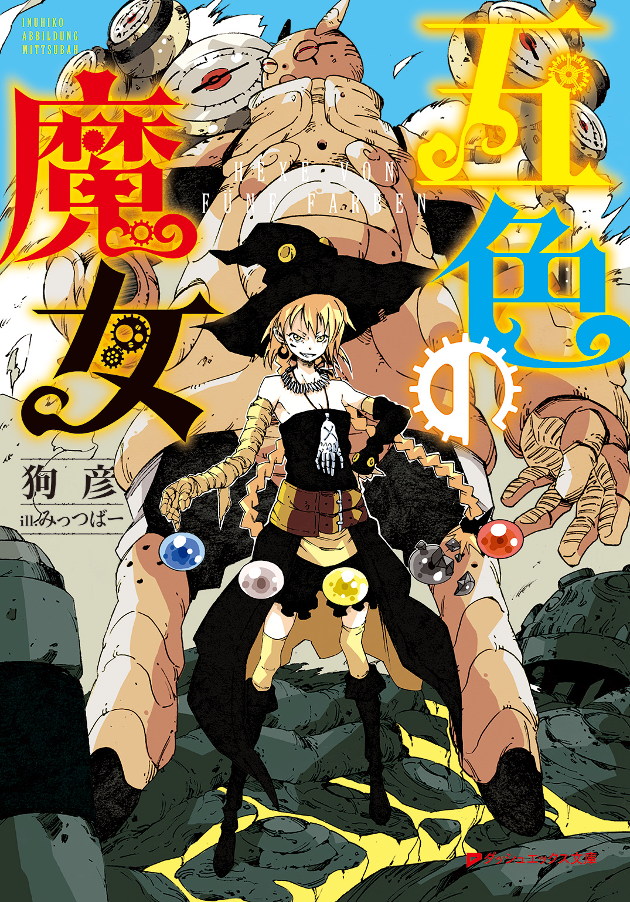
この本は縦書きでレイアウトされています。
また、ご覧になる機種により、表示の差が認められることがあります。
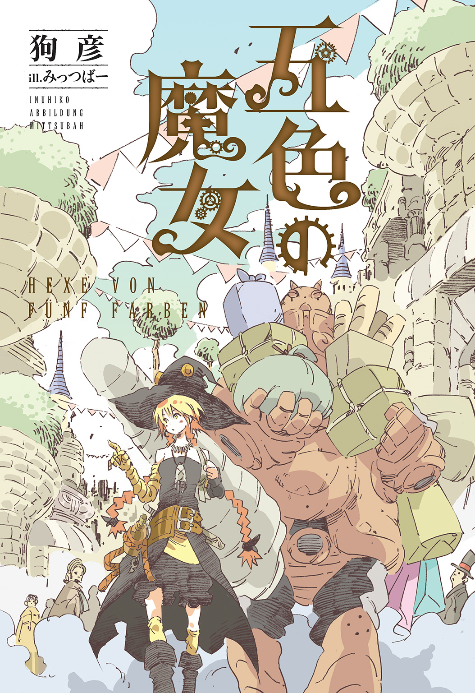
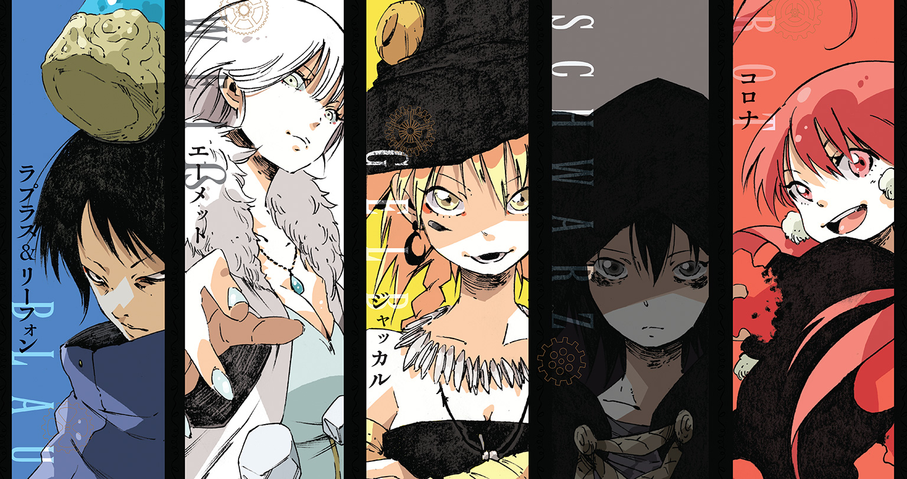
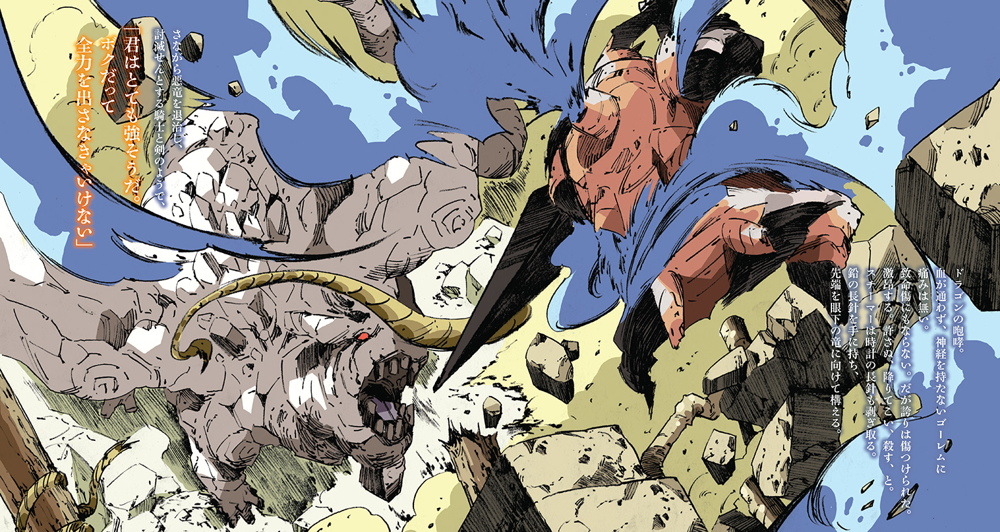
 ダッシュエックス文庫DIGITAL
ダッシュエックス文庫DIGITAL
五色の魔女
狗彦
プロローグ
昼夜の区別がない世界。
湿り気と暗闇が支配する一室があった。狭い空間の壁と床は石で造られており、あまりにも冷たい。
息が詰まりそうな閉塞感の中、一人の男がボロ衣のように横たわっていた。
二十代後半の男だ。体中青痣だらけ。着ている服はそれほど貧相なものではなかったはずだが、汚れ擦り切れ、酷い有様になっている。
「ぅ......」
全身を嬲る痛みに呻く。
「おいおい、だらしがねぇな」
横たわる男に声がかけられる。男は首だけを動かして、声の主を見つめる。
「お、気づいたか。結構結構、水を浴びせて叩き起こす必要がなくて助かる」
男の視線は、鉄格子を隔てた向こう側へ。そこには羅紗の黒い軍服に身を包んだ兵士が立っていた。今にも消え入りそうな灯りが、嘲笑を浮かべた兵士の顔を照らす。
「牢屋生活はどうだった？」
兵士はヘラヘラと笑いながら男を見下す。
「どうもこうもあるか......」
男は掠れた声で怒気を孕んだ視線を向ける。兵士は、やれやれと首を振る。
「一カ月経ってもわかっちゃいねぇ......『尋問役』の俺様とは仲よくしておくべきなんだがなぁ。まぁ、いいさ」
兵士は鍵を取り出すと、重厚な鉄格子の錠前へと突き刺す。
「......俺の死刑の日程でも決まったのか？」
「違うんだな、これが。俺も生意気なテメェをギロチン台とキスさせてやりたかった。本当に残念だ」
兵士は言葉を続ける。
「テメェの処遇が変わった」
男が訝しげな表情になる。兵士は彼の表情が当然といわんばかりに頷く。
「どうせあとから知ることだが、教えてやる。テメェは国外追放だ」
「それは一体、どういう成り行きだ......？」
「俺が聞きたいね、そもそもお前は――」
兵士の背後から来た影が、言葉を遮る。
「どう邪推しようと構わない。結果を知るのは、いつだって物事が過ぎ去ったあとだ」
険しく淀みのない声。軍服の男が兵士の背後にいた。胸や肩に煌びやかな勲章をこれでもかとつけている。男が兵士にとって遙かに上役であり、本来は相まみえることのできない相手だとすぐにわかる。
この国の王を導き、政治を補助する宰相。実質的な国のトップだった。
「こ、これは宰相閣下！」
兵士は振り返るやいなや、背筋を伸ばし、ふんぞり返っていた態度を改めた。
宰相は敬礼する兵士を無視して、牢屋の中の男を見る。
害虫を見るような無感情な視線を受けて、男はただ睨み返すだけだ。互いの視線は数秒だけ交差して、
「連れていけ」
宰相は兵士に命令した。牢屋が開かれ、男は連れていかれた。
一週間後、男は森へと続く道に立っていた。身なりは多少整えられているが、それは罪人としての最低限だ。
男の傍らには数名の兵士がいて、彼の手枷に紐を繫いで立っていた。
「尋問役」の男が森へと指を差す。
「この森を越えた先が国境の外だ。あとはテメェ一人で行きな」
目の前に広がる森は樹海と呼べるほどに広大だ。厚すぎる枝葉の傘は陽の光が差し込むことを決して許さない。今は昼間だというのに、樹海は永遠の夜闇を演出していた。
この樹海の果てに、本当に別の地があるのか？ 地図上で知ってはいても、誰もが本能的な不安を抱かざるを得ないだろう。
男の手錠が外される。ゴトリ、と鈍い音を立てて落ちる木製の手錠を眺めながら、彼は手首をさする。
「おらっ、ボケッとしてねぇでコレを持っていきな」
「尋問役」の兵士が革製の鞄を差し出す。受け取ると鞄には厚みがあり、ずっしりとした重さがある。そして留め具には頑丈そうな錠前が取りつけられていた。
「これは、なんだ？」
「国境を越えるんだ、許可証に決まってるだろうが。持っていけ。鞄には鍵が掛かっている。変な小細工をしようとは思わないことだな」
「......関所はさっきの村にあっただろう？ もう通り過ぎたはずだ」
男は、ここまでの旅路を思い出す。最後に見た村は、この国の東の最果てに位置していたはずだ。賑わいのない寒村だったが、関所としての役割を持っていた。
兵士は面倒臭そうに頭を搔いて、
「厳密には、この樹海の先に国境線がある。簡易の関所に近いモノがあるから、そこに行けってことだよ」
「尋問役」の男が数歩だけ退いてから右手を上げると、他の兵士達が肩に背負っていた長銃を構えた。銃口は男の胸に向けられており、
「さぁ、これでお別れだ。二度と我が国、ヤルングレイプの地を踏むことがないように注意したまえ。次に会えば鉛玉をもって迎え入れよう」
「尋問役」の兵士は最後に口を歪めて、
「まぁ......そんな心配は杞憂に終わるだろうがね。精々頑張りたまえアドルフ君」
男、アドルフには言葉の意味がわからない。ただ兵士達に追い立てられるがまま、樹海へと足を踏み入れた。
樹海は広く深い。
文明が入り込む隙などない。人間が開拓していくには、まだまだ時間がかかるであろう土地だ。しかし辛うじて道はあった。一見、獣道とも見て取れる寂れた道をアドルフは歩く。国境を越えるにはこの道を辿り、一日半歩き続けなければいけないらしい。
問題は他にもある。広大な森を抜けても、隣国が快く迎え入れてくれる用意があるわけではない。彼には流浪の民として、路上に這いつくばる運命が待っている。明日の食事さえ困る日々になるだろう。雨に打たれ、雑草を食み、鼠を追いかけまわす。そんな獣同然の生活を想像すると、アドルフは小さく呻いた。空っぽの胃が強く締めつけられる。
アドルフは近年国力を高め続ける強国、ヤルングレイプ国の国民だった。
身分は中流階級になんとか当てはまる程度のいち国民。さらに言えば反乱分子、テロリストだった。
蒸気機関という革新的な技術進化に背を押され、発展を続けるヤルングレイプ国。だが必ずしも皆が幸せでいられる国ではなかった。
特に今年は飢饉による影響がひどかった。アドルフ自身の生活も苦しくなっていたこともあって、行動に出た。徹底的な絶対王政だったヤルングレイプ国で民衆の権利を訴え、王を否定しながら首都の広場を練り歩いたのだ。青臭く、ヤケクソではあったが、多くの人が賛同してくれた。彼は理想に燃えた。このままなら国そのものを変えることだって――。
しかしアドルフは上流階級の貴族にとって害虫以外の何者でもなかった。あまりにも目立ちすぎた結果、彼は「尋問」と称される拷問を受けたうえ、国家反逆の罪で死刑となるはずだった。
しかし実際は違った。首はいまだ繫がっている。アドルフには国外追放という中途半端な判決が下された。
「......どういうことだ？」
森の中を歩きながら独り呟く。
「恩情など、あの腐った連中にはありえない」
顎を指で擦り、ついでに伸びた無精髭を抜く。連日の拷問で彼の身体と精神は摩耗し切っていた。頭が回らず、状況に理解が追いつかない。
「――」
森がざわめく。鴉が喚き散らしながら森を飛び立ったのだ。直後、獣の咆哮が響く。
「ッ」
アドルフは思わず立ち止まる。獣は近くで吠えたわけではない。それでも肌を震わせ、心臓を凍らせるには十分だった。
これだけの森だ。獣の一匹や二匹はいるだろう。正体は熊か何かだろうと推測する。だが、
「これは......普通じゃない」
問題は、咆哮が異常な凶気に満ち満ちていることだ。
「一体、何が起きている」
ぞぞぞ、と足元から這い上がってくる恐怖に襲われる。この世界でアドルフはあまりにもちっぽけだ。
アドルフは冷や汗の滲む掌を握ってから、しゃがみ込む。擦り切れた汚い靴を脱ぐと、厚めの靴底に指をかける。指に力を入れて靴底を少しばかり捲ると、中から薄い金属が鈍い光とともに現れた。彼は薄く小さい金属を取り出し、目の前に掲げる。剃刀のような鋭い刃だった。
長い牢屋生活の時から隠し持ってはいたが、終始使う機会のなかったものだ。
「糞兵士どもの喉元に突き込んでやりたかったんだがな」
しかし長銃を持った多数の兵士を相手に、こんな小さな刃物ではどうしようもなかった。
「まぁ、もし熊か猪に襲われてもこれがあれば......いや、駄目かもな」
必殺にはなりえず、心もとない武器ではある。だがないよりはマシだ。アドルフはそう割り切り、再び森を進んだ。
結局、彼は獣に遭遇することもなく、三時間ほど歩いた先で道は途絶えた。
「おいおい......」
アドルフは思わず呻く。しかしここはヤルングレイプ国の東の果て。人はほとんど寄りつかず、道が消えていても仕方のないことだった。森を抜けた先にある隣国との関係も、原因の一つだろう。
周辺諸国とは関係悪化の一途を辿っている。ヤルングレイプ国の国力増加が理由だ。近年の蒸気機関をはじめとした技術革新は多分野に影響を与えた。特に軍事面では銃の量産化が進み、騎馬戦による従来の戦争の形さえ変えてしまうと言われている。
力を増し続けるヤルングレイプ国は他国に威圧的な態度を取るようになってきた。おかげで周辺諸国との貿易も徐々に減少し、緊張感だけが高まっている。ほとんどの国民は国境付近に近づくことさえできず、一部の国境付近の実情は全く知られていない。
突然、樹海の中で得体が知れない発砲音が聞こえた。一つではない。二つ三つと連続して森の中に響き渡る。
「――っ！ 今度は何だ」
アドルフはありえないと思いながらも、咄嗟に身を屈める。瞬間、頭のあった空間を高速の何かが通り過ぎた。恐らく銃弾だと考え、背筋を震わせる。
発砲音はかなり近い、おまけに金属と金属を打ち合わせる剣戟の音まで聞こえてくる。
「とにかく......！ 隠れなければ」
屈んだまま、背の高い草木に身を沈ませる。
森の奥深いところで、誰かと誰かが争っている。命と命を賭けた殺し合いだ。誰が？ なぜ？ という自問の答えを探り、
「この樹海は国境沿い。隣国が攻めてきているのか？ だとしたら国境に配置した兵が応戦しているのか......？」
否、とアドルフは首を振る。この樹海はヤルングレイプ国の国境の中でも難所の一つだ。攻めも守りも容易くはない。
ヤルングレイプ国の兵隊は、森に最も近い村落付近に配備されている。彼らが争うとしても戦場はここではない。
「じゃあ一体誰が戦っているんだ」
興味に押され、戦渦の音が響く舞台へと這ってゆく。
木々が生い茂るなか、三〇名弱の兵士が銃を構え、あるいは剣を振るっていた。
朱色を基調とした軍服の兵士。ヤルングレイプ国の隣国が秘密裏に派遣した一個小隊だ。国境警備の薄い樹海を渡っていた彼らは今、正体不明の敵と接触していた。
「どういうことだ？」
兵士は皆一様に困惑している。樹海で敵に接触したからではない。相手の姿が異様なのだ。
敵数は約七〇名。ヤルングレイプ国の軍服を着こんだ者がいれば、一般市民の服装をしている者もいる。男がいれば女もいる。子供もいれば老人もいる。戦う者としては、あまりに統制の取れていない集団が襲ってきたのだ。
彼らの半数以上は素手か棒きれを握るのみ、残りも錆びた剣や斧程度の武装だ。銃火器は持っていない。
人数では負けていても、装備では圧倒的に小隊側が優勢だ。
小隊の兵士は銃の照準を定める。撃つことに迷いはない。もとより彼らは秘密裏の部隊。その存在を誰にも知られるわけにはいかず、一般人だろうと殺す以外の選択肢はありえない。
「何者かは知らないが、悪く思うな」
兵士は長銃の引き金を引いた。
火薬の炸裂とともに鉛玉が発射される。訓練された兵士だからこその正確無比な弾道であり、弾丸は一般市民風の男の眉間を穿つ。男の額から赤黒い血が噴き出て、
「――なっ」
しかし撃たれた男は止まらない。致命傷のはずの銃撃を受けて尚、体勢を崩しながらも走り迫ってくる。驚愕に身を硬直させた兵士はすぐに距離を詰められた。
「ぎっ......！」
兵士の肩口に男の歯が突き刺さり、そのまま押し倒された。兵士の悲鳴が響き、男のあとから続いた老婆が錆びた手斧で兵士の頭を叩き割る。飛び散った脳漿が大地に染み込んだ。
「どういうことだ！ なぜ死なない！」
別の兵士が叫び、剣を抜く。迫ってきた敵に、大上段から勢いがついた刃を叩き込む。太刀筋の先、相手は身体の細い女性だ。武器となるものは何も持っていない。本来ならば相手にもならない。
刃は女性の肩に深々とめり込む。
「くっ......！」
だが死なない。殺せない。
女性の首がギリギリと動き、兵士のほうを向く。
兵士は間近で女性を見て、気づいた。
表情の不確かな貌。血の気のない肌。異常に窪んだ眼窩。焦点の合わない瞳。そして鼻を刺す腐臭――。
ひ、と兵士は漏れ出る悲鳴をなんとか堪える。眼前、七〇体に及ぶ敵の正体を理解すると同時に女性を蹴飛ばした。女性は蹴りの衝撃で吹き飛び、仰向けに倒れる。
「これは死体だ！ 生きてなんかいない！ ずっと前から死んでいる！」
兵士の叫びに他の兵士が目を剝く。
「お前、何言って......！」
否定しようとして、しかしできない。弾丸で穿とうと、刃で裂こうと、目の前の人型は決して止まらないのだから。
兵士達にとって優勢なはずの戦場は瞬く間に劣勢に、そして虐殺の現場へと変わる。最後には武器を捨て、森の奥へと逃げ出す兵士もいた。
遠く、草むらに隠れる形で見守っていたアドルフは、惨劇に息を吞む。身体は知らず知らずのうちに後退していた。
「なんだ......これ」
それも当然。目の前で繰り広げられている光景は現実にあっていいことではない。死者が生者を襲っているなど、地獄絵図でしかない。
「――ッ！」
だからアドルフは兵士達の最期を見届けることなく、逃げた。
悪いとは思わない。アドルフにできることは何一つなく、仮に隠れているアドルフが死者に見つかりでもしたら抵抗する術はない。弱った身体では逃げ切れず、殺されるだけだからだ。
アドルフは悲鳴を堪えながら走る。ひたすら走る。
背後の様子は確かめる気になれない。死者がすぐそこにいるかもしれない。落ち窪んだ眼窩で見られているのかもしれない。皮膚の腐り落ちた腕が、今にも彼の肩に触れるかもしれない。
息が切れ、心臓が喧しくて仕方がない。それでも走らなければいけない。死者に会わないために、少しでもあの地獄から離れなければいけない。
転び、土に塗れても遮二無二走る。
半日をかけて、死に物ぐるいで走った先、見上げるような建物が彼の行く手を塞いでいた。古びたレンガ造りの屋敷だ。
既に陽が落ちたのか、闇の気配は一層強いものとなっていた。アドルフの疲労が限界を超えていたこともあって、足を止めざるをえなかった。
屋敷周辺には多種多様な植物がひしめいている。だが無秩序な有様ではない、まるでどこかから切り取られてきたかのように整理された区画だった。節度と調和によって管理されたガーデニングだ。
だからこそ異様であり、童話世界から切り取られた風景のような非現実感。
アドルフは戸惑いながらも、しかしこのまま立ち尽くしているわけにはいかない。一刻でも早く、この森から抜ける手段を探さなければいけない。
もしこの屋敷に人が住んでいるのなら助けを乞わざるをえない。彼は屋敷の門を潜って玄関へと向う。
樫の木でできた重厚な扉の前に立つと、数回ノックする。
「失礼」
返事はない。
更に数回ノック。
またしても返事はない。
「留守か......？」
ドアノブを捻ってみれば、
「開いた」
抵抗なく、すんなり扉は開いた。
無断で屋敷に入っていいものかと迷う。自国で罪人扱いされようと、アドルフはそのことに納得してはいないし、人間としての尊厳を捨て去った覚えはない。
「あと一回ノックして返事がなかったら、離れよう」
心の奥底では返事がないことを祈ってもいた。この屋敷は不吉な何かを感じさせる。できれば関わりたくないと彼の本能が叫んでいる。
アドルフが拳を作ってもう一度だけノックしようとして、
「――やぁ」
耳朶を震わせる女の透き通った声。そしてアドルフの肩をザラリとした感触が撫でる。
「ッッッ！」
アドルフは叫びそうになりながら、全力で横っ跳びした。姿勢を崩し、転びながらも振り向く。そして目を見開いた。
「お、女......？」
アドルフの目の前に十八歳程度の少女が立っていた。誰もが見惚れるほどに美しい顔立ちをしているが、可憐と呼ぶには容姿があまりにも鮮烈すぎた。
まず目に入ったのは、獣の鬣の如く荒々しい黄金の髪。少女はその黄金を腰まで届く三つ編みにして束ねている。
そして次に目に入るのは、気の強そうな吊り目とその眼窩に収まった金の瞳。黙って立っているだけで周囲を威圧しかねない対の眼光に加えて、彼女の服装は更に奇天烈極まりない。
頭上に黒の巨大なトンガリ帽子を被り、しなやかで細い身体に黒の衣服を纏い、肩と胸元は健康的な肌を惜しげもなく露出している。
そして彼女の右腕には、肩口から指先まで黄色の布がグルグルと幾重にも念入りに巻かれていた。今はキョトンとしながら、黄色の布で覆われた右腕をフラフラと宙空に振っている。
アドルフは気づく。自分の肩を撫でたものの正体は、あの人目を引く腕なのだろうと。
「............」
「............」
互いに無言のまま立ち尽くし、
「ッハハハハハ！」
最初に口火を切ったのは少女のほうだった。口端を上げて笑うと、アドルフの顔を真正面から捉える。
少女はスラリとした長身ではあるが、一八〇センチ強のアドルフには及ばない。必然的にアドルフは少女に見上げられる形になるのだが、アドルフとしては威圧されるように見下げられている気分だった。
「いやー、スマン。そんなに驚くとは思わなくてね。久々の来訪者だと思っての悪戯だ。許せ」
腹に重たいものを感じ、アドルフは言葉を返すことができない。彼女はそれを知っているのか知らないのか、勝手に話し続ける。
「とりあえず腰を下ろして話そうじゃないか」
少女は手招きして、屋敷の側面へと回る。アドルフは、ただついていくほかない。
屋敷の側面には大きな庭があった。池があり、巨大な樹木が数本立っている。樹木と樹木の間には手製であろうブランコが吊り下げられ、小さく揺れている。
庭の中央には木製の丸テーブルと椅子が二つあった。テーブル上にはオイルランプが置かれ、鯨油に灯された柔らかな炎が揺れていた。
「こっちだ」
少女は椅子にドカッと勢いよく座り込む。そしてもう一つの椅子を指差す。
アドルフが座るのを待ってから少女が口を開く。
「悪いな。屋敷の中は散らかり放題なんだ。とても人様に見せられる状態じゃない」
「構わない。どうせ長居はしない。ところでアンタは......」
「おっと、自己紹介がまだだったな」
少女が胸を張ってニタリと笑む。
「私は、ジャッカルという」
名乗りをあげた少女は腰に手を回し、鎖で腰に括りつけていた瓶を手に取る。
「ッ！」
アドルフは息を吞む。彼女が手にしたのはブランデーの入ったボトルだ。ただし、ブランデーの中にはサソリが沈んでいる。
「どうした、珍しいか？」
「悪趣味だな」
ジャッカルはニヤニヤとした顔つきのまま、ボトルを口に当てて勢いよく傾ける。そしてブランデーを一気に飲み干した。空になったボトルの底にサソリだけが残る。
「失礼だなー、こんなに美味いのに。隣国から伝え聞いた酒の製造法を真似ただけだぞ？」
彼女が一気に呷ったそれはアルコール度数の高いブランデーだ。大の男でも無茶な飲み方をすれば咽が焼け、火を噴きかねない。最悪、急性アルコール中毒であの世行き。しかしジャッカルなる少女は頰を僅かに紅潮させただけだった。
「それで、お前は？」
ジャッカルが手元のボトルを逆さに振りながら問う。
「は？」
「名前だよ。秘密か？」
「いや......俺はアドルフだ」
アドルフはしばし黙考してから思いつく。兵士達に渡された革製の鞄を見ながら、
「ひょっとして、ここが国境間の関所か？」
関所というには、あまりにも異質な場所。だが目の前の少女は首を横に振らない。
「まー、そんなもんかもな？」
なんとも曖昧な答え。彼は鞄を差し出してみる。
「通行証がここに入っているらしい。確認を頼む。俺は国境を越えていかなければならない」
ジャッカルは鞄を手に取って錠前を眺める。
「鍵付き、ね」
ジャッカルはそこで鞄とアドルフを交互に見る。
「お前、一体何者だ？」
ジャッカルが首を捻る。その問いこそアドルフがしたいのだが、今は素直に応じる。
「俺はヤルングレイプから国外追放を受けた罪人だ」
「へぇ～」
仮にも罪人だという人間を前にして、ジャッカルはまるで気にしていない。それどころか口端を吊りあげ、彼を嘲笑うかのような笑みを作った。
「とりあえず、この鞄について教えてやろう」
彼女は鞄に取りつけられた錠前を指差し、
「これは特殊な機構をしたヤツでな。無理にこじ開けようとすると、鞄内部に仕込まれたインクの袋が破裂。中身の文書はグシャグシャだ。ちなみに、専用の鍵は私しか持っていない」
「そんな仕組みの鞄など、聞いたことがないな......」
一囚人に持たせる鞄にしては、随分と念入りなカラクリではないだろうか？ アドルフは違和感を覚える。それはすぐに容易く拭い切れない悪寒へと変わる。
ジャッカルは、アドルフの心の内を察して満足げに頷く。
「気づいたのかもしれないが、これは通行証なんてもんじゃない。もーっと重要な機密文書だ」
ジャッカルの腰には、ジャラジャラと鎖で束ねられた無数の酒瓶がある。しかし、よくよく見れば違う物もあった。酒瓶に埋もれていたソレは、煌びやかな装飾の施された黄金の鍵だ。
「お前はヤルングレイプの連中にお使いをさせられたんだよ」
ジャッカルは鍵を取り出すやいなや、すぐに鞄の錠前に差し込んだ。ガチャリと重たい音を立てて鞄が開かれる。
中には羊皮紙が二枚入っていた。一枚目の紙はアドルフの罪状について。二枚目の紙には何が書かれているのか、アドルフにはわからなかった。ただヤルングレイプ王の派手な印が押されているのが見えた。
「ふぅん、只事じゃなさそうだねぇ」
ジャッカルは楽しそうに文章を読み進める。文章自体は短く、読み終えるまで三〇秒もかからない。
「――ッハハハハハハハハハハハハハハ！」
そしてジャッカルは大笑した。腹を抱え、目尻には涙さえ浮かべて笑う。
「ッハハハハ......ハハ。こんなことが起こるとはね」
ひとしきり笑うと、彼女はアドルフに目を向ける。
「さーて、お前のほうはどうしたものかな？」
「俺は、国境を抜けるだけだ」
ジャッカルは大仰に首を振る。
「自分でも違うとわかっていることを言うもんじゃない。国境なんて、ない」
「......じゃあ俺は何のために来た」
彼の心臓が高鳴る。背筋を嫌な汗が伝い落ちた。
「諦めが悪い奴だ。言ったはずだぞ？ お前は『お使い』をさせられたんだってね。嵌められたんだよ」
アドルフは死刑囚になるはずだった。ただの「お使い」に危険な罪人を使うだろうか？ 否、ただの「お使い」では済まないとわかっているからこそ、アドルフが利用されたのだ。
「ふざけるな！」
思わずアドルフは椅子から立ち上がる。彼の表情は緊張で強張り、対してジャッカルは陰惨な笑みを浮かべる。
「お前の仕事は、ここで終わりだ」
ジャッカルはパチンと指を弾く。
と同時に、屋敷の庭が地響きを立てて揺れた。
「ジャッカル～、ボクに仕事させておいて、随分と楽しそうに喋ってたよね」
アドルフの背後から声がする。こもっていて、しかしどこか幼い口調の声だ。アドルフは背後を振り向き、絶句した。
「なっ......！」
アドルフを覆う影。見上げなければならないほどの巨体がそこにいた。
人ではない。鉄塊から太い手足を生やしたような人形がいる。あるいは人間が着込むことをまったく考慮していない超重量の鎧だ。時折、鋼鉄の人形は身体の各部に空いた孔から蒸気を噴き出している。蒸気は緩やかに周囲に滞留。香を焚いたような匂いに鼻孔をくすぐられる。
鋼鉄の人形は、角ばったフルフェイスの兜を傾けてアドルフを見下ろす。
「あ、いいお肉が獲れたんだよ。お客さんもどう？」
人形は気軽な言葉とともに手を掲げる。
アドルフは硬直したまま眼球だけをゆっくりと動かして、巨大な手に握られているモノを見る。黒い剛毛に覆われた太い腕。大型の熊のものだった。体長三メートル、体重四〇〇キロはあるだろうグリズリーの死体が引き摺られている。
アドルフの目の前にいる鋼鉄の人形は、グリズリーと肩を並べうる巨体だ。
このグリズリーこそ道中で聞いた狂獣の叫びの正体。アドルフは直感で理解した。禍々しい咆哮は仕留められた時の断末魔だったに違いない。
「狩りも結構だがな、そんな馬鹿みたいな量の肉を誰が食べるっていうんだ？」
溜め息を吐くジャッカル。鋼鉄の人形はジャッカルを見る。
「いつもお酒ばかり飲んでたら身体によくないよ？」
「余計なお世話だ。ほっとけ」
「そうはいかないよ。とりあえず、燻製にして保存しておくからね？」
鋼鉄の人形が肩をすくめ、アドルフを再び見つめる。
「初めまして、ボクはスチーマー。ジャッカルが名づけてくれたんだ」
蒸気男。随分と雑で物々しいネーミングだった。アドルフは何も言葉を返すことができずに、見上げるだけ。
スチーマーは首を傾げて、
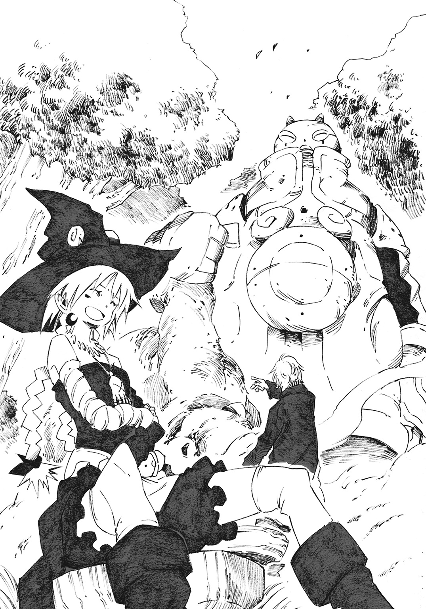
「あれ、言葉通じてる？ この国の人じゃないのかな......。一応、この国に接している三つの国の言語も話せるから――」
「スチーマー」
おそらく男性であろうスチーマーの言葉は、ジャッカルの呼び掛けに遮られる。
「自己紹介なんぞどうでもいいし、お前のマルチリンガルにも意味はない」
ジャッカルは敷地の外を眺める。風景の全てを占める樹木を見てから、
「そもそも隣国から人が来られるはずがないだろう？ 私の魔術が迎撃するんだからな。だからそいつはヤルングレイプ人で、しかも罪人で」
魔術、という聞き慣れない単語がアドルフの頭の中で反芻される前に、ジャッカルが笑いを堪えた声で続ける。
「もう用済みだ」
瞬間、アドルフは戦慄する。背筋は凍り、膝が抜けそうだった。
少女の貌はひどく残忍な色を含んでいる。彼が拷問を受けていた時に何度も見たことがあった。暴力を振るうことに躊躇いを覚えず、それどころか愉悦さえ感じる人間特有の眼だ。
「ッ！」
アドルフは恐怖を圧して駆けた。逃げるためではなく、スチーマーに向かって、だ。
絶望的な消去法の果てに導き出した選択だった。
スチーマーは見るからに危険極まる。ならば十八歳程度の少女、ジャッカルを襲うか？ 否、あの少女は目の前に立つ鋼鉄の人形よりも更に禍々しく、恐ろしいモノを孕んでいると彼は直感で理解している。もう視界に捉えたくもない。
だからといって、スチーマーをどうにかできるなどと彼は楽観もしていない。間違いなく目の前の存在は怪物の類であり、人智の及ばない力を持っている。
「おおおおおおおおおおおおおおっ！」
叫び、アドルフは隠し持っていた薄い刃を取り出す。
怪物を相手取るにはどうしようもなく頼りない武器だ。まともに突き立ててもスチーマーが身に纏う鋼鉄の装甲には弾かれてしまうだろう。
だから彼は関節部の柔軟さが求められる位置、鉄板と鉄板の合間に刃を刺し込む。それしか勝機はない。幸い、スチーマーの片手はグリズリーを摑んだまま塞がっている。
だからアドルフは体当たりする勢いで、スチーマーの上げた手を潜り、脇腹を狙う。関節部であり、鉄で覆われていない部位。ゴム製の膜で覆われていたが、十分に裂ける軟さだ。そこに刃を突き込んだ。体重をかけて全力で刃をねじ込む。
これでは殺し切れないだろう。だが少しでも痛がったり怯んだりすれば隙を突いて逃げられる。そのための捨て身の攻撃だ。
痛いはずだ。苦悶の声の一つでもあげてみろ、とスチーマーを見上げれば。
「ん？」
間の抜けた声とともに兜を傾けている。
渾身の一撃が、効いていない。
アドルフの表情が青ざめ、ジャッカルの笑い声が深い森に響いた。
綺麗な顔を歪めて笑う彼女は、まるで魔女のようだった。
第一章 鍍金は剝がれ落ちながらも輝き続け
生まれて最初に目に入ったのは、一人の少女だった。
金髪金眼。獣のように鋭い瞳をしていた。そして小さい。ボクの半分くらいの背丈しかない。もしかしたらボクが巨きすぎるだけなのかもしれない。
少女はボクの意識があることに気づいたらしい。
ほっと安堵するような表情を浮かべる。泣き出しそうな顔をしているようで、懐かしさに浸っている顔にも見えた。理由はわからない。
だが少女は、すぐに表情を消す。取り繕うように口端を上げてボクを見上げた。
「私はジャッカル」
少女が自分を指差し、次にボクを指差す。
「お前はスチーマー」
ボクの意識は朦朧としていた。不確かな感覚のまま少女の言葉を復唱する。
「私はジャッカル。お前はスチーマー」
殴られた。
殴った少女のほうが痛かったらしい。拳をさすりながら、眉を上げて怒っている。
どうやら「ジャッカル」は少女のことで、ボクという存在を「スチーマー」と呼称するらしい。
少女は自身を〝魔女〟と称した。ボクは魔女であるジャッカルのために造られたのだ、とも言った。
それがジャッカルとの出会い。
今も思い出す。何年経っても忘れられない。そして自問する。ジャッカルがボクを初めて見た時のあの表情は一体なんだったのか、と。
あんな顔をされては、とてもボクから尋ねられないじゃないか。
一人の囚人が東の森に入ってから一週間。
ヤルングレイプ国の首都、ミョール。そこは全ての収束地点だった。
王の住む宮殿を中心とし、平地に堂々と構えられた大都市は人口にして百万を超え、国中の金、物資、技術、情報が集まる。
整理された区画にレンガ造りの家々が立ち並び、石畳の大通りには様々な人と物が行き交う。
街路樹の青い葉が目に染みる初夏。午前中の晴れ空の下、大通りを、人目を引く少女が歩いている。ジャッカルだ。露出が多く、大道芸人のような奇怪な姿恰好はよく目立つ。
彼女の背後について歩く巨体、スチーマーは全身を麻布で覆っており、その全容を見せない。それでもジャッカルの倍以上はあろうかという巨体。これもまたよく目立つ。
ジャッカルは鼻歌交じりにキョロキョロと周囲を見回すと、
「五〇年ぶりといったところ、か。何もかも変わっちまってサッパリわからん。懐かしさすらないね」
十八歳程度にしか見えないジャッカル。少女の姿ではありえない年月の過去を思い起こそうとして、すぐに諦める。
「いや、でも遠くに見える時計塔だけは知ってるぞ。私が前に見た時は新しかった」
「楽しそうだね、ジャッカル」
スチーマーに表情はないが声の調子だけで、彼も少し浮き立っているとわかる。
「そりゃそうさ。お前は森から出てくるのが初めてだろう？ 別世界に来た気分のはずだ」
スチーマーは苦笑。東の果て、夜干の森を思い浮かべ、
「あんな樹海に何十年も引きこもっているボクらこそ、別世界の住人だと思うんだけどね」
彼らの横を石炭車が通り過ぎる。ジャッカルは啞然としてそれを見送る。そしてはしゃぎ出す。
「なんだアレ、あれが噂の蒸気機関ってやつか！ 初めて見たぞ！」
スチーマーも兜を傾けて、
「ジョーキキカン？ 確かに不思議。鉄の箱に車輪を付けただけで、なんで動くんだろうね？ 箱の中に何か詰まっているのかな」
「わかった！」
ジャッカルが指を弾く。
「中で車輪を回している人間がいるんだ」
「なるほど、ジテンシャならボクも聞いたことがある。さすがだねジャッカル」
鉄箱の中で車輪を漕ぐ人間を想像。スチーマーが心底感心しながら頷く。
「乗ってみたいが......、まあいいさ。たぶんお前のほうが速いだろ？」
「うん、たぶんね」
ジャッカルはスチーマーを見上げると、彼の胴を拳で叩く。
「ハッキリしない奴だ。お前には並々ならぬモノを詰め込んでいる。男の子なんだから誇りを持っていい」
「んー、ボクのソレは誇りも何もないよね」
「そんなことないさ。私が保証してやる。素晴らしいモノだ」
スチーマーは空白を置いてから尋ねる。
「......ところで、ボクらがミョールに来た理由がわからないんだけど？ そろそろ教えてほしいよ」
「あれ、言ってなかったか？」
「言ってないよ」
ジャッカルは面倒臭そうに頰を搔きながら、言う。
「私が〈五色の魔女〉の一人だ、ってのは知っているだろう？」
スチーマーが頷く。続ける言葉には尊敬と親愛が混じっていた。
「ヤルングレイプ国の五人の魔女。黄の魔女が君だ」
ジャッカルは傍らのスチーマーに向けて掌を広げる。そして親指を折る。
「五人の魔女には、それぞれに対応した色がある。黄の魔女である私の他に、あと四人の魔女がいるのさ」
一本ずつ残った指を折り曲げていく。
「赤、青、白、黒、の魔女だ」
「うん、ボクはその魔女さん達に会ったことがないけどね」
ジャッカルは苦笑。
「無理して会う連中でもない。どいつもこいつもおかしな奴らだ」
「ジャッカルがそれを言うの？」
「うるせぇ」
彼女はスチーマーの腹を軽く小突く。
「あのアドルフとかいう罪人が持ってきた手紙には、簡単にこう書いてあった」
ひと息入れて、ジャッカルは朗々と語った。
「『黒が死亡した。至急、首都ミョールに来られたし』ってね」
スチーマーが息を吞んだ気配が彼女にも伝わる。
「まぁ疑問はあるとは思うが、私もそれ以上のことは知らない。だから私達はその説明を聞きに来たというわけさ」
彼女の表情に悲しみはない。それどころか気だるげな表情だった。
彼らが大通りを歩いてゆくと、噴水が中央にある広場に突き当たる。
「とりあえず、教会に行きたいんだがね。場所がわからん」
ジャッカルは周囲を見回す。遠目に教会らしきものがないか探しているのだ。
「なんだ、適当に歩いていたんだね。でもなんで教会？ 黒の魔女に関係が？」
「教会は別の用事だ。私の趣味の部分が濃い」
スチーマーも周囲を見回して、それからジャッカルの肩を叩く。
「教会はここからは見えないけど、神父さんならいるよ？」
「あぁ？」
スチーマーが指を差して、ジャッカルも合わせて視線を向ける。
確かに神父が立っていた。二十歳そこそこの清々しい顔立ちの好青年が漆黒の神父服を着こんでいる。
神父もジャッカル達の存在に気づいたようで、迷いのない足取りで近づいてくる。神父は微笑むと、身体を深く折って頭を下げる。
「貴方が黄の魔女、ジャッカル様ですね」
ジャッカルが神父をじっと見据える。
「ああ、そうだ。よく私達を見つけられたな？」
「そんな格好で大通りを練り歩かれては、すぐに噂されてしまいますからね。噂を辿って私から迎えに来たというわけですよ」
「ふぅん、ところでお前がロキ神父で間違いないな？」
「はい、私はロキ・フランシスといいます。貴方と直接会うのは初めてですね」
挨拶を交わす彼らにスチーマーが割って入る。
「ジャッカル、この人は？」
「私の取り引き相手だ。手紙でしか言葉を交わしていない関係だがね」
神父はスチーマーを不思議そうに見上げ、顎をさする。
「これはこれは......、随分と大きな方ですね。ジャッカル様の使い魔か何かですか？」
ジャッカルが頷こうとして、しかし先にスチーマーが言葉を返した。
「友達だよ」
彼の口調には苛立ちがほんの少しだけ混ざっていた。ジャッカルが目を丸くしたのも一瞬。はっと息を吐き出して笑う。
「ま、そういうことだ。スチーマーっていうんだ」
「なるほど、わかりました」
神父は頷き、それ以上の追及はしない。続ける言葉は静かで事務的なものだった。
「先日、貴方から頂きました会いたいとのお手紙の件、まずは教会に行ってから話を伺いましょう」
広場から少し離れた立地に寂れた教会がある。ひどく老朽化した建物だ。剝がれた壁、穴が開いた床。割れた窓ガラス。見るからに、もう寿命まで間もなくといった建物だった。
「埃っぽくて最低な所だな。昔に一度来た時もボロボロだったが、一層酷くなってる」
礼拝堂に入ったジャッカルが不満を漏らし、スチーマーがおっかなびっくり遅れてついてくる。
「うっかり床を踏み抜きそうだよ」
ロキ神父は苦笑すると、礼拝堂に並べられた長椅子の上を手で払う。積もった埃を落とし、
「住めば都というやつです。どうぞお座りください」
「じゃ、遠慮なく」
ジャッカルが勢いよく座り込むと、長椅子が軋む。
「ボクは遠慮するよ、椅子が壊れちゃうからね」
スチーマーはジャッカルの傍らに立つ。
「今更椅子の一つが壊れたところで気にはしないのですが、お気遣いありがとうございます。それではジャッカル様、要件とは？」
ジャッカルは足を組むと、膝の上に肘を立てて口を開く。
「一週間後に私の森、夜干の森に寄越すはずのブツ......。せっかくここまで来たんだから、アレをここで回収しておきたくてねー」
「それは、本当ですか......？」
ロキ神父は歯切れの悪い反応を示す。
「あ、都合が悪かったりするのか？」
「いえ......運送の手間がなくなるので、むしろ助かるのではありますが」
「じゃあいいだろ？ 代金はこの場で支払ってやる」
神父は一度迷ってから話す。
「そう簡単に持ち運べるモノではない、ということですよ」
ロキ神父はジャッカル達を教会の倉庫へと案内した。
神父が重たい鉄扉を開けると、視界の隅を鼠が駆け抜けた。倉庫の環境は礼拝堂のそれよりも更に酷い。薄暗く、埃で満ち満ちている。
「アレは馬車に引かせようと考えていました。総量は百キロ近いですからね」
厳めしく大きな鉄の箱があった。棺に見えなくもない長方形の箱はジャッカルの背丈ほどもある。彼女は近づくと、箱に触れる。ニタリと笑いながらスチーマーに視線を寄越す。
「スチーマー、持ち上げられるな？」
さも当然と言わんばかりの要求に、スチーマーは特に困った様子も見せない。
「んー、どうだろうね」
スチーマーがゆっくりと箱に近づくと両手を添える。
「うん、余裕みたい」
ミシリと鉄の箱が軋み、浮いた。スチーマーは軽々と肩に抱えあげてみせる。
「それは結構。神父、代金だ」
啞然としているロキ神父の手に、重たい感触が乗せられる。
「............これはまた随分と雑な支払いですね」
掌の上には、純金の延べ棒があった。
「金は何年経とうと価値が変わらないからな。むしろ上がる一方だ。それに金貨をチマチマと持つよりも、こっちのほうが楽で便利でもある」
ジャッカルは手を叩くと、出口へと向かって歩く。
「よし撤収だ。それじゃあロキ神父、先代の神父と同じようにこれからもよろしく頼むよ」
「こちらこそ、よろしくお願いします」
神父は彼らの後ろ姿を見送る。数分を経てから、自らの掌が汗ばんでいることに気づく。
「〈五色の魔女〉、得体の知れない方だとは思っていましたが......」
ロキ神父は溜め込んだ気疲れを吐き出した。
ロキ神父と最初に会った広場に戻った二人。ジャッカルはご機嫌だったが、スチーマーは釈然としない様子だ。
「結局、あの神父さんは何者？ そもそも神父さんとお金のやり取りなんかしていいの？」
「いいんだよ。あの神父、というか教会は他の教会とは少し毛色が違う」
ジャッカルは鼻歌を響かせて、足取りも軽い。
「教会ってのは、教えを広めるうちにあらゆる物の存在を認可する力を得ちまった。教えの中でもいろいろ取り決めはあるもんだ。『アレは良い、コレは駄目』ってな」
絶対王政、階級至上主義のヤルングレイプなら、他国に比べてその傾向は特に顕著だった。スチーマーは彼女の言葉を咀嚼しながら、
「それと何の関係が？」
「公にはできないが、教会に都合のいい物を保管、売買しやすいんだ。それこそ『神を冒瀆する存在』だって可能だ。誰かを咎める側であるはずの教会を一体誰が咎められるっていうんだ？」
スチーマーは数秒の黙考を経てから、
「......教会よりも上の、王様達がなにか言えばいいんじゃないかな」
「そう、王や貴族連中が窘め、厳しく言ってやるのが理想だ」
ジャッカルは小馬鹿にしたように拍手を送る。
「だが、あの教会は貴族連中にも商売をしているだろうな」
金か、麻薬か、密輸の品か、奴隷か、妖しげな骨董品か。神父が裏取り引きで何を売りさばいているのかはジャッカルの関与するところではない。いずれにしろ、あの教会は人には言えない方法で貴族連中に美味い汁を吸わせているのだ。
教会は腐敗の進んだ権力構造の象徴と言えた。
市民が集うはずの教会が広場から離れており、建て直しもせずに荒んだ有様なのは金銭的な理由からではない。むしろ裏の商売で資金は潤沢のはずだ。中流階級以下の市民に卑しいことをしているとバレず、目立ちすぎないようカモフラージュするためだろう。
「うわー......。あの神父さんは真面目で優しそうだったのにね」
「ああ、綺麗な面の皮の奥には中々汚いモノを抱えてやがる」
「そんな教会から買ったコレは？ どうせろくでもないモノなんでしょ」
スチーマーは肩に担いだ鉄箱をゴンゴンと叩く。
「失礼なー」
ジャッカルが頰を膨らませる。自分の玩具を馬鹿にされた子供のようだった。
「コレは普通の購入ルートを使うと、時間がかかるし手続きが面倒なんだ。だから教会を利用しただけさ。そういう時にあの教会は便利だ。今も昔も、な」
「......わざわざ夜干の森に届けてもらわずに、ここで直接買ったってことは、ここで使うからだよね」
ジャッカルは眉根を寄せ、言葉を返す。
「あくまで使う可能性がある、だ。なんせこれから〈五色の魔女〉が集う場所に行くんだからな。最低限の準備は必要だ」
「その〈五色の魔女〉はどこに集まることになってるの？」
ジャッカルは視線だけで遠くの建物を示す。レンガ造りの家屋が連なる区画、その更に奥――。
時計塔だ。距離はあるが、鋭く天を突く槍のような建物はよく目立つ。
「洒落た会場だろう？ だがまだ時間はあるし......」
ジャッカルは広場の端に大きな樹木を見つける。近寄り、木に背を預けて座り込む。
「何してるの？」
「はしゃいで疲れた。酒を飲むに決まっているだろう」
言うなり、彼女はサソリ入りのブランデーを取り出して口に注ぐ。
「あ、ダメだって言ったじゃないか。身体に悪いよー」
「もう一五〇年も生きているんだ。今更良いも悪いもあるかよ」
彼女はスチーマーの言葉にまったく取り合わない。
「ほら、酒の肴でも買ってこい」
「ボクはお金持ってないよ？」
ジャッカルは舌打ち一つ。スチーマーに向かって細かな粒状の物を放る。受け取ったスチーマーは掌にある物を見てから問う。
「これは？」
ジャッカルが放ったのは豆粒程度の金属十粒ほど。彼女は親指を立てて、
「鋳潰した金だ。正規の金貨なんて持ってない」
使いっぱしりをさせられるスチーマーは不満を返そうとして、しかし諦める。
ジャッカルはいつも自分勝手で、細かい雑務はスチーマーの役目なのだ。だけど別に嫌なわけじゃない。どんな在り方であれ、彼にとって存在理由があることは喜ばしいことなのだ。
「はぁ、わかった。買ってくるから、ちゃんと待っててね」
背を向けたスチーマーを見て、ジャッカルがふと思い出したように言う。
「おい、スチーマー」
「なに？」
「大通りを歩くのはかまわないが、あまり裏道とか細道に入るなよ」
「んー？ よくわかんないけど、わかった」
スチーマーは曖昧な返事とともに、巨軀を屋台の並ぶほうへと向ける。ジャッカルは酒を飲みながら見送ってやる。雑踏に埋もれ、大きな背中が消える最後の時まで。
「――遅い」
三〇分を経たが、スチーマーは帰ってこない。
暇を持て余したジャッカルは、呆然と行き交う人々を眺めていた。初めて都市を訪れた時は全てが珍しいと感じたものだが、今となっては違う。
どうやら最近発明されたラドリン染料を用いた紫色の衣服が流行しているらしい。人々の衣装は多少の差異はあれど、似たようなパターンばかりに見えてきた。
「そもそも服なんて、適当に見繕っても人それぞれ違ってくるだろーに」
あまりに退屈で面白味がない。思わず欠伸を漏らしそうになる。
「失礼」
突然の呼びかけに、ジャッカルは座ったまま頭上を見上げる。
「誰だ、お前？」
背の高い男がいた。黒髪で浅黒い肌の青年だ。長袖長ズボン、紺色で統一された薄い生地。細身ではあるが、引き締まった筋肉の鎧が服の上からでもわかる。
「ご一緒に来ていただきたい」
「なんでだよ」
男は無表情で口数が少なく、言葉は端的だ。そのためジャッカルは男の意図を摑めない。
（......いけすかねー野郎だな）
ジャッカルはムスッとした表情で、男を睨みつける。
しかし男はまったく動じた様子を見せない。彼は深く息を吸ってから、
「青の魔女が呼んでおります、と言えばおわかりですか？」
その言葉はジャッカルの口元を吊り上げ、彼女を動かすには十分なものだった。
ジャッカルが男についていくと、広場の隅に停車している石炭車があった。彼女は車内を覗き込むが、誰もいない。
「ここです」
男はそれだけ言うと、運転席に乗り込む。
「誰もいないようだが？ それとも青の魔女がいる所まで乗っけてくれるとか？」
ジャッカルはそう言いながらも、後部座席に乗り込んで座る。
男は運転席に収まったまま車を動かす素振りも見せない。後方にいるジャッカルにすら目を向けず、そっと言葉を吐いた。
「ラプラス様なら最初からここにおられます」
ジャッカルが顔をしかめる。それも当然だろう。この石炭車はそれほど大きくない。運転席に一人、助手席に一人、後部座席に二人。合わせて四人も乗ればいっぱいになる程度の車内だ。
しかし、この密室にいるのは男とジャッカルの二人だけだ。
「一体何を言って――」
「いーえ、何も間違ってないのよ」
唐突に甲高い声が響く。
ジャッカルはポカンと口を開けたまま周囲を探る。今の声は知っている。青の魔女のものだ。しかし青の魔女の姿はどこにも見えない。
「あらあら、張りきってイメチェンしたのに酷い扱いじゃない？ 黄の魔女さん？」
ジャッカルの足元に何かが当たる。
「あ？」
彼女が足元を見れば、そこにはジャムか何かを詰めるような硝子瓶があった。瓶にはコルクの蓋が嵌めこまれている。
「アハハッ、ようやく見つけてくれたわね」
瓶から声が発せられる。
「まさか、お前......」
ジャッカルが瓶を嫌そうに見つめ、拾った。胸元まで持ち上げた瓶の中には、ドロリとした粘性の高い青い液体が入っていた。
「久しぶりだわ、ジャッカル」
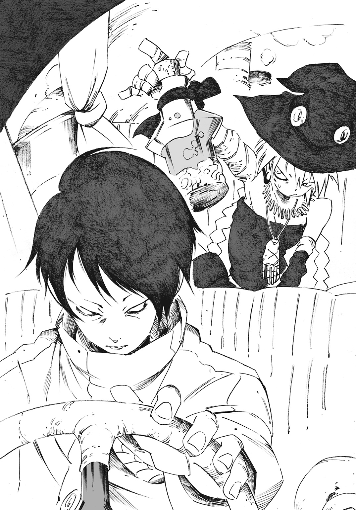
四度目の発声。
液体に声帯などあるはずもない。だからこの発声は空気を振動させ、対象の鼓膜を震わせているものではない。思念に加工した情報を相手の脳内に直接流し込んでいるのだ。
頭の中で響く艶やかな女の声を聞いて、ジャッカルは顔をしかめる。
「テレパシーまがいの真似をしやがって......。随分と面白い姿になってんのな」
ジャッカルは心底気味悪がりながらも、液体を青の魔女、ラプラスだと判断した。
「スゴイでしょう？ 私は自分の魂を抽出して液体化させることに成功したの。肉体を捨て、一つ上の生態へとシフトアップしたのよ」
「滑稽にもほどがある」
ジャッカルは瓶を運転席に座る男へと放る。男は難なくそれを受け取った。
「あ、ちょっと！ 丁寧に扱いなさい。割れたら大変じゃない」
「うるせぇ、液体が喋るな」
ジャッカルは溜め息を吐きながら、座席の柔らかなクッションに背を預ける。ラプラスの入った瓶は、男が助手席に備えつけられたベルトで固定する。
「五〇年前までは、ちゃんと肉と骨を持った人間だったろうが」
「魂魄の加工。貴方に私の研究は理解できないわ。私が貴方の研究を理解できないようにね」
「そりゃ......そうだがね」
ジャッカルが口をへの字に曲げて、自身の右腕を左手でさする。幾重にも巻かれた黄色の布が擦れ、ガサガサと乾いた音がした。
「ラプラス、お前が奇怪な格好になってるのは、もうどうでもいいや」
彼女は運転席に座る男の背中を見て、
「それで、この男は何だ？」
瓶の中、青い液体が自律的にチャプチャプと揺れる。
「彼の名はリーフォン。私の従僕よ。ほら、私はこのままじゃ動けないから」
「つまり、お前を抱えて動き回るための身体ってことか？」
「そうよ」
ジャッカルがまた溜め息を一つ吐く。
「はっ、たいした信頼関係だ」
「どうもありがとう」
チャプリ、とまた青い液体が揺れた。
「褒めてねーよ」
だがふと考えてしまう。ジャッカルとスチーマー、ラプラスとリーフォン。どちらが優れた関係なのだろうか、と。
ラプラス達は一蓮托生にも似た間柄だ。互いに互いを必要としている。どちらが欠けてもいけないのだ。だがジャッカル達は違う。そこまでの関係性が求められていない。必要としてもいない。
そもそも優劣などない話だ。気にしなくてもいいことだったが、ジャッカルは眉根を寄せた。微かに胸糞悪い思いを抱いてしまう。
「別にお前達のことなんかどうでもよかったな」
「貴方から言い出したんじゃない」
「うるせーよ。ところで、どうして私を呼んだんだ？」
「たいした理由なんてないわよ。広場でヘンテコな女が酒を飲んでるって聞いて、ひょっとしたらって思って会いに来ただけ」
ジャッカルは自身の服装を見つめて、露出した胸元に手を当てる。
「あの神父といい、お前といい......。そんなに目立つか？」
「十分に目立つわ。貴方は美人だし、もうちょっと自分の恰好に気をつけたらどうなの？」
「液体のお前に服装どうこうを言われたくねーな」
こればかりは反論せざるをえない、とジャッカルは小鼻を膨らませる。ラプラスは「まぁまぁ」と彼女を抑える。
「つまり目立ちすぎるのもどうかと思ったから、この車で時計塔まで連れていってあげようと思ったのよ」
ジャッカルは辟易とした表情を作り、
「おせっかいな性格は液体になっても治らなかったようだな」
「フフフッ、いいじゃないの。どうせ東の森にこもりすぎて、車を見るのも初めてなんでしょ？ せっかくだから乗り心地を堪能するのも悪くないんじゃないかしら。今日のために調達したのよ？」
そう言われ、ジャッカルは不思議そうに車の内壁をゴンゴンと叩く。
「確かに興味はある。これも蒸気機関ってやつなんだろ？」
「正確には蒸気機関の在り方の一つね。貴方、列車を使ったことある？ あれもそうなのだけれど」
「列車？ なんだそりゃ。私は馬車で来たんだよ」
ラプラスはクスリ、と笑う。
「列車を使えば、馬車よりもずっと速く長い距離を渡れるわ」
「むぅ」
ジャッカルは口惜しげに唸る。
「もったいないことをしたわね。だからせめて車くらいは乗らないとね？」
「......わかったよ」
ジャッカルは口を尖らせつつも応じる。未知の乗り物への好奇心には逆らい切れなかったらしい。今どこにいるかもわからないスチーマーが気になったが、彼には最初から時計塔に行くつもりだと伝えてある。それで十分だろう、と思考からかき消した。
ラプラスは満足げに相槌を打って、
「それじゃリーフォン、車を出してちょうだい」
黙したまま運転席で控えていたリーフォンは小さく頷くと、アクセルを踏みこんだ。
鉄箱が、加速する。
煤混じりの黒煙を吐き出しながら、石炭車は唸りをあげて疾走する。車窓の外では、大通りの風景が流れ始める。
「速いんだな」
ジャッカルが呟く。
歩けば道端の小石一つ一つに視線を注ぐことができるが、これほど速いと小石どころか人間の顔すら高速で流れ去っていく。当たり前のことではあったが、どこか寂寥の想いを抱いてしまう。
加速し続ける文明が、人並み以上に永く生きてきた魔女を置いてきぼりにしている。ジャッカルにとっては、そんなふうにも感じられた。
魔女は不老だ。
世界はあまりにも広すぎて、魔道は深すぎる。そして人の一生は短すぎる。魔術を永く探究するためには、人の身の寿命では足りない。だからこそ魔女は不死とはいかぬまでも、不老を得ようとする。液体となったラプラスの姿も不老を得ようとした結果の一つだ。
命尽き果てるか、あるいは殺されるか。並の魔女はそうして消えていき、残った存在は怪物と評された五人の魔女。
「大通りをこのまま走れば、すぐに時計塔に着くわ」
ラプラスは車とミョールの街並みを知っている。窓外の風景になんの感慨も抱かない様子の彼女に、ジャッカルが問う。
「なぁラプラス。慣れた様子だが、お前はここによく来るのか？ 自分の家が南にあるのに？」
ジャッカルが東端の樹海、夜干の森に根城を構えているように、ラプラスも国の南端に根城がある。
「貴方と違って引きこもり続けるのが趣味じゃないの。一カ月に一度はミョールに来るわ」
ジャッカルが苦笑する。
「五〇年ぶり......、私はタイムスリップした気分だよ」
「そうでしょうね。頻繁にこの綺麗な街並みを堪能できない貴方は可哀相」
ラプラスの言葉をジャッカルは小馬鹿にして笑った。
「ッハハハ、これが綺麗な街ねぇ」
「私の言っていること、何か違うのかしら？」
返すラプラスの言葉に険はなく、むしろ興味深げな様子を見せた。
「人里を離れていた私でもわかる。いや、私だからこそわかる」
「何がわかるのかしら？」
「『綺麗な街並み』なんてのは金メッキにすぎない。首都がいくら見目麗しくても、その中身はグズグズに腐ってやがるってことさ」
「......この街は最近、狂犬病予防のために野犬を一匹残らず駆除したらしいわ。そういうところは人間のエゴらしい強引さだとは思うけど」
「とぼけるなよ、そういうことじゃない」
ジャッカルは大通りの節々にある細道に視線を注ぐ。彼女は目を細め、
「大通りからでも、注意して見ていればよくわかる。少し裏手に回れば、薄汚いスラム街や奴隷市場にすぐ行きつけるってな。憎悪の匂いがプンプンしやがる」
「死肉を漁る獣。その名に違わずいい嗅覚をしてるじゃない。でもね」
ラプラスは楽しげな反応を返して続ける。
「私はその『金メッキ』、嫌いじゃないのよ？ 裏で腐っていようと、歪んでいようと綺麗なことには変わりがないもの」
ジャッカルは首を振る。
「ラプラス、お前の迂遠な物言いが昔から嫌いだ」
「あら、なにか可笑しなこと言ったかしら？」
ラプラスの口調はひどくわざとらしい。わざわざ指摘するのも煩わしそうに、ジャッカルは言う。
「お前は『金メッキ』が好きなわけじゃない。『金メッキ』の剝がれ落ちる瞬間が好きなだけだ。待っているだけなんだろう？ 憎悪と腐敗で世界が爛れ落ちる光景を」
例えるならば、熟した果物が腐り落ち、無数の蟲に這われ消える刹那を楽しむというもの。
「美しいとか汚いとか、どうでもいい。魔女が求めるべきは変化そのものなんだよ」
ジャッカルは嚙み締めるように、自らに言い聞かせるかのように言った。
「『変化を求める』という言葉には賛同しておきましょうか。私達にはそれしかできないもの。だからこそ何者にも捕らわれない自由者であるべき」
ラプラスは感嘆とした口調とともに液体の身体を強く揺らす。
魔女は神の教えに背く偏執的な求道者だ。魔道を走る異端は眠りを知らず、疲れを知らず、節度を知らない。だからこそ、ほんの一五〇年ほど前に現れた魔女達の多くが徹底的に迫害され、火炙りにされた。多くの愚者が灰になって散ってしまった。
車を運転していたリーフォンがハンドルを切る。右折すると、正面に時計塔が見える。これから〈五色の魔女〉が集う場所だ。
「黒の魔女が死んだ、ね」
ジャッカルの呟きに、ラプラスは身を震わせた。液体の身体に小さな波紋が見てとれる。
「なにか思い当たることでもあるかしら？」
「何も知らないさ。詳細についてはほとんど聞かされていないしな」
「私も、他の〈五色の魔女〉もそんなものでしょうね」
ジャッカルは突然、国から呼びつけられてミョールにやってきたのだ。
「でも本当に、何も知らないの？」
ラプラスの二度目の問い。それはどこか含んだような物言いで、
「知らないって言ってるだろ。野次馬根性丸出しでみっともねー」
ジャッカルは手を払って彼女を煙たがる。
ラプラスは魔女にしては珍しく、他者に興味を持つ魔女だ。興味といっても、好意によるものではなく歪んだもの。彼女にとって自分以外は観察対象であり、実験動物だ。魔女とて例外ではなく、ジャッカルの身辺調査程度なら当然のようにやっているのだろう。
「貴方は、黒の魔女の死が気にならないの？」
「そりゃあ、気になるからここまで来たんだろうが」
しかしジャッカルは今回の事件に意識を向けるより、今は別のことを考えていた。
「それにしては、上の空って感じよ？」
「そーか？」
泳がせていた金の瞳を正面に据える。
「そうよ。ボーイフレンドでもできたとか？」
「てんで的外れだ」
ジャッカルはそう返答しつつ、しかし一人の存在を思い浮かべている。異常な巨体を持ち、厳めしい鉄の装甲に身を包んだ怪物。スチーマーだ。一度は頭の中からかき消したはずの彼が、また思い浮かんできた。
今現在、彼女はスチーマーを放置してラプラスと時計塔に到着しようとしている。
「アイツ、本当に大丈夫かな」
スチーマーは常軌を逸した見た目とは裏腹に、精神がまだ幼い。だからこそジャッカルは彼に裏道や細道に入らないよう注意を促した。うっかり間違って、この街の醜悪なモノを見てしまわないようにするために。
「ッハ......少し過保護かもしれないな」
ジャッカルは自嘲気味に吐き捨てると、再び車窓の外を眺めた。高速で去りゆく風景を瞳に映し込む。思考の隅でチラつく残滓を振り払うかのように。
「んー、どうしよう」
スチーマーは鉄の箱を肩に担いだまま立ち尽くしていた。
ジャッカルに買ってこいと言われた酒の肴はまだ買えていない。酒を飲まない彼には何が肴として良いのかわからない。燻製の牛肉、塩漬けの鱈、胡瓜や玉ねぎのピクルス。どれを買うべきか迷い、右往左往して歩き回るうちにかなり遠くまで来てしまっていた。
彼は近くにある装飾の凝った噴水を眺める。噴水付近は人通りが多い。皆一様にしてスチーマーの奇怪な姿を見て驚くも、すぐに自分達の生活に戻っていく。
「そもそもボクは何も食べなくたって動けるし......、さっきの露店のミートパイとかがよかったのかな？」
どうしたものかと迷い続ける。
「おう、そこの大きい旦那」
呼びかけられ、スチーマーは振り向く。
「ボク？」
「そうそう。アンタ以外に誰がいるんだよ」
広場に立ち並ぶ無数の露店、そのうちの一つ。快活な声の主は屋台の店主だった。髭を蓄えた禿げ頭。肩幅が広く、力仕事の似合いそうな中年の男だ。
「買い物に迷っていると見た。俺んとこの商品はどうだい？ 安くするぜ？」
白い歯を見せ、気持ちよく笑っている店主。スチーマーは近づいて店の内装を理解した。屋台は赤、青、緑で鮮やかに彩られており、中央には棒に刺さった小さな林檎が数十本突き立っていた。
「なにこれ？」
「知らねぇのか？ 林檎飴だよ。俺のはそりゃもう美味いぞ！ 南部の酸味が強い林檎に、特製の水飴を使っているからな」
林檎の一つ一つには水飴が塗られており、てらてらと艶やかな光を反射していた。まさに宝石。紅玉の集まりを眺めて、スチーマーは一言。
「凄く綺麗だけど、オジさんには似合わないよね」
「かーッ、言ってくれるぜ！」
スチーマーの率直な感想に、店主は目を瞑って自身の禿げ頭を叩く。林檎飴を一本抜き出すと、スチーマーに掲げてみせる。
「そこまで言われたら引き下がれねぇ！ 禿げ親父の林檎飴は、そんじょそこらのモノとは違うってところを確かめてもらわねぇとなあ！」
スチーマーは林檎飴を見つめながら考える。彼自身に味覚はない。味の良さなどわからないし、飲食という概念もピンとこない。ただ、林檎飴を可愛らしく舐めるジャッカルが見てみたいと思った。
「酒を飲むより、飴を舐めてるほうがいいよね。うん」
スチーマーは独り呟いてから頷き、鋳潰した金の粒を差し出す。
「じゃあ一本ください」
店主は目を丸くして金粒を手に取る。
「なんだこりゃ？ そのまんまの金じゃねぇか！」
「そうらしいね」
スチーマーが吞気に言う。しかし店主の見立てでは、店の林檎飴を全て買っても余りあるほどの価値だった。
「もったいねぇな......ちょっと待ってろ。銀貨で釣りを返してやる」
店主は店内からありったけの銀貨を集め、それでようやく釣りとして足りると考えた。ほっとしながら、
「ほら釣りだ。まいどありっ！」
店主は威勢のいい声とともに林檎飴を油紙に包んで渡す。包まれていた林檎飴は二本で、
「あれ、これはどういう......」
「オマケだよ。持っていきな」
スチーマーは包みを大切に握って頭を下げる。
「あ、ありがとう」
「おう、気にすんな」
店主は胸を張って感謝に応じる。スチーマーはもう一度だけ店主に頭を下げてから、自分の来た道を振り返る。
「遅くなったなー。ジャッカルは怒ってるかな？」
来た道を戻るための一歩を踏み出そうとして、彼は視界の隅に映った小さな影を捉えた。
「あれは......」
八メートルほど先に、十歳程度の小さな男の子がいた。ボサボサに伸びた髪とボロ衣のような服を着ており、泥に汚れ、裸足で立っている。
少年は距離を取りつつも、スチーマーを一心に見つめている。スチーマーは麻布に包まれた異様な巨体だ。彼の珍しい姿が少年の目を引く理由なのだろう。
「どうしたんだい？」
スチーマーが何の気なしに少年に近づく。少年は二、三歩退くが、歩いてくるスチーマーに気圧され、止まってしまった。硬直した少年とスチーマーがしばらく見つめ合う。
「えっと......あ、なるほど」
スチーマーは一人で勝手に結論に辿りついた。少年の姿恰好を見れば、何も満足に買えないのだとわかる。つまり、
「この飴が欲しいんだね。一本余分にあるからあげるよ」
スチーマーは屈んで、林檎飴を一本差し出した。鉄の兜を被っている彼は表情を作ることができない。だからできる限り優しく、温かい口調を心がけた。
「美味しいらしいよ？」
少年は黙ったままだった。だが数秒を経てから、恐る恐る手を伸ばす。
「怖がる必要もないよ？」
最後にはスチーマーが無理矢理に林檎飴を持たせた。彼はまた少し考える。少年は見るに堪えないほどに貧相だ。せっかく使いもしない銀貨の山が手にあるのだから、これも渡してあげようと思い、
「――失せろっ！」
飛び込んできた林檎飴の屋台の店主が少年を怒鳴りつけた。少年は青ざめ、駆け足で路地の裏へと逃げていく。
「あー......」
スチーマーは残念そうに声を漏らし、少年の背を視線だけで追う。
「なにすんのさ」
店主に抗議の声をかける。
「そりゃあこっちのセリフだ！ 俺の林檎飴をあのガキが舐めているところを衛兵に見られたらどうするつもりだ。最悪、店じまいさせられちまう！」
店主は額に青筋を立ててスチーマーを睨む。
「ドブネズミどもにいらない物をやるんじゃねぇよ！」
「ドブネズミじゃないよ？ あの子は人間じゃないか」
店主は顔をしかめて、
「わかってねぇな......アンタは田舎の出なのか？」
「田舎というか、人のいない所から来たのは確かだけど。ボクが何か悪いことをしたの？」
店主は物わかりの悪い相手に諭すよう、ゆっくりと言葉を紡ぐ。
「じゃあ教えてやるよ。あのガキに触れると穢れるぞ」
スチーマーは屈んでいた身体をゆっくりと起こす。
「穢れるって......。呪いみたいな魔術要素は見つからなかったけど？」
「何をわけのわからないことを言ってやがる。あいつらは卑しい奴らだ。国からも『関わるな、施しを与えようものなら罰する』って言われてる」
店主は害獣を見るような目つきで、少年の消えていった路地を見つめる。
「それがロウスっていう穢れた連中どもだ」
――スチーマーは知らない。徹底的な階級社会であるヤルングレイプ国の在り方を。ロウスと呼ばれるこの国の構造の最底辺、薄闇に捨て置かれた人間の存在を。
ヤルングレイプ国の構造は王を頂点とし、上流階級である貴族の下に中流階級の一般市民がいる。この中流階級が最も厚い層だ。
近年の蒸気機関をはじめとする技術革新により、中流階級でも巨万の富を得た者が多くなった。農奴の出身であろうとも、金持ちは珍しくなくなってきている。
富の変化は権益の変化を促し、上流階級が独り占めにしていた富は、少しずつ中流階級に流れ出すようになった。富を得て余裕を持った市民は次第に増え、今まで王制を強いてきた王や貴族の在り方、政治に対して疑問や不満を持つ者が現れた。
憎しみの炎が燻り始めている。
国は全てが明確であるべきだ、市民も政治に関わるべきだと考え、自分の権利を増やそうとする人間が増えつつある。結果、市民のフラストレーションは加速度的に高まっていった。
そこで政治を行う上流階級は、ロウスと呼ばれる最底辺階級の身分を利用した。ロウスとは首都ミョールで路上生活を余儀なくされてきた人間達だ。汚水を啜り、腐った豆を齧る。文字を習うことはおろか、服装に気を遣う金さえない。
ロウスに与えられる仕事は、ミョールの地下を中心として行われている。どれも人には言えないものばかり。誰からも嫌がられ、卑しいと蔑まれる過酷な労働だ。
ヤルングレイプ国は、ロウスを卑しい人間だと憲章で示した。つまり、ロウスの迫害を国家が認めたのだ。目的は市民のガス抜き。中流階級である一般市民が見下せる相手を意図的に作り出したのだ。
効果は少なからずあった。ロウスは迫害の対象となり、一時的にではあるが一般市民の貴族に対する不満を逸らすことができた。
スチーマーの目の前にいる、一見快活そうな店主も平然とロウスを蔑んでいる。その事実が、彼の中で苛立ちの感情を膨れあがらせる。
「......オジサンは、それでいいと思ってるの？」
「いいもなにも――」
スチーマーは店主の返答を聞く前に動いた。鉄の箱を地面に置くと、店主の胸ぐらを摑んで、
「頭を冷やすといいよ」
大人一人、軽々と放り投げた。
店主は悲鳴をあげる暇もなく、放物線を描いて近場の噴水に突っ込んだ。飛沫があがり、周囲からどよめきが起こる。慌てて噴水から這い出てきた店主を尻目に、スチーマーは無言のまま立ち去った。
「いない」
スチーマーが呟く。
ジャッカルが座り込んで、酒を呷っていた木の下に到着。だが誰もいなかった。
当然といえば当然。既に経過した時間は一時間三〇分にもなる。身勝手で気まぐれな彼女の性格で待てるはずがない。
「うーん、どうしようかなー。確かジャッカルは時計塔に行くとかなんとか......」
スチーマーはふと傍らを見る。自身を覆い隠す布を引く存在に気づいたのだ。
「あれれ？ また子供」
今度は十三、十四歳程度の少女がいた。そんなに自分は子供の興味を引くのかと彼は戸惑う。
少女はロウスの少年ほど酷い格好をしていなかった。清潔で、ふわふわとした半袖の衣装。動きやすそうな短めのスカートは、そこらで歩いていそうな町娘の姿だ。
町娘風の少女は、燃えるような赤髪をツインテールにしていた。幼さが残る愛らしい顔がスチーマーを見上げる。スカートの下から覗く白い太もも。半袖から生えた細く綺麗な二の腕。それらは健康的で潑剌とした明るさを感じさせる。
少女はスチーマーを一心に見つめている。否、スチーマーの持つ最後の林檎飴を凝視しているのだ。彼はやや遅れてそれに気づく。
「どうしようかな。でも......勝手にどこかに行ったジャッカルも悪いよね」
一人頷くと、スチーマーは最後の林檎飴を差し出す。
「はい、どうぞ」
さっきの少年と違い、少女は躊躇わずに受け取ってくれた。飴をペロリと愛らしく舐める。赤い舌が蜜を絡め取り、その甘美な味に頰を緩める。
「ありがとう、大きいお兄ちゃん」
少女はようやく喋り、花のような笑顔をスチーマーに向ける。
「どういたしまして」
スチーマーはそう返すと、時計塔に向かうために歩き出した。
「ちょっと待って」
少女がスチーマーを呼び止める。彼は振り返り、再度少女を見下ろす。
「どうしたの？」
少女が妖しげな笑みを浮かべて、スチーマーを見上げる。まるで彼を値踏みしようとしているかのようでもある。
「えへへ、お礼をしようと思って」
言うなり、少女は林檎飴を口で咥えて、両手を手ぶらにする。そして勢いよく自分のスカートをめくりあげた。
「――」
刹那ともいえる時間、宙を舞ったスカート。スチーマーは捲れた布の奥を眺めてただ一言。
「なんではいていないの？」
「............」
少女はその反応に納得がいかず、スチーマーに詰め寄る。
「え、それだけ？ 喜んでよ。せっかく見せてあげたんだから」
「そう言われても、ちょっとボクにはよくわからないなぁ」
「えっ......」
少女は頰を膨らませ、涙目になる。
「なによ......それ、おかしいよ」
スチーマーは少女の様子に慌てる。
「え、いやどうしたの？ 何か悪かったら謝るよ。できる範囲でなら、なんでもしてあげるからさ」
少女は俯きかけた顔を持ち上げる。
「......本当？」
「本当だよ。ボクは誠実なんだ」
少なくともジャッカルよりは、という言葉までは言わなかった。
少女の表情に笑顔が戻る。
「じゃあ、街を一緒に回ってよ。あたし、初めて来たから何もわからないの」
スチーマーは困ったように頭をガシガシと搔く。
「んー、実はボクも初めてここに来たんだよね。街のことはほとんど知らないんだ」
少女は笑顔のままくるりと回ってみせる。ステップを踏み、軽やかに踊る。
「えへへ、二人とも同じだね。それじゃあ一緒に歩こうよ。そのほうが楽しいから」
「一緒、に？」
スチーマーは自らの失言に気づかされる。しかし今更、約束の撤回などできない。心の中でジャッカルに謝る。
「えーと......、じゃあお供させてもらおうかな」
「やったぁ！」
スチーマーは自らの胸に手を当てて、
「ボクはスチーマーっていうんだ」
少女は跳ねて喜ぶ。
「よろしくね、スチーマー。あたしはコロナっていうの」
スチーマーの巨きな手に、コロナの小さな手が添えられる。キラキラと輝く瞳が彼に向けられた。
「今日はきっと良い日になるよ！」
もしジャッカルがこの現場を見ていたら、頭を抱えていたことだろう。この町娘風の少女、コロナこそ〈五色の魔女〉の一人。赤の称号を持つ魔女なのだから。
第二章 不揮発性の五色は混じり合うことすらせず
森には、ボクとジャッカルしかいなかった。
歩く死人は数え切れないくらいに沢山いた。だけど話せないなら意味がない。意思がないならどうしようもない。動物も多くいたけれど、ボクを見かけると一目散に逃げていく。時々、生きた人間が現れたかと思うと、ジャッカルが殺してしまう。
だから、たった二人。
だけどジャッカルだけがいれば十分かな。話せて、意思があって、一緒に遊べるから。
ボク達は絵札でよく遊んだ。
王様、姫様、騎士、剣、杖、天使、貨幣。様々な絵柄からなるカードが、いつも食卓に散らばっている。
ポーカーだとかなんだとか、幾つも遊び方はある。だけど、まるで勝負にならない。
ボクが強すぎるとか、弱すぎるとか、そんな話じゃない。
ジャッカルがいつもズルをするからだ。
四〇枚であるはずのカードが、三九枚になっていたり、四一枚になっていたり。同じ絵柄が三つもあったり......。
「卑怯だよ」
毎回、ボクは抗議した。ジャッカルはケラケラと笑うばっかりで、まともに取り合ってくれない。
「勝ち負けなんかより、ズルをすることそのものが楽しいんだ」なんて言い出した。
彼女は正々堂々とした卑怯者だ。
ボクとしては楽しくない。なぜゲームでズルをしてはいけないのか？ それを毎日学んでいる気分になる。
だけど嬉しくもあった。ジャッカルは卑怯でふざけてばっかりだけど、いつも楽しそうだったから。
どうやらボクが造られるまで、ジャッカルはたった独りだったらしい。なるほど、それではカードもできない。
ひゅう。身体から蒸気が溜め息のように漏れる。
「次はちゃんとやってよ？」
いつもそう言って、ボクはカードをシャッフルする。
時計塔。ヤルングレイプ王の住む宮殿の隣に建つ巨大建築物。全長九〇メートル強、十一階層からなる塔の頂点からは、都市のありとあらゆるものを見下ろすことができる。歴史ある巨塔は荘厳極まる威光を都市市民に見せつけていた。
もうじき時計塔の針が真上の空を指し、正午となる。
その時計塔を見上げる人影が二つ。
一人目はジャッカル。彼女は近場に停車した石炭車を名残惜しそうに眺めながら、
「案外、早く着いたな。......もっと乗っていたかった」
二人目はリーフォン。彼が大事に抱えている瓶の中でラプラスが喋る。
「せっかく〈五色の魔女〉が揃うというのに、車のほうが大事なの？」
ジャッカルが顔を歪める。
「ろくでもない奴らが揃って、ろくでもないことが起きるだけだ」
ジャッカルは知っている。〈五色の魔女〉は決して仲よしグループなどではない。
彼女達は、それぞれが自身の魔術の研究にその身を捧げている。必要とあらば何でもするし、自分の領域が穢されると知れば手段を選ばず敵を抹殺する。
たった五人だけの魔女になっても抗争は頻繁に起こる。むしろ過激さを増し、彼女達同士の殺し合いなど日常茶飯事だ。だからこそ〈五色の魔女〉の中でも世話焼きで接触を多く求める青の魔女、ラプラスは相当に特異な存在と言えた。
ラプラスが嘆息混じりの声を出す。
「つれない子ねぇ。引きこもりが長すぎたんじゃないの？ 協調性って大事よ？」
ジャッカルは、うっとうしいとばかりに首を振る。
「キョーチョーセーだと？ 笑わせる」
人形のように黙って佇んでいたリーフォン。彼がラプラスにそっと呼びかける。
「ラプラス様、正午には時計塔に集合しなければいけません。そろそろ入ったほうがよろしいかと」
「そうね、行きましょうか」
ラプラスが応じ、時計塔へと進むリーフォン。ジャッカルも数歩遅れて歩み始めた。
本来、時計塔内部は一般市民の立ち入れる場所ではなく、入り口には兵士が門番として立っていた。
兵士はリーフォンとジャッカルを見てから、無言で通した。あらかじめ彼らの容姿は聞いているらしい。確認せずとも時計塔に入れるように、と上から命令があったのだろう。
「......何階まで登ればいいんだ？」
ジャッカルは螺旋状になった階段を見上げて嫌そうな表情を浮かべる。
「十階です」
リーフォンが言葉少なに答えて、黙々と足を進める。
「うへぇ......疲れそうだ」
ジャッカルは小さく舌打ち。こんな時にスチーマーがいれば肩車でもしてもらっていた。彼なら十秒とかからずに、楽々と上れたことだろう。
長い長い螺旋を彼らは上る。ジャッカルの歩調は一際鈍くなる。
時計塔の十階は時計の真裏に位置している。広いスペースを確保した部屋の天井では大小無数の歯車がひしめき合い、嚙み合う精緻な機構が、ガラガラと周期的なリズムを奏で続けていた。
部屋の中央には大きな円卓があった。席は全部で六つ。しかし席についている者は一人だけ。
「ふふーン、ふんふふン～んんんふふフ～」
陽気な鼻歌。
「るっるーるうぅゥ」
ヤルングレイプ北部に伝わる民謡だ。秋の収穫祭になると、打楽器と笛によって明くる日まで奏でられるのだ。
着席している者は、その扉を開ける存在に気づくと鼻歌を止める。
扉を開け、現れたのはリーフォンとラプラス、そしてジャッカルだ。
「遅イ遅イ。約束時間を三〇分も過ぎるなんテ」
北部特有の、やや訛りのある喋り。鼻歌の主は彼らを軽い調子で糾弾する。ジャッカルは〝彼女〟を胡乱な目で見る。
「なんだお前か......。こんな馬鹿みたいに長い階段を、そう易々と、上れるもの......か」
ジャッカルはゼェゼェと荒い息を吐くと、重たい足取りで円卓の席に着く。机に突っ伏してしまい、動かなくなった。
汗一つかいていないリーフォンは、鼻歌の主に軽く一礼。
「お早いお着きですね、白の魔女、エーメット様」
エーメットは、サラサラと絹のような白髪を腰まで垂らした美しい女性だ。大きな純白のコートを羽織り、コートの隙間からは雪のように白い首筋と胸元が覗く。彼女は豊かな胸の前で手を組んで、背もたれに細い身を預けていた。
彼女は異常なまでに美しく、艶やかで、異質だった。琥珀色の瞳は澄んだ宝石そのもの。氷よりも冷たい光を放ち、彼らを見据える。
「そりゃア、こんな珍しい機会はそうそうないからネ」
エーメットの席の前には、血のような葡萄酒がグラスに注がれている。彼女は細い手指で愉しげにグラスを揺らす。
「久しぶりね、エーメット。最後に見たのは三〇年前だったかしら。あの時と何一つ変わらない姿でなにより」
リーフォンの持つ液体から発される言葉に、エーメットはしばらく無言になる。それから盛大に噴き出した。
「キャッハハハハハハ！ なんダ？ その姿ハ？ いやいや答えるナ。形は変わっているが生きているようでなによリ！」
「はぁ、失礼ね」
「今更失礼も何もないだろウ」
エーメットは薄赤い唇に葡萄酒を注ぐと、口を三日月状に歪める。
「何度も何度も殺し合った仲じゃないカ。最後は三〇年前だったカ？ いやはや酷い戦いだっタ」
「あれは貴方が私のところにスパイを放り込んだからでしょう？」
「お前だってスパイを送り込んでいたくせニ。何かいい情報でも手に入れられたカ？」
「北の大鉱脈で奇妙な鉱物を掘っているらしい、ってことくらいしかわからなかったわ。ついでに炭鉱地帯で儲けているとも、ね」
エーメットは豊満な胸を張って言う。
「私が北に構えている領地付近ノ、あの大鉱脈があるからこソ、この都市も潤っているんだがナ？ 運搬の経路も補助しテ、鉄道事業にも貢献してやっていル」
「可哀相、鉄道関係者は生意気な真っ白女に頭が上がらないでしょうね」
出会って早々に言い合いを始めた二人に、ジャッカルはうんざりしていた。
「まだ全員揃っていないうちからこれだ......」
「もう〈五色〉全員が揃うことはないがな」
低く、野太い男の声が部屋に響く。
言い合っていたエーメットとラプラスが声を止め、ジャッカルが口端を上げた。
「この国のボス猿のおでましか」
黒い軍服を着た男が戸の前に立っていた。彼の背後には数名の兵士が護衛として控えている。
「出会って早々、ひどい物言いだな」
岩の如く険しい表情に、深いシワを刻んだ初老の男だ。胸は金銀様々な勲章を飾り立てており、小さな光を幾つも反射する。後ろにまとめられた髪は白髪まじりのブロンド。しかし肉体は鍛えられており、膨らんだ筋肉を纏っている。背筋が正しく、威風堂々とした有様には、まだ若々しさと荒々しさが残っていた。
男は帯刀した剣を鳴らして歩いてくる。
エーメットは立ち上がると、うやうやしく頭を下げる。真摯さの欠片もない態度だ。
「これハこれハ、セザール様じゃあないですカ。胸に付いている星も少しばかり増えたようデ？」
デルフィニウム・セザール。ヤルングレイプ国王補佐にして宰相。僅か四〇歳にして宰相となった軍人上がりの男だ。軍将校時代に弱小国だったヤルングレイプ国の領土を拡大し、強国と呼ばれるまで仕立てあげた英雄でもある。
宰相となった今、セザールは軍事派閥を完全に掌握しており、政治面でも彼に意見できる者はいない。ただし、たった五人の魔女を除いて、だ。
宰相セザールは心底嫌そうな表情を浮かべる。
「魔女に頭を下げられては安眠もままならん。やめろ」
エーメットは意地悪く笑うと、席に座って葡萄酒を呷る。
「鉄血の宰相サマにしては実に謙虚ダ。国民の安全は私達のおかげだろウ？ 誰のおかげで横暴な軍事国家を維持できていると思ってル」
先代国王が魔女達に国家防衛を任せて五〇年経った。苦い歴史にセザールは眉根を寄せ、額に手を当てる。
「魔術とやらで敵国を一切寄せつけないのは感謝しているが、それ相応の謝礼も出しているはずだ」
ヤルングレイプ国にとって〈五色の魔女〉は決して欠かせない要素である。しかし〈五色の魔女〉の存在を知っている者は、貴族の中でも限られた一部の人間だけだ。
北、東、南、にある三つの隣国に囲まれたヤルングレイプ国。現在、この国は常に緊張状態にあると言っても過言ではない。そこでヤルングレイプ国は隣国に侵入されかねない国境の要所、全五カ所のそれぞれを〈五色の魔女〉に守らせた。
北の果てを白の魔女。
東の果てを黄の魔女。
東南の果てを赤の魔女。
南の果てを青の魔女。
西の果てを黒の魔女。
それぞれの魔女が〈窯〉と呼ばれる領地を構えた。
市民が穏やかに生産活動に興じていられるのは、彼女達の力のおかげだ。しかし、彼女らは他国からの侵入を防ぐことによる報奨として、莫大な資金と物資の提供を受けているのだ。事実、軍事費の三分の一が〈五色の魔女〉に流れている。
セザールは疲れの滲んだ表情で切り出した。
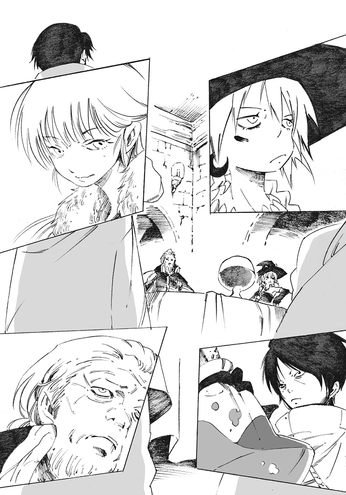
「西の果てに、〈窯〉を構えていた黒の魔女が死んだ。我が国は欠けてしまった防衛地点を直ちに修復しなければならない」
魔女達は使者による通達で知ってはいたが、国のトップクラスの人間から直接伝えられると現実味が増す。
「わざわざ私達を集めて、何を言い出すかと思えば」
ジャッカルはポケットをごそごそと探り、クシャクシャに丸めた紙を取り出す。擦り切れて端々が破けた紙だ。囚人であるアドルフが持ってきた書面に違いなく、彼女はセザールに向けて放り投げる。
「貴様、仮にも国王陛下の印が押されたものだぞ。こんな扱いがあるか」
セザールが批難の視線をジャッカルに送る。だが彼女はそよ風のごとく受け流す。
「その王様の手紙を囚人に持たせる奴もどうかしてるとは思うがね」
「稀代の死霊術師を相手に、大切な部下をそうそう遣わせられるものか。囚人風情ならば死体にされて歩かせられたところでたいしたことはない。......答えがわかっていて尋ねるが、あの囚人はどうした？」
「殺した。今頃は森の肥料さ」
「ふむ、それは結構」
「ハッ、とりあえず座れよ。まずはそこからだろ？」
ジャッカルが円卓を指で叩く。
円卓はその場にいる者が同格であると示し、忌憚なく意見を述べるためにセザールが用意したものだ。だが彼は決して平等主義の人間ではない。ロウスの迫害を認め推進する憲章を通した人間であり、徹底的な差別主義者だ。そんな彼であろうと、〈五色の魔女〉には多少の敬意を払わざるをえなかった。
セザールは席に着くと問う。
「兵士に何か飲み物でも用意させよう」
真っ先にエーメットが応じる。
「じゃア、葡萄酒をあと二本。五〇年以上の年代モノじゃないと駄目だからナ？ うんと酸味の強いやつが良イ」
続いてジャッカルは、手に持っているサソリ入りのブランデーを掲げる。
「私はこれがあるから、いらない」
「相変わらズ、趣味が悪いもんを飲んでるんだナ」
ジャッカルは茶化してくるエーメットを無視。ブランデーを口に注ぐ。
セザールはラプラスを眺めて、しばし黙考。
「液体の身体になったとは聞いていたが......何か飲み物はいるのか？」
「飲めると思ってるの？」
「......」
言葉を失ったセザールは、ラプラスを抱えるリーフォンを見やる。
「そこの若造、リーフォンといったか。この国にあるものならば何でも用意させよう。何がいい？」
リーフォンは静かに首を振る。
「遠慮させていただきます」
リーフォンの返答の根底にあるのは警戒だった。セザールは鼻を鳴らす。
「ふん、毒など混ぜはしない。それでどうにかなる連中ではないからな。だが油断のない姿勢は結構なことだ。青の魔女は優秀な狗を手に入れたらしい」
彼は控えていた兵士に葡萄酒を持ってくるよう命じると、円卓に並ぶ魔女達を眺める。
「改めて言っておこうか、私が私であるということを証明するために――」
言うと、セザールは右腕の袖を肘あたりまで捲る。彼の腕には幾何学的な模様の刺青が彫られていた。
「国王補佐、宰相のデルフィニウム・セザールだ」
ジャッカルはそれを見て目を丸くする。
「あ？ なんだそれ」
ラプラスはそんなジャッカルに溜め息一つ。
「はぁ、森から何十年も出てこないから、世間の流行に疎くなるのよ。あれは聖痕っていうのよ」
「聖痕......？ たいそうな名前だな」
「二〇年前に施行された法律で、ヤルングレイプに住む全ての人間は、あんな感じの刺青を彫らなきゃいけないの」
ジャッカルが首を傾げる。
「わからねーな。私達が魔術的な効果を求めて刺青を使うならまだしも、なんでこいつらが刺青をするんだよ。ファッションですらなく、強制なんだろう？」
その問いにはエーメットが答えた。
「刺青を彫れば神からの恩恵が与えらレ、天国に行けるとかなんとか教会に言わせているらしイ。清き信心を利用しているのサ。アレは国民の身分と血筋を確かめるための戸籍ってところだヨ」
エーメットは唇を吊り上げる。
「聖痕と呼ばれる刺青ハ、生まれ落ちた赤ん坊にもすぐ彫らせるよう義務づけられていル。大抵は他人に示しやすいよう自分の腕に彫リ、いつどこでも使える身分証明書としていル。間違っていないナ？ 宰相閣下サマ？」
「間違ってはいない」
エーメットの視線の先、聖痕を義務づけた者はセザールに他ならない。
「へーぇ、なるほど、なるほど。知らなかった......しかしこれは」
ジャッカルは腹の底からこみあげてきたソレに耐え切れず、
「ッハハハハハハハハハ！」
大笑した。
「何が可笑しい」
不愉快を露にするセザールに、しかしジャッカルは笑うのを止めない。
「だって考えてもみろよ。これじゃあまるで、ッハハハハハハ」
腹を抱えて、彼女は言葉をなんとか絞り出す。
「これじゃあ、まるで家畜に付ける焼き印と同じじゃないか」
ジャッカルの笑いにつられて、ラプラスとエーメットも笑い出す。ただ一人、セザールだけがムスッとして黙っている。
血を示し、家を示し、名を示す聖痕。しかしそれは強者が弱者を判別するための社会的な首輪でしかない。金持ちは金持ちに。貧乏人は貧乏人に。聖痕は差別意識の強いヤルングレイプ国らしい機能と言えた。
セザールは苛立ちを露にして、
「社会的規範のためだ。国を強くするためには規範が必要となる」
ラプラスは失笑を隠さない口調で、
「仕事熱心ねぇ、確かに貴方は忙しそう」
「知ったふうな口を聞くのだな？」
「それはそうよ。私はちゃんと貴方も見ているの。地方の炭鉱や、都市郊外にある工場も頑張っているみたいだし。子供から老人まで労働力をかき集めて随分酷い真似をしている、って話はよく聞くわ」
「問題があるのか？ 仕事は必要だろう」
「腐ったパンと汚水が報酬なのに？」
「そうだ」
エーメットがグラスの縁を舐めながら、
「コレラが流行っテ、干物みたいな人間を量産しているのニ？」
「無論。善き生が欲しければ、私のように勝ち続けることだ」
「ッハハ、お前も老いたなぁ、セザール。ハハハ」
まだ笑い続けていたジャッカルが口を挟む。
「お前は、暴力と権力に長けているだけだ。能力が時代に適合し、偶然にも成果をあげたにすぎない」
「私の今までを〝偶然〟で片づけるか」
セザールは額に青筋を浮かべるが、ジャッカルは気にしない。
「当然だ。そして自覚するがいい。自らは幾千万の屍の山の上に佇んでいるのだと。ブニブニとした死肉が足裏を押し返す感触を味わうんだ」
セザールは冷静になろうとして頭を振る。
「ふん......話すだけ無駄だ。聖痕、労働、規範。どれも貴様らには必要のないものだったな」
セザールとしては危険すぎる魔女達にも首輪をはめてやりたいところだが、その強大さ故に望みは叶わない。
エーメットがうんうんと頷く。
「縛られる魔女は魔女とは言えなイ。国家と魔女。お互いに不干渉だからこそ成り立つ〈五色の魔女〉ダ」
セザールは溜め息一つ。室内を見回し、
「ところで、一つ聞いていいだろうか」
「なにかしら」
ラプラスが応じる。
「なぜ、赤の魔女がおらんのだ」
言われ、三人の魔女はお互いの顔を見合わせる。返される言葉は重なった。
「「「そんなの知るわけない」」」
スチーマーとコロナは、ミョールの中央市場に立ち寄っていた。様々な露店が立ち並び、国中で最も騒がしい場所だ。
コロナは珍しいモノを見かけると跳ねて喜ぶ。愛らしい小動物のようだった。
「あれ見てよ、ヘンな人形がある！」
市場の一角に人形屋があり、大小様々な人形が棚に並んでいる。コロナは人形のうちの一つを指差した。スチーマーが人形を手に取ってみる。木製の人形は、腹部が切り口となっており、上下二つに分離できる。人形の体内には同じ形状をした、少し小さな人形が収まっている。その人形の腹も開けることができ、中には更に小さい人形が入っている。人形の中に人形が、といったカラクリが繰り返されている。
「確か......マトリョス人形だ。東の隣国にある人形だよ。貿易は少ないと聞いているけど、流れ着くもんだね」
しかしスチーマーが話している間に、コロナの姿は消えていた。少女は二件隣の店を覗いていて、
「ねぇ、こっちの店に行ってみようよ。『おるごーる』って玩具があるみたい」
コロナは忙しなく、興味の方向が次から次へと移り変わっていく。気づけば彼らは市場を一通り回っており、最後には新築されて間もない駅に辿りついていた。レンガ造りの赤い駅舎が彼らを迎え入れる。
「ここは何かな？」
「スチーマーってば何も知らないんだね！ 今一番速い乗り物があるんだよ！」
蒸気機関車を知らないスチーマーにとっては、駅が何のための場所かもわからない。
「見せてあげるからおいでよ！」
コロナは薄い胸を張って鼻高々に言うと、もたつくスチーマーの手を引いた。
彼らは、駅員を含めて様々な人に奇異の目で見られている。恐らくはスチーマーの姿恰好のせいだろう。だがコロナは周囲の視線などどこ吹く風。すぐに駅のホームへと辿りついた。
蒸気機関車。彼らが見たソレは長大な鉄の塊だった。見る者を圧倒し、陸を踏破する鉄の箱。四つの車両が連なり、鮮やかな朱色の塗装が施されている。
列車は発車寸前。機関部を十分に可動させ、石炭を燃やし、黒く煤けた煙を噴き出す。走り出す時を今か今かと待ち構え、低く唸っているかのようだった。
「これが動くなんて、信じられない」
スチーマーが感嘆の思いを漏らし、コロナも楽しげに頷く。
「あ、動くよ！」
コロナが声をあげ、スチーマーは黙ったまま列車を見つめる。
大気を震わせる汽笛とともに列車がゆっくりと前進する。
――ガタンゴトン、ガタンゴトン。
重たく鈍いリズムは徐々に速く、軽快なものへと変わる。
「おおー」
列車が加速を得て、走り出したと思った頃には線路の彼方だった。
「もう一つ来るよ！」
コロナが言う。朱色の列車が走り去ると同時に、駅の奥から来た別の列車が停車したのだ。その列車は先程の列車とは毛色が違う。
剝き出しの運転車両が引っ張る五つの車両。塗装や装飾がほとんどなく、無骨な六つの車両からなる長い列車だ。人が乗るためのものではない。それぞれの車両には石くれのようなものが山高く積まれており、作業服を着た人間が停車した車両に乗った貨物を忙しなく降ろしている。
「なるほど、あれは資材を運びこむための貨物列車かな。きっと北の鉱山地帯からかき集めた鉱物を積んでいるんだろうね」
のんびり見ていると、駅長らしき男が慌てた様子で貨物列車に駆け寄る。駅長が怒号し、運転手は眉を下げたまま対応している。どうやら予定にない列車だったようで、スケジューリングを狂わせているらしい。
列車という公共の移動手段が生まれてからまだ間もない。スケジュールの乱れは日常茶飯事らしく、駅内を歩く市民は気にも留めない。
スチーマーは特に意味もなく最後まで見ていようかと思ったが、コロナに手を引かれて駅の外に連れていかれる。
「列車見たんだから、もういいでしょ。あたし、お腹空いたの」
「まぁ......いいけど。何食べるの？」
「なんか美味しそうなの」
コロナはひどく抽象的な物言いで、気の赴くままに歩いていく。
どこまでも身勝手な少女だが、ジャッカルとともに行動する彼にとっては慣れっこだ。はいはい、と言いながらついて歩く。
ありふれた喫茶店の前で止まる。
「ここにしようよ」
言うなり、コロナはズカズカと店内に入っていく。スチーマーは戸を潜り抜けるようにして、なんとか入る。
「スチーマー！ 早くっ」
「はいはい」
店内のテーブル席に着いた二人は互いに顔を見合わせる。かといってスチーマーには見合わせるための顔はなく、鉄の兜だ。
「ねぇスチーマー、その頭のヤツ外したら？」
コロナの指摘にスチーマーは首を振る。
「これでいいんだ。ボクは何も食べないし。悪いけどね」
少女は頰を膨らませた。
「なにそれ、つまんない」
「まぁまぁ、ボクの分をコロナちゃんが食べるといいよ。ほら、奢ってあげるからさ」
スチーマーが銀貨の大量に詰まった袋を取り出す。途端、少女は眩しい笑顔に戻る。
「それなら仕方がないね！」
マスターに紅茶と茶菓子を頼むと、スチーマーはふと周囲の客達を眺めた。喫茶店は一般市民向けに作られており、正午の休憩を楽しむ市民で賑わっていた。スチーマーはそれから視線をテーブルの前、コロナへと向ける。
「あれ、ま」
ほんの数秒の間に、コロナはテーブルに突っ伏して寝てしまっていた。小さな鼻息を立てて、長い睫毛を下ろしている。火がついたように、はしゃいでいたかと思うと、あっという間に寝静まる。長い睫毛が下りた表情は本当に可愛らしい少女だった。
スチーマーは運ばれてきた紅茶と茶菓子を受け取ると、コロナを起こさないよう静かに振る舞う。彼は飲むわけでもないカップを手に取って、注がれた紅茶を揺らした。
まるで、人間の真似事をするかのように。
首都ミョールの時計塔には、赤の魔女がいつまで経っても現れない。
痺れを切らしたジャッカルが最初の口火を切った。
「チッ、待っていてもしょうがないだろ。あのクソガキを待つよりも話を始めよう」
エーメットが空のグラスをボトルにぶつける。高い音が響き、
「書面では『黒の魔女が死んだ』ってだけしか書いていなイ。あの女がどう死んだのカ、是非とも聞きたいものダ」
ラプラスがエーメットに同調する。
「そうそう、『死んだ』じゃなくて『殺された』だったりしたら一大事だもの」
「......死体の状況から話そうか」
セザールとしても、もはや来るかもわからない赤の魔女に嫌気が差したのだろう。厳粛な面持ちのまま応じる。
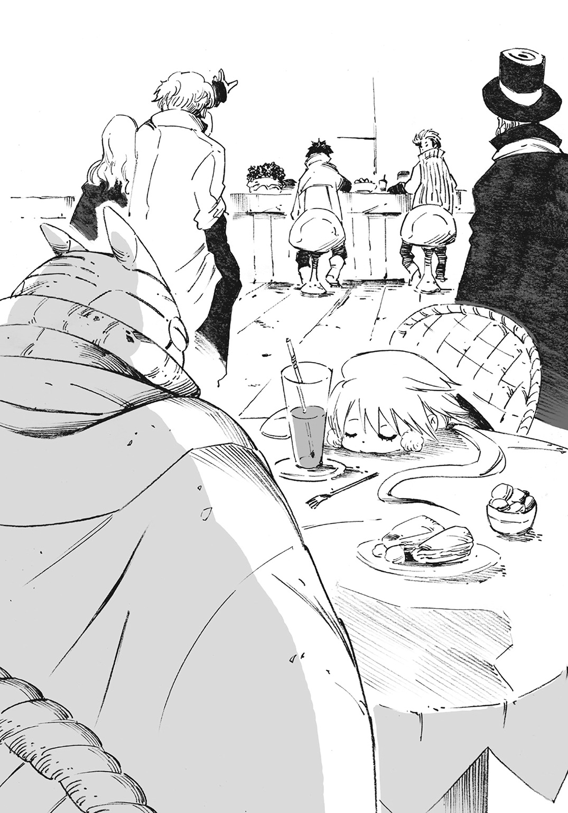
「西の果て、〈暗黒海峡〉に奴の住む木小屋がある。一カ月前、資金提供のために送りつけた兵士が小屋が焼け落ちているのを見つけた。黒の魔女と連絡は取れず、焼け落ちた木小屋の下には一人分の焼死体があった。身長、体型、性別、骨格、歯型......あらゆる点で検証させ、それが黒の魔女に違いないと我々は結論を出した」
「焼死体、カ。随分と物騒な話だネ？」
エーメットが含むように笑って、ジャッカルに問う。
「どウ？ ジャッカル。死霊術師のあんたなら死体を調べたリ......蘇らせたりできるんじゃないノ？」
ジャッカルが〈窯〉を構えて研究に耽っている魔術は死霊術。死体を地面の下から引きずり出し、地上を這わせる行為。
即ち、死を操る力だ。
彼女の住む夜干の森は隣国と接している緊張地帯。
森にはありとあらゆる生物が集まり、生が豊富であると同時に死が豊富でもある。森に侵入し、攻めてくる敵もあとを絶たない。彼女は敵を滅ぼすことによって、研究に必要な死体をも大量に手に入れられる。
だからジャッカルは自負している。自分ほど死と接している存在はこの国にはいない、と。それほどの彼女が首を振ることで否定を示す。
「焼死体は解析が厄介な上に、時間経過も含めると厳しいな。どうせお前らはまともな死体の保管すらできていないんだろ？」
セザールが静かに頷いた。
「あと、私は死体を蘇らせられるわけじゃない」
ジャッカルは次にエーメットへと人差し指を向ける。彼女の問いの内容に不満があったのか口を尖らせ、
「死霊術を施した死体に生前の自我は宿らないからな。私は死を生に還すんじゃない。死を死のままの状態で動せるだけだ」
ジャッカルは立ちあがり、エーメットに詰め寄りかねない様子。自分の力が誤解されている、と怒っているのだ。
エーメットは両掌を胸の前で広げて謝る。
「そう熱くなるなヨ。悪かっタ悪かっタ」
ジャッカルが小さく唸ると、手元にあったブランデーを一気に嚥下。飲み干した。
「黒の魔女は自分以外の〈五色の魔女〉の魔術だって、こそこそと調べていやがった。そんな薄気味悪い奴を調べるのは抵抗があるな。魔術的なトラップが仕掛けられていたら面倒だ」
ゴホン、とセザールが軽く咳払いする。
「別に、黒の魔女を蘇らせろなどと言いたいわけではない。貴様ら同様にあの女も相当厄介な女だったことには変わりない。目の上のたんこぶが消えた気分ですらある」
セザールの言葉に魔女達は特に意見しない。数少ない魔女の一人が死んだからといって、彼女達は追悼するつもりはないらしい。彼女達はどこまでも自分しか見ていないのだ。セザールはそれを知っていて、続ける。ヤルングレイプ国宰相としての言葉だ。
「西の海を守っていた魔女が死んだ。我が国の要所の一つが手薄になったということでもある。なんとしてもこれは避けたい」
ラプラスが間を置かずに尋ねる。
「つまり私達に西の果て、暗黒海峡を守れということかしら？」
「そうだ」
セザールの即答に、ジャッカルが天井に向けて息を吐く。
「はっ、お前達の兵を西に配置すればいいだけじゃねぇか」
セザールは粛々とした面持ちで否定する。
「それができればお前達を呼んでなどいない。黒の魔女が亡き今も、あそこは魔女の領域だ。ただの人間が易々と立ち入れる場所ではない」
「わかってねぇわかってねぇ」
ジャッカルがセザールに向けて人差し指を振る。
「それは私達でも同じなんだよ。他の魔女の構えた〈窯〉に、そう易々と私達が〈窯〉を構えられるわけがない。むしろ危険ですらある。土地そのものが他の魔術を拒むように細工されているはずだ」
魔女にとって〈窯〉は何物にも代えがたい領地であり、研究の全てが詰まった重要拠点だ。だからこそ魔女にとって、他の魔女の〈窯〉は得体の知れない爆弾だ。魔女の力が大きくなればなるほど、爆弾は醜悪で凶悪で最悪なものになる。
セザールは押し黙る。
「それは案外わからないゾ？」
異を唱える者がいた。エーメットだ。
「あぁ？」
ジャッカルがエーメットを睨むと、彼女は三本目の葡萄酒を開けようとしていた。
「お前、もうデキあがっちまったのか？ 酔っ払いは寝てな」
「ジャッカル、お前だって四六時中、気色の悪い酒を飲んでるじゃあないカ」
ジャッカルの攻撃的な視線を受けて、それでもエーメットは動じない。
「ようはこの話、ヤルングレイプ国の宰相サマでも手に負えなイ、西の果ての〈窯〉。つまり、黒の魔女の遺産を誰が受け継ぐかって話だろウ？」
「お前に、それができると？」
「不可能ではなイ、と思うけどネ」
エーメットの挑発的な物言いに、ジャッカルの視線が一層強くなる。
「お前、傲慢が過ぎるんじゃないか？」
言って、彼女は二本目のブランデーを取り出す。ちゃぷちゃぷ、とサソリが瓶の中で揺れる。
「〈五色の魔女〉の〈窯〉ともなれば迂闊に近づけず、下手に触れられない。この国そのものを消し飛ばすかもしれないんだぞ？」
「うんうん。ジャッカル、お前の言っていることは何一つ間違っちゃいなイ」
グラスに葡萄酒を注ぐのが面倒臭くなったのか、エーメットはボトルを直接口につけて、勢いよく飲み始める。彼女の白い喉を血のように赤い液体が通っていく。
だが、と彼女は言葉を続けた。
「それほどの〈窯〉。御してみたいと思うのが魔女というものダ。私を傲慢と言ったナ、お前こそ魔女として耄碌しているんじゃないカ？」
ジャッカルが席を立つ。金の瞳には殺気すら滲ませており、
「よく解らなかったんなら、もっと具体的に言ってやる」
ジャッカルが黄色の布が巻かれた右腕を振る。五指を開いて骨を鳴らしながら、
「お前が馬鹿みたいなリスクを背負うせいで、私にも火の粉が降りかかる。......あんまりふざけたこと言ってると、ブチ殺すぞ？」
「へェ」
エーメットがのんびりと立ち上がる。フワリと白髪が舞い、白蠟の貌が笑う。
黄と白が対峙した。
空間がキリキリと軋みをあげる。将校として幾多もの戦場を生き延びた壮年の英雄、セザールですら冷や汗を額に滲ませた。
ジャッカルとエーメット。互いに距離を詰めるための一歩を踏み出そうとして、
「失礼」
短い言葉とともに炸裂音が響いた。
ジャッカルとエーメットが反射的に飛び退く。
突然の音は、ラプラスの下僕であるリーフォンによるものだった。
彼は拳を固く握り締めて立っている。そして彼らが先程まで席をともにしていた円卓は砕け散っていた。細かい木々の破片が周囲に飛び散り、円卓の断末魔が聞こえそうですらある。
数百年もの長い時間をかけて育った大樹。それを用いて造られた堅牢な円卓を彼は拳一つで粉砕したのだ。
リーフォンは相変わらずの無表情で、瓶を前方に掲げる。瓶内で青の液体が揺れる。
「フフフ、ごめんなさいね。こうでもしないと聞いてくれなさそうだったし。えっとね、結果を出してしまうには、まだ早いと思うの。まだ赤の魔女、コロナちゃんも来てないじゃない」
「来るかもわからん奴を待ってどうするってんだ」
ジャッカルは興味ないとばかりに吐き捨てる。
「どうもしないわよ。ただ貴方達は結論を急ぎすぎて、過程を見てないの。黒の魔女の死がどうでもいいからって、あまりに酷いんじゃないかしら。もっと気にしてあげないと可哀相よ？」
「お前は何が言いたい。いつも思うが、その回りくどい言い方を直せ」
ジャッカルは胡乱な目で問う。質問を投げかけていながら、しかし答えては欲しくはない様子だった。ラプラスのことだから面倒なことを言い出すに決まっている、と。
ラプラスは彼女の想いを知っていながら、しかし楽しげに言う。
「私はこんなケンカを始めるよりも気になることがあるの。宰相さん、いいかしら？」
呆然としていたセザールが我を取り戻す。
「あ、ああ。なんだ？」
「黒の魔女の死因が焼死。怖いわ、まともな死に方じゃない。他殺と考える余地は十分過ぎるくらいにあるんじゃない？ ひょっとして、私もその誰かに殺されるかと思うと怖くて怖くて......」
青い液体が奇妙にくねって踊る。白々しいことこの上ない。
「犯人に心当たりはあるかしら？ 自分の胸に手を当ててみてもいいわよ？」
セザールは額の冷や汗を拭って、
「私が黒の魔女を殺したとでも言うのか？ それこそありえない。なぜ、国の要所を潰して我が国を危機に陥れなければいかんのだ」
「それじゃあ、心当たりはないの？」
セザールは顎に手を当てて考え込む。黙考すること数秒。
「ない、といえば噓になる。黒の魔女を殺して得をする連中ならば知っている」
「それは誰？」
セザールは壊れた円卓に目を落とす。
「最近、我が国の在り方に文句を言う輩が多くてな。組織だって行動を始めている連中もいる。〈赤布〉という組織だ」
ヤルングレイプ国は要所を守らせるために〈五色の魔女〉という防衛基盤を手に入れた。だが国外の問題に目を向けすぎて、国内の問題を疎かにしていた。貧富の差が拡大しているのだ。特に一般市民の層に強い格差傾向がある。事実、ロウスのような家を持たない層は増え続けてもいる。
報われない人間達が集い、ヤルングレイプ国に対して不満を訴えている。彼らが反乱分子として行動に出るのも時間の問題だろう、と貴族の間でも噂されている。
そんな世情の中、ヤルングレイプ国が過激派と見なしている組織の筆頭が〈赤布〉だ。自身を血で赤く染めてでも国に抵抗する、という決意を込めて、彼らは赤い布を掲げている。〈赤布〉の名の由来もそこにある。
「なるほど、頭足らずな方法だガ、奴らが黒の魔女を殺す理由はあル。防衛の要である〈五色の魔女〉の一角を潰せバ、国家上層部を混乱させることは容易だからネ」
エーメットが納得したように頷く。国家の事情などに縛られない〈五色の魔女〉だからこそ興味がなく、知りえなかった話だ。
セザールは頷きつつ、
「だが、推測の域を出ない」
そこでエーメットはジャッカルへと向かう。彼女の視線は静かな熱を帯びており、
「なに、簡単サ。〈赤布〉とやらに直接聞けばいイ。やれるだロ？」
ジャッカルは苦い顔をした。
「どうでもいい力だけは覚えていやがって」
「初めて見た時、いつかは役立つだろうと頭の隅に残しておいたんダ」
「まぁいいさ。〈赤布〉を見つける。それだけなら容易い」
ジャッカルは空になったブランデーのボトルを床に向けて投げつける。ボトルは当然のごとく粉々に割れた。彼女はガラスの破片を踏み潰しながら、屈みこむ。
彼女は先程までブランデーの中に入っていたサソリを見つめる。食用のために毒針を抜かれた死骸だ。ただしアルコール漬けのサソリは保存状態という意味では非常に良好だ。
ジャッカルが黄色の布で巻かれた右手を伸ばし、指先をサソリに近づける。魔女達は黙したままだ。ただ一人、セザールだけがその意味を摑めていない。
「一体、何をしようというのだ」
ラプラスが楽しそうに補足する。
「見るのは初めてかしら？ 黄の魔女にして稀代の死霊術師たるジャッカルの魔術、〈屍王の指先〉よ」
魔女とは魔術を扱うからこそ畏怖をもってそう呼称されるのだ。
ジャッカルは右腕を特殊な布で覆い、魔力を右腕部に収束、圧縮させ、高濃度魔力の炉としていた。体内に魔力を蓄積する者は限られ、極めて希少だ。
――それは死を歩かせるため、世界の理をねじ曲げる屍王の指先。
「起きろ」
ジャッカルの有無を言わせない言葉。彼女は横たわるサソリの死骸を指先で弾いた。
突然、サソリが足を蠢かした。最初は痙攣するかのような震えだが、徐々に自らの足を地面に固定させ、歩き始める。
太古の神話、神を敬わない強者を殺めた毒蟲。ジャッカルは、一介の蟲に暗殺者としての力を一部だけ顕現させた。人の過激な感情を嗅ぎとり、『敵を見つけ出す』までなら容易くこなせるよう改造した特別製の魔造蟲だ。
「毒は抜いてしまったが、〈赤布〉とやらもあっさり見つけ出すだろーよ」
ジャッカルは満足げに頷くと、屈んでいた身体を持ち上げる。サソリはすぐに目標を定めた。時計塔を下りようと扉の前で右往左往している。
ジャッカルはセザールを見てからニッと笑う。
「宰相殿は待っているといい。夕刻時には戻ってくる」
まだサソリをまじまじと見つめていたセザールは、ジャッカルを険しい目つきで見る。彼は忌々しげに言った。
「随分と便利な魔術を持っているのだな。我が国に技術提供しておけば、更なる繁栄のために役立てるというのに」
「ハハハ、独裁者が考えそうなことだ。だが国と〈五色の魔女〉。お互いに干渉しない取り決めだろう？」
ジャッカルは部屋の扉を開け、サソリを外に出してやる。自身もサソリのあとをついていきながら、不意に思い出したように問う。
「どうせ反乱分子だ、生死を問わずってことで構わないよな？」
「ふん、勿論だ。だが騒ぎはできるだけ避けてくれ。揉み消すのが面倒だ」
ジャッカルは背を向けたまま軽い調子で手を振った。
「約束しかねるが、頑張ってみよう」
第三章 血煙を鉛玉でかき混ぜて
ボクはよく本を読んでいた。
森に人がいないのだから、情報源は紙しかない。
ジャッカルに頼めば国内にある大抵の本は手に入る。国境沿いの森だから、国外の本だって手に入れられることがある。外国の言葉を解読するのは大変だった。だけど、それだけの価値はある。
物語を綴った本ばかり読んでいた。魔女が決まって悪役なのは......ジャッカルを見ていたら仕方ないかも、と苦笑してしまう。
竜と騎士の話。
姫様と小人の話。
船医の旅行記。
極東にある黄金の国の話。
読み終える度に、外の世界に想いを馳せる。
膨大な物語。ジャッカルはそれらを「全部噓っぱち」だなんて馬鹿にしていた。だけどそれでもいい。人を楽しませるだけの「噓っぱち」が溢れる世界なら、少しだけ見てみたいと思った。
時計塔を出て中央市場よりも少し離れた場所に、とある建物がある。一時間ほどかけて着いた場所でサソリが立ち止まった。そこでジャッカルがサソリを踏み潰す。トンガリ帽子を僅かに持ち上げて、
「ここか......」
ありふれた名前の看板を掲げた喫茶店があった。
「で、なんでお前達まで来たんだよ？」
彼女は長い金の三つ編みを振って、背後を振り返る。エーメットと瓶に入ったラプラスを持つリーフォンがいた。
「時計塔で待ってるだけなんて暇じゃないカ？」
浮かれた口調でエーメットが返す。これから楽しいイベントが待っているんだ、とでも言いたげだ。
「そうそう、私達魔女は気まぐれ。単調な世界を嫌うの」
ラプラスもどこか面白がっていた。ここまで付き添ってきたセザールの兵に、リーフォンが近づいていく。軍剣と長銃で武装した彼らはセザールの近衛兵だ。
「周囲一帯の人払いをお願いします」
兵は魔女達の命令に従うようセザールから言われている。敬礼をもって返すと、駆け去っていく。
エーメットは首を傾げて問う。
「ラプラスさァ、そのリーフォンって奴は大丈夫なノ？ ここから先は間違いなく戦場になると思うんだけド」
ラプラスは心配無用と返す。
「私の従僕よ。大丈夫に決まってるじゃない。そうでしょう、リーフォン？」
リーフォンは間を置かずに頷く。
「はい、こうして念のために武器を手に入れました。問題ないと思われます」
リーフォンは片手に持った軍剣を掲げてみせた。
エーメットがそれを見て目を丸くする。
「まさカ、そレ」
「はい、拝借させていただきました」
リーフォンは近衛兵に人払いを頼んだ際、兵が持つ軍剣を掠め取ったのだ。
エーメットは感心し、口笛を吹く。
「なかなかの手癖の悪さダ」
「どうせ私一人で終わるし、そんなモノ要らないと思うがな」
ジャッカルは一足先に店の戸を開ける。ありふれた店内の造り、彼女は手近なテーブルに座るソレと目が合った。
「あ」
「あ」
ジャッカルとソレは互いに間の抜けた声を出す。
彼女は身体を一八〇度回転させて店外へ出た。ジャッカルのあとについていこうとしたリーフォンとエーメットは店前で訝しんでいる。
「なにしてんノ？ 入るんじゃないのカ？」
ジャッカルは何も答えず、表情はどこかふてくされている。
「ジャッカル～、何も言わずに去るのは酷いんじゃない？」
喫茶店の戸をくぐってソレが現れた。身体を麻布で覆い隠した熊のような巨体。ジャッカルに酒の肴を買いに行かされたあげく、置いてきぼりにされたスチーマーだ。
「......お前がこの喫茶店にいたとは思わなかった。随分と今風で優雅じゃないか、ああ？」
ジャッカルは振り返ってスチーマーを睨みつける。
「いや、ボクは連れてこられただけだよ？ そもそもボクを置いていったのはジャッカルじゃないか」
スチーマーは溜め息を一つ。それから彼を啞然と見上げる人間に気づく。エーメットとリーフォンだ。リーフォンは警戒して距離を取ってすらいる。
「なんだか穏やかじゃないね。ジャッカル、どういうこと？」
「〈五色の魔女〉よ」
スチーマーの問いに答えたのは、この場の誰でもない。彼の背後、喫茶店の戸を開けて出てきた少女、コロナだ。
「コロナ、ちゃん？ あれ......？」
スチーマーは少女の言葉を飲み込めずにたじろぐ。コロナは眠気の残る目をこすりながら、歩を進める。
「なんでお前がここにいるんだよ、赤の魔女」
ジャッカルが顔をしかめる。
「スチーマーと一緒に街を遊び歩いたの。こんな大きな都市だもの。遊びたくなっちゃうじゃない？ スチーマーに奢ってもらっちゃったし？ エヘヘ」
「それはスチーマーの金じゃない。私の金だ。だいたい、お前だって掃いて捨てるほど金はあるはずだろうが」
コロナは笑いながら首を振る。
「そんなの意味ないの。奢ってもらうって行為が大事なの。その金銭には確かに真摯な感情が付加されるんだよ？」
コロナは踊るように、くるりと一回転してからスチーマーを笑顔で見つめる。
「あたしもスチーマーがこっち側だって知らなかったの。ホントだよ？ でもすごく楽しかった」
「いや......ボクもびっくりだよ。返す言葉が見当たらない」
「でも残念、もうおしまいみたい」
コロナは手を掲げる。店内から持ってきたのだろうか、小さなティーカップが握られていた。少女は満たされた紅茶を一口飲んで、
「こっちも、寝ている間に冷めちゃったみたいだし」
コロナは何の気なしにカップを揺るがせる。途端、ボコボコと泡を立てて紅茶が沸騰し始めた。たゆたう湯気の向こうで、少女の妖しげな目が光る。
「私を無視してんじゃねーよ」
伸ばされた腕が二人の間を裂いた。ジャッカルだ。苛立ちを露にした彼女が二人の間に割って入ると、コロナを手振りで追っ払う。
「うー、もっと話したかったのに」
「喧しいクソビッチが。引っこんでろ」
コロナは抗議を続けるが、ジャッカルは無視。それからスチーマーをジトッとした目で睨む。
「もういいさ、お前がどこで誰とお茶を楽しんでいようと、どうでもいい」
「どうでもよくは、なさそうなんだけど？」
スチーマーは困ったように頭を搔くばかり。ジャッカルはへの字に曲げた口を直さなかった。
「どうでもいいと言ったら、どうでもいいんだ」
彼女はスチーマーの抱えた鉄の箱を叩く。
「どうでもいい話は置いておいて、まずはコレだ。死人が出ようと別に構わん、これから店内をコレでかき回す」
スチーマーは、今の今まで鉄箱の内容物を知らされていなかった。だが彼女の言葉でコレが何であるのかを察した。酷く物騒なモノなのだろう。コレを使う理由は知らない。ジャッカルが何をしたいのかもわからない。だが不信感など抱かず、冷静な口調でジャッカルに問う。
「ボクは使い魔だ。君の手となり足となって動かざるをえないけど、本当にそれでいいんだね？」
「そうだ。気が進まないなら私が命令してやってもいい」
ジャッカルが黄色の布で巻かれた右腕を振るう。言葉とともに不可視の力が放たれる。
「殺せ」
途端、スチーマーの纏う雰囲気が変わる。凍てつくほどに冷たい鋼のように――。
スチーマーとジャッカルの関係は特殊だ。悪魔じみた契約を交わしている。彼の心は彼自身の所有物。しかし身体はジャッカルの所有物なのだ。
ジャッカルが口端に笑みすら浮かべて命令を発した時、スチーマーの心の片隅がズキリと痛んだ気がした。小さく、鋭く、消えない痛みだ。使い魔として、彼女に従うのは当然であるはずなのに。だが身体は彼女の言葉に従って忠実に動く。
スチーマーは鉄箱を開封した。
ジャッカルのサソリは間違いなく〈赤布〉を発見した。数にして二〇人弱。どこにでもあるような喫茶店は、マスターを含めた彼らメンバーの会合の場だ。
富を得られなかった市民が大半を占め、国を陥れてでも世間に不満を訴えかけようという過激な組織員達。彼らは富を独占し続ける貴族、果ては宰相セザールと国王を如何にして引きずり落とすかを熱心に議論していた。
組織員達が店内に入ってきたスチーマーを最初に見た時、皆一様にして彼の異様な姿恰好にギョッとした。店内に緊張が走ったが、しかしスチーマーは何もしない。同伴してきたであろう少女と、ただテーブルに座っているだけだった。すぐに少女が寝てしまい、スチーマーは何をすることもなく座っていた。
次第に組織員達は警戒を解いていった。自分達がすべき議論に熱中し、気づけば彼らの存在を忘れていた。スチーマーが喫茶店に入ってきたジャッカルを追いかけ、外に出ていったあともそれは変わらない。
しかしスチーマーが再度入店した時は事情が違った。
「なっ......！」
〈赤布〉の一人が悲鳴にも似た驚愕の声をあげる。声につられて〈赤布〉全員の視線が店の扉の前に立つスチーマーへと向けられ、釘づけとなる。
彼らはスチーマーの手に持っているモノに絶句した。
彼が両手で抱えているソレは長大な鉄の塊。
――回転式機関砲。
八つもの銃身を円状に並べて取りつけた重火器。一発一発が致命傷の鉛玉を吐き出す銃口が〈赤布〉に向けられている。
試験機として軍内部で造られてはいた。しかし市街どころか国境沿いの緊張地帯にも実装されていない兵器だ。スチーマーは虐殺のための兵器を手に持っていた。
「......ッ！」
〈赤布〉の中でも荒事に慣れている数名が携帯していた拳銃を抜く。即座にスチーマーへと発砲。連続する銃撃音が店内に響く。
〈赤布〉はありったけの弾丸をスチーマーに撃ちこんだ。
殺られる前に殺る。そんな彼らの判断は概ね正しい。
間違いがあったとすれば、スチーマーが人智を超えた存在であることだ。
〈赤布〉の中で発砲した人間は五名、彼らの使用した銃は六発装塡可能な回転式拳銃。計三〇発の弾丸がスチーマーを襲い、しかし高い音とともに弾丸は弾かれた。跳弾が室内を縦横無尽に駆け回り、引っかき回す。
三〇発の弾丸は、スチーマーを覆う麻布を破いて剝がす程度しか効力を持たなかった。そして彼は鋼鉄の身体を露にした。
〈赤布〉達が目を剝く。同時に、銃弾は彼の並々ならぬ装甲によって全て弾かれたのだと理解した。
「ごめんね」
スチーマーが小さく呟き、回転式機関砲を構える。
銃身から帯状に連なった大量の弾丸が床に垂れ、硬質な音を小刻みに鳴らした。回転式機関砲と一緒に背中にベルトで固定した鉄箱に収納されている、ガス圧式の外部動力が起動。ホースによって鉄箱と接続された銃身に動力が渡り、連なった八つの銃身がカラカラと回転する。
それは死を告げる鉄の鳴き声。
「待っ――」
〈赤布〉が叫ぶ暇はなかった。
スチーマーが引き金を引く。銃口が火を噴き、大量の弾丸が発射される。死の嵐が喫茶店を襲った。
彼らが咄嗟に隠れたテーブルやカウンターなど紙屑同然。何の意味も持たない。
――給弾、装塡、発射、排莢。
銃身の回転によって、連なる動作が高速化。圧倒的な連射機能が実現される。
一分間に二百発以上の弾丸が吐き出され、ありとあらゆる生物は鉛玉の豪雨の前に無力だ。カタチを数秒と保てず、刮がれて消し飛ぶ。
「驚いタ。こんな化物を首都に持ち込んでいたとはネ」
ジャッカルの傍らに立っていたエーメットが拍手を送る。いつも人を小馬鹿にした態度を取る彼女が、心からの賛辞を送っていた。
「化物じゃない。スチーマーだ」
ジャッカルはエーメットに目を合わせない。機銃を撃ち続けるスチーマーの背中を見つめたままだ。
「蒸気男か。人ならざる在り方だ。見た目もやっていることも、ね」
本来、回転式機関砲は圧倒的な火力故の重さと反動を補うため、車輪や脚立で固定してから撃ち込む兵器だ。
立ち撃ちのまま掃射するなど無茶苦茶だ。そもそも人間では持ち上げることすらできない。仮に手に持って撃とうものなら、銃自体の反動であっという間に吹き飛ばされるだろう。
しかしスチーマーは不可能なはずの運用法を可能にしている。過剰な運動性能の結果、体内で熱が発生。熱は蒸気に変わり、身体の各部に開いている排気孔から延々と蒸気を噴き出している。蒸気には香を焚いた匂いが混じっており、室内を漂う。
「スチーマーはお前の魔術の結果カ？」
エーメットの問いにジャッカルが頷く。返す言葉は誇らしげだ。
「アレは、私の死霊術師としての最高傑作。生きた脳髄を大量の死者の肉に埋め込み、鋼鉄の装甲で覆った人造人間だ」
スチーマーの身体には、凝縮した死者の肉体を高密度の筋繊維として詰め込んでいる。それが回転式機関砲をたった一人で振り回す怪力を発揮させている。
生と死を混ぜ合わせて造った人形。彼は生きながらにして死んでいる。ジャッカルとしては、いずれは脳さえも死肉で代用するつもりだった。定期的なメンテナンスさえ行えば、スチーマーの身体は不死身に近い。
エーメットが鼻をむず痒そうに搔く。
「なるほド、奴の噴く蒸気に混ざったこの匂いは死臭を消すためのものカ。そして奴の身体が死体であるということハ......」
エーメットの言葉をジャッカルが続ける。
「そうだ。たとえ脳髄がスチーマーのものであろうと、身体が死者である以上、死霊術師である私に肉体の支配権がある」
数十秒の掃射を経て、スチーマーが手を振る。
「ジャッカル、終わったよ」
リーフォンが朴訥とした口調で言う。
「店の裏口から数名逃げた人影を見ました。私が追います」
彼に抱えられたままのラプラスは液体の身体を楽しげに揺らす。
「ジャッカル、スチーマーって子のことはあとでいろいろ聞かせてね？ 興味が湧いてきたわ」
店の外にエーメットとコロナを置いて、ジャッカルが入店する。
店内は死屍累々と言う他なく、ほとんど全滅状態だ。店内にいた人間は〈赤布〉ばかりではない。何も知らない一般市民も少なからずいた。しかし今となっては判別などつかない。皆平等に血と肉と骨が散らばる地獄絵図の一部と化していた。
「結構、結構」
ジャッカルは満足そうに言うと、死体を蹴り飛ばしながら探索する。
「生きている人がいたら手を上げること～。そうじゃないと殺しちゃうよ～？」
彼女は幾人もの死体を踏み越え、腹から血を噴いて呻く男を見つける。
燕尾服の男だ。衣服の胸ポケットには、流す血と同じくらいに赤い布が入っている。ジャッカルは彼が〈赤布〉であると判断した。
「おーい、意識をしっかり保て。質問するぞー」
男は瀕死で意識を失いかけている。ジャッカルは男の傷口を容赦なく蹴りつけた。
「があッ......！」
男の悲鳴を聞いてジャッカルは笑む。
「よかった。喉は潰れていないらしい」
ジャッカルは男の髪を摑んで、無理矢理自分に向き合わせる。
「お前は上手い具合に生き残れたってわけだ。本当に運がいい。幸運を持続させたければ正直に答えろ」
男は喉から怒りの声を吐き出す。
「貴様ッ！ 何者なん――」
「質問してんのはこっちだ。間抜け」
ジャッカルは男の右手、人差し指と中指を躊躇なくへし折る。男の絶叫が喫茶店に響く。
「頼むよ？ 拷問は得意じゃないんだ。不器用ですぐに殺しちゃうからな」
男は痛みに堪え、冷や汗を流している。血走った目は恐怖の色で染まっている。
「お前、〈赤布〉じゃ下っ端のほうか？」
「......？ 何を......言っている」
「下っ端だったら話通じないだろうから聞いてんだよ。もしかして本当に下っ端なのか？」
ジャッカルは振り返り、スチーマーに命令しようとする。
この状況下で用済みとなった人間がどうなるのかなど、馬鹿でもわかる。男は慌てて彼女を呼び止める。
「ま、待て......」
男は右腕を捲って見せつける。血に濡れているが、腕にあるのは煌びやかな風格の刺青。聖痕があった。
「ジャッカル、なにそれ？」
ジャッカルの近くまで来たスチーマーが不思議そうに尋ねる。
「聖痕だってよ。ヤルングレイプの全国民に強制された刺青だそうだ」
「へー、奇妙な制度だね」
「まったくだ。人間なんざ誰も大して変わらない。肉と骨の詰め物だってのに」
ジャッカルは聖痕を見せつけられても、そこから身分などを判断できない。彼女は頰を搔きながら、男を揺さぶる。
「あー、悪いけど私はそういうのよくわからないんだ。自分で説明してくれるか？」
聖痕を知らない。男はその事実をしばらく飲み込めないでいたが、なんとか声を絞り出す。
「この聖痕が、示すのは私が、貴族だと......いうことだ。〈赤布〉の下っ端ではないと示す一番の理由だと......思うが......」
時折途切れながらも、自らの素性を語る。男は下級貴族であり、上級貴族をいかにして陥れるか常日頃考えていたのだという。そんな彼を〈赤布〉は資金源として期待し、幹部としての地位を与えたのだ。
ジャッカルは愉快そうに口端を吊り上げた。
「貴族！ 大層恵まれた身分の者まで〈赤布〉になってるなんてな！ ッハハハ、この国はもう末期かもしれんな」
ジャッカルは男が〈赤布〉について、多くの情報を知っている部類の人間だと認めた。鷲摑みにした男の頭を、自分の眼前まで持ち上げる。
「黒の魔女を殺したのはお前達か？ おっと、別に復讐しようとかって話じゃないからそこは安心していい」
「黒？ 魔女......？」
「何も知らないのか？」
「知らな、い」
瀕死である男の言葉に偽りはなく、本心からのものなのだろう。
「そっか。ま、そりゃそうだよな」
ジャッカルはそれ以上追及することなく、あっさりと男の言い分を認める。
「さんきゅ」
ジャッカルは手近に転がっていた拳銃を拾うと、男の眉間に撃ち込んだ。銃声が響き、一つの命がかき消える。
彼女は小さな落胆とともに苦笑した。まるで始めから結果を知っていたようでもある。
「――ねぇ、黒の魔女殺しの犯人探しているんでしょ？ エーメットから聞いたよ？」
退屈を持て余したとわかる少女の声。コロナが店内に入ってきていた。
「成り行きでな。お前はエーメットと外で待ってろよ」
ジャッカルは邪魔だと言って手を振る。コロナを追い返そうとするが、少女は無視して店内を突っきってくる。
ここは先程までコロナが過ごしていた喫茶店だったはずだ。だが少女は特に思うところはないようで、凄惨な店内に見向きもしない。
「じゃあ、なんでこんな茶番をしてるの」
「茶番？」
「そう。茶番だよ、こんなの」
コロナは細い腕を広げる。そして首を傾げてみせる。
「この程度で殺されちゃうような人達が〈五色の魔女〉の一人を潰せると思ってるの？ 無理でしょ」
〈五色の魔女〉はそれぞれが独自の方法で不老の力を手に入れ、病死もしない。それでいて国の要所の防衛を任されるほどの戦闘力を持つ。単体で戦略級の国家戦力なのだ。
「魔女を殺せるとすれば、お隣の国とか？ でもそんな大きなところが動いたら、あたし達にわからないわけがないよね～」
ジャッカルはコロナと正対する。
少女の口調は、異を挟むことすら躊躇われる圧を持っていた。
スチーマーは今更になって実感する。少女らしいのは見た目だけ。確かに赤の魔女と称されるだけのナニかを持っている。
コロナは一歩踏み出す。
スチーマーは少女の小さな身体から不穏なものを感じた。即座にジャッカルとコロナの間に盾になるよう割って入る。
「あ、でも一つ忘れてた～」
コロナはわざとらしい口調で続けた。
「〈五色の魔女〉を殺せる存在はまだいるよね」
少女は両手を前に翳す。
「〈五色の魔女〉の誰かだって、他の〈五色の魔女〉を殺せるってこと」
少女は舌を出して笑う。
「あたしねー、思うんだ。犯人はこの四人の魔女の中にいるんじゃないかって。それってすごく怖いよね」
怖いと言ってはいるが、コロナは無邪気に笑っている。
赤の魔女、コロナに善意や悪意といったものはない。彼女にとって全ての事象は楽しいかどうかだけが重要なのだ。楽しさを求めるための方法は問わない。結果も問わない。この瞬間、この刹那の楽しさこそ少女は求めているのだ。
だから少女を楽しませる玩具が一秒後、破壊の対象に変わっていても、なんらおかしなことではない。玩具を壊すことに楽しみを見出しただけなのだから。
少女は気まぐれにも黒の魔女を殺した犯人探しをすることにした。犯人は必ず見つけ出し、裁かれなければいけない。勿論、裁くのは自分だとコロナは自負している。そのほうが楽しいからだ。
「コロナ、お前......」
ジャッカルの表情が警戒で強張る。
「ジャッカルもラプラスもエーメットも皆、殺しちゃえば、もう怖くないよね？ その中に犯人がきっといるから」
疑わしきは罰する。否、殺す。コロナは破綻していて無茶苦茶な考えを口にした。
同時に、少女の両手それぞれに赤く発光する光球が生まれる。光球は蛍の光程度の大きさしかない。だがその正体はコロナの中で練られて生まれた高圧縮、高密度の魔力の塊だ。
赤い光球は少女の両手を這うように駆け回り、光の線を残していく。線は幾重にも走り、とある造形を編んでゆく。
「さぁ、犯人探しの始まりだよ？」
コロナが光の線によって編みあげたソレは、両腕を覆う巨大な手甲。網膜を焼くほどに赤く光る手甲の動作を確認。掌を開いて握って、少女は満足げに頷く。
「コロナちゃん......！」
スチーマーがとっさに手を伸ばす。コロナが動き出す前に押さえつけるためだ。
たとえ大の大人が十人いようと、猛獣が相手だろうと、スチーマーなら簡単にねじ伏せられる。それだけの膂力を持ちえていた。
それでも今の判断は悪手だった。
「迂闊に近づくな！」
少女がどれだけ危険かを知っているジャッカルが叫ぶ。だが、もう遅い。
「――触らないでよ」
コロナがスチーマーの伸ばした右腕を手甲で軽く弾いた。
瞬間、スチーマーの右腕が肘部分まで吹き飛んだ。煙を噴き上げ、鉄の装甲が溶解しながら散らばる。装甲内部、スチーマーを構成する死肉も一瞬で蒸発した。
「え」
スチーマーは何が起こったのかわからず、自分の右腕があったところを見る。辛うじて吹き飛ばされなかった肘から上が残っていたが、それも半ば炭化していた。腕だからよかった。もしも彼の脳を収納した胴体部に攻撃を受けていたら、一瞬で絶命していただろう。
端的に言って、スチーマーは油断していた。
触れれば壊れてしまいそうなほどに華奢なコロナ。そんな少女と一緒に街を歩いた経験が無意識の油断を呼んだ。だが少女は見た目通りの人間ではない。国家戦力として数えられる〈五色の魔女〉。その一角なのだ。
「なに、これ？」
スチーマーに痛覚はない。ただ目の前の現象を突きつけられて、理解が及ばないだけだ。しかし迷っている暇はない。
スチーマーは内から揺さぶられる警告に押され、直感的に飛び退いた。警告の正体は根源的な恐怖。彼の体内、唯一生きている脳髄が死の恐怖に叫びをあげたのだ。
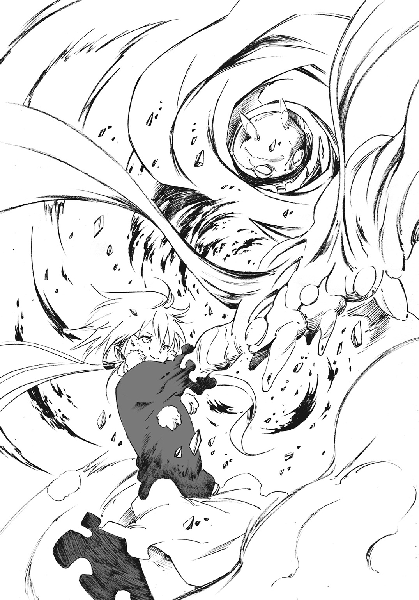
「へぇ、すごい反応」
先程までスチーマーがいた場所を殴りつけたコロナは、空振りしたことに驚く。少女の持つ力の余波だろうか、殴りつけた周囲が爆ぜて炭化していた。厳めしい手甲が高熱を帯びている、とはまた少し違う、違和感があった。
そして容赦のない一撃。一緒に街を歩いて楽しく過ごしたとしても、今のコロナにとってスチーマーは屠る対象の一つでしかないのだと告げていた。
「ッ......！」
スチーマーは愕然とする。多少の装甲を身につけ、馬鹿力を振るう彼と目の前の少女では、根本的に立ち位置が違うのだ。
「これが......魔女」
呟き、彼はじりじりと後退する。対策がまるで取れない。圧倒的な力を前にしては、距離を取ることの意味すら怪しい。
「そうだ、あれが魔女だ」
気づけば、スチーマーの傍らにジャッカルが立っている。彼女は苦虫を嚙み潰したような表情でコロナを睨む。
「〈崩振手甲〉。ご自慢の魔術兵装まで使って......、随分なやる気じゃないか。私と敵対する気か？」
「エヘヘ、そんなのよくあることでしょ」
コロナは屈託のない笑みをジャッカルに向ける。
ジャッカルは舌打ち一つしてから屈みこむ。黄色の布で巻かれた右腕、その指先を地面に当てた。
「ふん、この際だ。黒のついでに赤も死んどけ」
ジャッカルの右腕から、目に見えない力の波紋が生まれた。
力の波紋は普通の人間にとって静電気程度の刺激。しかし死者にとっては違う。来るはずのない朝を告げる鐘の音だ。
死者を従順な下僕として扱うジャッカルの右腕、〈屍王の指先〉の力が放たれたのだ。
「材料である死者は新鮮で潤沢。今こさえたばかりだ」
店内、スチーマーの回転式機関砲によって殺され、絶命したはずの〈赤布〉の構成員が呻きをあげる。声帯の使い方を思い出すかのような、不気味な声音だ。
最初は痙攣するように震えて、しかしすぐに自分の足で立ちあがる死者達。ジャッカルを護り闘うため、即席の兵隊が生まれた。
――屍霊舞踏。ジャッカルの手となり足となり、皮が剝がれようと、肉が千切れようと、脳漿を零そうと、骨の一片まで闘う彼女の奴隷だ。
ジャッカルは喫茶店内に立ち並ぶ死者を眺め、
「たった十五体か......私の森なら万を超える戦陣を組めるんだが」
彼女はスチーマーの前に手を翳す。
「これから死者にコロナを攻撃させる。お前は奴に近づくな。その右腕みたいに吹き飛ばされるぞ」
「......うん」
スチーマーは小さく頷く。彼はもうコロナをただの少女だと考えることを止めた。そんな甘い考えでは、この魔女には勝てない。
「ところでコロナちゃんの手甲......あれは魔術なの？」
「詳しいことは知らん、あれは奴だけの魔術だからな。だが魔力で編んだ手甲の力は確か......」
「触れた対象の超振動化。いい加減覚えてよね」
十五体の死者に距離を詰められながらも、平然としたままのコロナが話に割って入る。
スチーマーは失った右腕を再度見てから納得する。
コロナは「超振動化」と言った。恐らくは分子レベルで振動させているのだろう。固体を液体に、液体を気体に、といった具合だ。
水を水蒸気に変え、鉄を溶解させることも容易い。その際には爆発的な熱が生まれる。つまり、手甲に触れた存在は自身の熱で勝手に自壊してしまうのだ。
だからこそコロナにはあらゆる防御が効かない。超振動化の前では鉄鋼すらバターのように溶解するからだ。
「へぇ、それはまたすごいね」
これは勉強になった、とスチーマーが頷く。ジャッカルはそんな彼に呆れ顔を向けて、
「ま、そういうことだそうだ。だからお前とは相性が悪い。接近戦をしようものならあっという間に蒸発だ」
彼女はスチーマーの回転式機関砲を指で叩く。
「だから、これで薙ぎ払え」
「了解」
スチーマーが左手だけで回転式機関砲を構えると同時に、死者がコロナに殺到する。鈍重かと思われた死体は思いのほか俊敏だ。
しかしコロナは余裕の面持ちを崩さない。掌を前に向けて、
「たったその程度の兵隊さんで勝てると思ってるの？ ジャッカルは知らないかもしれないけど、あたしはこれでも力を抑えてるんだよ？」
ジャッカルが死体を操って戦わせるように、魔女とは使い魔を使役して闘う場合が多い。しかしコロナはまるで戦士のように拳を振り、敵を屠る闘い方を好む。
究極の個となることで他者を滅する闘い方。ある意味、少女は最高クラスの魔女でありながら、魔女とは最も遠い存在だと言えた。
コロナの手甲の一部がボコボコと泡立ち、無数の赤い粒子を生む。彼女は手を振って、粒子を飛ばす。粒子は霧吹きのように拡散。瞬く間に空間を埋め尽くす。
空間が歪んだ。
「――！」
粒子の一部が死体に降りかかる。粒子が触れた死体は超振動化。蒸発、爆散した。死肉と毛髪の焼ける不快な臭いだけが残る。死体だけではない。超振動化によって周囲の椅子、テーブル、壁や床、天井、ありとあらゆるものが炎上し、爆砕する。
ジャッカルやスチーマーの叫ぶ間すらない。
煉獄と化した空間。熱波の暴嵐が吹き荒れ、全てが瞬時に蒸発する。ちっぽけな喫茶店がそれに耐えられるはずもない。店は一度膨張したかと思うと、乱れ狂う大気の圧にひしゃげて吹き飛んだ。
上空百メートル以上に焦げた材木が飛び、隣接する建物や道路すらも削る大爆発。周辺は為す術なく残骸の波濤に吞み込まれた。
コロナによって、喫茶店を中心とした周囲一帯は問答無用で薙ぎ払われた。周囲百メートルは爆発後も塵芥が舞い、有視界距離はゼロ。五里霧中の状態だった。
「あークッソ......あの火力馬鹿」
喫茶店から数軒分を離れた地点。舞った埃で何も見えない裏路地で呻く人間がいる。
ジャッカルだ。今はスチーマーに抱えられている。コロナの爆撃を察したスチーマーが咄嗟の判断でジャッカルを抱えて逃げたのだ。彼にはコロナの爆撃から逃れるだけの運動性能がある。しかし完璧に逃れることができたわけではない。
「なんとか跳んで逃げたけど......」
スチーマーが力なく呟く。ジャッカルは彼を見上げて、しばし言葉を失った。
彼はジャッカルを爆炎から守るため、その身を盾にして抱えていたのだ。身体の所々は砕け、煤けていた。
ジャッカルは数秒黙ってから、ぎこちなくではあるがいつもの勝手な調子を取り戻す。
「ッハハハ、危ないところだったな」
「そうだね」
スチーマーは埃で何も見えない周囲を見てから、
「コロナちゃんから距離はとったけど......。どうする？」
スチーマーにはもう武装がなかった。ジャッカルを守るために回転式機関砲は邪魔だと考え、捨て去ってしまった。
「どうするも何も、この状況じゃ退散するさ。コロナは確かに厄介だが、索敵するための特別な魔術は持ってない。このまま爆煙に紛れて逃げるぞ」
ジャッカルは地面を指差す。
「いつまで抱えてるつもりだ。自分で歩く」
「ボクが抱えていたほうが早いんだけどなぁ」
スチーマーは彼女の言葉に従い、その身を地面に降ろす。ジャッカルは足を地に着け、しかし一歩目を踏むことなく、前のめりに倒れ込んだ。
「......あ？」
足に力が入らない。倒れた身体を持ち上げるための腕にも力が入らない。どんどん身体の重みが増しているというのに、何か大事なモノが抜け落ちていく気もする。
「あー、これは......」
ジャッカルが自身の腹部を見る。ナイフのように尖った木片が深々と刺さっていた。裂けた衣服の奥、血の気が失せて青白い肌も見える。コロナの爆撃は直撃せずとも、吹き飛ばした木片の一つがジャッカルの身体を貫いたのだ。
彼女は今更のように訪れた激痛に表情を歪めた。
「ジャッカル！」
スチーマーも今になってようやく、ジャッカルの負った傷に気がついた。慌てて抱き起こすと、彼女は汗を滲ませながらも、笑う。
「いいから、動け。とりあえず裏路地を進むぞ」
再び、スチーマーは彼女を抱え上げて走る。
木片は確かに彼女を貫いてはいたが、重要な内臓は上手く避けられている。重傷なことに変わりはないが、あとで手当てができる傷だ。
「ごめん」
それでも自責の思いを感じたのか、スチーマーが謝る。ジャッカルは傷を隠すように身を捩ると、
「気にしてる場合か、モタモタしてらんねーぞ」
彼らの後方で再び爆発が起こる。先程まで喫茶店があった場所だ。大気を震わせ、埃がより一層舞い上がる。近くにいたらしい住民の悲鳴と怒号が遅れて飛び交う。セザールの兵が人払いをしているとはいえ、ここまでの被害は想定されていなかったはずだ。
「ッハ、コロナの奴......見つけられなくて苛立ってるんだ。ざまーみろ」
どんどん血の気を失っていくジャッカルは、それでも減らず口を絶やさない。
「ジャッカルは黙って、しっかり傷口を押さえて！」
スチーマーとしては、暴威を振るい続けるコロナにいつ見つかるか不安でたまらないのだろう。ジャッカルを守りながらでは戦うことすらままならない。
裏路地を遮二無二に駆け続け、しかしスチーマーは唐突に止まった。
「あぁ......どうした？」
スチーマーが震えていた。その震えは彼に抱えられているジャッカルにも感じてとれた。
「いや、あれ......」
スチーマーの視線の先。埃が大量に舞う先から、ぼうっと影が浮き上がる。有視界距離が限りなく狭まっている状況で、シルエットが徐々にその姿を露にしていく。
「お前......」
ジャッカルはスチーマーの震えの意味を知り、唇を嚙み締める。
「やぁ、ジャッカル」
白の魔女、エーメット。
彼女は爆風の中、白の長髪をなびかせて優雅に歩いてくる。白蠟の肌と女性的なプロポーションのおかげか貴族然とした気品を感じさせる。だからこそ、この危険な状況下でにんまりと笑う貌は非常に不気味だった。
「コロナがあれだけ暴れてるってのに、お前は顔も見せやしない。怖気づいて逃げたのかと思ってた」
エーメットは肩を竦めて苦笑する。
「まぁ、ネ。直接対峙するにハ、あんな怖い子はいなイ」
「ふん、アイツに『犯人探しごっこ』をそそのかしたのはお前のクセに」
エーメットが少しだけ目を見開く。
「なんダ、気づいていたのカ」
当たり前だ、とジャッカルが頷く。スチーマーが〈赤布〉を殲滅していた際、店外で待たせていたのはコロナとエーメットの二人なのだ。単純極まるコロナに、誰かが何かを吹き込むとすればその時だ。そして彼女が続ける言葉には、苛立ちと怒りが込められていた。
「エーメット、自分が何したのかわかってるのか？ コロナの『犯人探しごっこ』で、お前自身だって狙われるんだぞ？」
エーメットの視線がジャッカルの背後を示す。埃に遮られた先では、コロナがまだ暴れ回っているはずだ。
「私は私でなんとかするサ。ジャッカルみたいニ、お腹に穴なんて開けなイ。それにコロナがお前にダメージを与えタ。それだけで十分だシ、利用した価値があったというものだヨ」
エーメットは意地の悪い視線でジャッカルの全身を舐め回す。特に木片の刺さった腹部を注視していた。
ジャッカルは血の気を失って震えているが、決して弱みは見せなかった。痛みに耐える素振りすら見せずエーメットを睨み続ける。
「それで、お前はなんのために来た？ お前も『犯人探しごっこ』か？」
ジャッカルは半ば予想がついている問いを投げかける。
「犯人なんてどうでもいイ。最近流行り出した推理小説だっテ、こんな雑な真似はしなイ」
エーメットは純白のコートのポケットに手を突っ込み、答える。
「私は黒の魔女の遺産に興味があル。あいつの〈窯〉を手に入れテ、識りたイ。それだけダ」
「単純な興味か？」
「そうダ。興味さえあれば魔女の全ては事足りル」
ジャッカルは時計塔でのひと悶着を思い出す。黒の魔女の遺産に興味津々のエーメットと意見が食い違い、衝突しかけたことだ。彼女は予想を確信へと変え、頷く。
「なるほど、私は邪魔者......というわけか」
エーメットにとって、ジャッカルは敵性対象となった。他の誰よりも、だ。
「そういうことダ。なに、気にするナ。お前を殺したラ、黄の魔女の〈窯〉も大切に扱ってやろウ」
他の魔女の〈窯〉を手に入れて扱うなど、そうそうできるはずがない。しかしエーメットは自信に満ち満ちていた。それは理屈ではなく、自分自身への信頼と傲慢からくるものだ。
「魔女らしい魔女だな、お前は」
「ありがとウ、最高の褒め言葉ダ」
エーメットはコートのポケットから手を抜く。
「さ、怖い赤の魔女が来る前ニ、ケリをつけよウ」
エーメットの手には一つの石ころが握られていた。人間の手が一切加えられていない無骨で小さな石。まるで石灰石のように白く、穢れを感じさせない。
スチーマーはただならぬ気配を感じたらしい。彼の握力ならあっさりと握り潰せるであろう石に、だ。
「ジャッカル......」
彼に呼びかけられたジャッカルは苦渋の表情を強める。そしてスチーマーにしか聞こえない程度の声で、そっと耳打ちする。
「今のお前と私じゃ、アレはどうにもならない。逃げることだけ考えろ」
エーメットが軽く石を放る。石は重力に引かれてエーメットの足元に落ちる。硬い音とともに転がり、
「――さぁ、活殺自在の狂劇だヨ。〈巨神の破片〉」
転がった石に接触した砂、土、石が吸着。凄まじい勢いで周囲の物が巻き込まれていく。雪達磨を造るように大きさを増し、徐々に体積を膨らませていく。最後には裏路地を挟む民家さえ削って吞み込んだ。
石ころを核として腕が生え、足が生える。醜く歪ではあるが人型を為した。
ソレは巨大な足を踏みならし、スチーマーとジャッカルの前に立ち塞がる。周囲の民家と立ち並ぶほどの巨体。太古の神話において暴虐の限りを行った石の巨人、ゴーレムだ。
土塊でできた厳めしいゴーレムは、スチーマーの倍は背丈と厚みがある。エーメットはそびえ立つ巨軀を満足そうに眺めると、宣言するかのように叫んだ。
「白の魔女である私に逆らうというのなら問答無用！ 一切合切を叩き潰してやろうじゃないカ！」
ゴーレムが主の意思に応じて歩み出す。緩慢な動きで両腕を振り上げ、
「やレ」
エーメットが指を弾くと、ゴーレムは二つの巨腕をジャッカル達に向けて叩きつけた。
コロナが魔術によって周囲一帯を薙ぎ払った直後、ラプラスとリーフォンは喫茶店の裏手に位置する場所に立っていた。彼らの周囲には喫茶店から逃げ出し、リーフォンに斬られた〈赤布〉数名の死体がある。
塵芥に揉まれながらラプラスがぼやく。
「酷いわねーホント。リーフォン、そう思わない？」
リーフォンは目を細め、爆発地点の方向を窺う。
「ラプラス様、この爆発は〈赤布〉によるものではないと思われますが」
「そうね。これだけ派手なのは、たぶんコロナちゃんよ」
「〈赤布〉を倒したというのに、この攻撃......。コロナ様は他の魔女と交戦しているということでしょうか？」
「きっとエーメットあたりにそそのかされでもしたんでしょう。あの子、単純だから」
呆れた、と笑ってからラプラスは喋る。
「結局、〈赤布〉は黒の魔女のことを何も知らなかったし、災難だっただけよねぇ」
リーフォンは彼女の入った瓶をしばらく見つめてから尋ねる。
「ラプラス様......そこは笑うところですか？」
「なんでそう思うのかしら？」
「ラプラス様は始めから、〈赤布〉が何も知らないだろうことを存じていたと思います」
「ウフフ、そのとおりよ。私だけじゃなく時計塔にいた魔女は皆、薄々そう思ってたはずよ。だからといって、あのまま時計塔で話していたって何も面白くないじゃない？」
言い出しっぺであるはずのラプラスだが、何も責任を感じた様子はない。彼女は平然とした声音で続ける。
「ジャッカルとエーメットがケンカまで始めちゃいそうになるし、犯人探しに意識を向けることで紛らわせればいいなと思ったの」
「結果的に魔女同士の抗争は起きてしまった。事が起きるのが、早いか遅いかの違いにしかなりませんでした」
リーフォンは粛々と言葉を返す。問題の元凶の一人であるラプラスは楽しそうだった。
「結果を見てみればそうよね。でも仕方ないわ。魔女なんてそんなものなの」
「必要とあらば同族の魔女をも殺す、と？」
「そのとおり」
リーフォンは騒ぎのある方向を見つめ続ける。
「ジャッカル様が黒の魔女を殺したという可能性はありますか？」
「どうでしょうね～」
液体は瓶の中で揺れ動く。悩ましげに思考を転がしているかのようだった。
「ジャッカルも、アレはアレで複雑な事情があるのよねぇ」
「エーメット様はどうでしょうか？」
「エーメットもよくわからないわ。でも傲岸不遜の自信家だからねぇ。あの子なら黒の魔女の遺産だけじゃなく、他の〈五色の魔女〉の遺産も、この際だから狙ってしまえって考えるでしょうね」
「非常に魔女らしい行動だと判断できます」
リーフォンは背後に視線を走らせる。コロコロと真っ白な石が転がっていた。
石ころは瞬く間に周囲物を巻き込み、人型を形成。ジャッカル達を襲っているゴーレムと同じタイプのゴーレムが造り出される。
ゴーレムはリーフォン達を見つけると、無言で腕を振り上げた。
ラプラスは驚きもせず、予想どおりといったふうに呟く。
「可愛いくらいに、我儘よねぇ」
スチーマーはジャッカルを抱えたまま飛び退く。直後、彼のいた場所にゴーレムの巨腕が叩き込まれる。地面が割れ、陥没する。局地的な地震すら起こして周囲の物を跳ね飛ばす。路地を挟む民家は軋みをあげ、倒壊寸前。砕けた壁とレンガが石礫となって地面を叩く。
「ッ......！」
着地したスチーマーは体勢をぐらつかせた。片腕を失ったせいで、上手く自身の重心を捉えられずにいるのだ。ゴーレムは彼らの事情など考慮せず、容赦なく襲いかかる。
「■■■■■――！」
この世のものとは思えない咆哮。ゴーレムは周囲の物体を手繰り寄せて造った身体だ。声帯機能も異質で歪で禍々しい。ビリビリと大気を震わせる吠え声にスチーマーは思わず身体を竦ませそうになるが、
「......ッ」
なんとか堪える。
そうしている間にも土塊の巨人が迫りくる。
裏路地はゴーレムの巨体にとって窮屈なはずだが、障害物をあっさりと削って打ち砕く。あとに残るのは無惨な轍だけ。前進は決して止めない。
スチーマーがゴーレムから逃げるためには後退するしかない。しかし後退すれば、コロナがいる方向に逆戻りすることになる。手負いのジャッカルを抱えたまま鉢合わせしてしまえば、今度は逃げられないかもしれない。
後ろは赤、前は白。絶望的な状況の中、スチーマーは逡巡したまま動き出せずにいる。
彼の思考を見透かしているかのように、エーメットはニヤニヤと笑っている。
「スチーマーって言ったナ？ ジャッカルの魔術の成果である君の力、見せてほしいものダ」
ゴーレムが追撃のために腕を横に振って、薙ぎ払う。スチーマーは跳び、腕を飛び越える形で避ける。
無骨な姿に似合わない軽快な動きにエーメットが口笛を吹く。
「ほー、意外と動くんだネ」
ゴーレムの空振りした拳は、そのまま三階建て家屋に突き刺さる。いとも容易く、まるでマッチ箱を潰すように家屋は倒壊。残骸は数十メートル先まで吹き飛んでいった。
スチーマーに直撃すればどうなったであろうか？ 彼ならば数回までは耐えられるだろう。だが彼が抱えているジャッカルは――。
「......」
スチーマーがふとジャッカルを見れば、彼女は苦しそうに目を瞑っていた。いつもの軽口すら寄越さなくなっている。その様子がスチーマーをなによりも苦しめる。
「無様だナ」
エーメットは手を上げ、ゴーレムの動きを止める。そして実に楽しそうに喋り出した。
「スチーマー、そいつを置いていケ。そもそも魔女はたった独りダ。独りで生きテ、独りで死ぬんダ」
スチーマーは首を振る。
「そんなのは、あんまりな生き方だよ」
「魔女らしいとハ、そういうものダ」
エーメットは再びゴーレムに攻撃の指示を送ろうとして、
「待ってよ」
幼さを僅かに含むものでありながら、スチーマーの声は鋭く翳りがない。
「どうしたんだイ？」
エーメットは彼を試すように聞いた。
「君だけの命乞いなラ、聞くのもやぶさかじゃあないヨ？ 私のもとに来てもらう必要はあるけどネ」
「そんなことはしない。だってそこにジャッカルはいないんでしょ？」
スチーマーはエーメットの差し伸べた手をきっぱりと拒絶する。
「なんダ、やっぱり君もリーフォンとかいう男のように魔女の狗というわけカ」
エーメットは溜め息を吐く。しかし落胆の表情は見られない。もとからスチーマーを手に入れられるとは期待していなかったようだ。
「......エーメットさん、一つだけ言わせてほしい」
スチーマーがゴーレムを前にして一歩進む。放つ言葉には強い意志が宿っており、
「ボクは『狗』じゃない。そしてジャッカルは貴方とは違う。魔女だからといって、独りじゃない。ボクがいるんだから」
「............うるせぇよ」
抱えられたジャッカルはスチーマーに顔を向けず、小さく呟いた。
エーメットは眉一つ動かさずに、
「ふーン、言いたいことはそれだケ？」
「うん」
「あっソ。遺言としてはつまらないネ」
彼女は手を振った。ゴーレムに再び動くよう促したのだ。
ゴーレムが身を震わせると、再び猛る。
「■■■■■■■■■■■■■■■■■■！」
五〇トンに及ぶ重量の突進。岩の巨人は強力無比な質量エネルギーと化す。眼前の存在、その悉くを圧殺するために。
「遺言かどうか決めるのは、まだ早いよ」
小さく呟いたスチーマーは足を踏み出した。
立っているだけで吹き飛ばされそうな威圧を感じながらも、全力で駆ける。ジャッカルを大切に抱える左腕は決して緩めない。
――加速、圧縮、循環、収束、排出。
引き出せる出力を全開放。エネルギーがスチーマーの身体を循環する。そのあまりの力に自身がズタズタに焼き切れそうな錯覚すら覚える。体内で発生した熱は蒸気に変わり、各部の排気孔から吐き出される。
（前、前、前ッ......）
エーメットは思わず目を見張る。スチーマーの前進が予想外の動きだったからだろう。
ゴーレムの圧倒的質量と衝突する瞬間。スチーマーは膝を折って、しゃがみ込んだ。埃の舞っている今だからこそ屈みこんで、少しでも敵の視界から消える。
速度の乗った身体を地面に押しつけ、火花を散らしながら滑走する。
「――」
スチーマーはゴーレムの股を潜り抜けた。途中、ゴーレムと接触。左肩の一部分を削ったが、スチーマーにとってはたいした問題ではない。彼の身体は死体を詰めて、鋼鉄で覆ったもの。代わりは幾らでもきく。
ゴーレムの股を潜り抜けた先、エーメットが無警戒なまま立っている。スチーマーはそんな彼女を狙わない。まだ幾つゴーレムを造り出せるかもわからないのだ。今はジャッカルを守ることだけを考え、リスクは負わない。
彼の目指す到達点はエーメットの手前。ゴーレムが初撃で砕き、陥没させた地面だ。
「あそこなら......いける！」
滑りこみながらスチーマーは確信する。
ゴーレムは地面を陥没させるどころか、その強力すぎる一撃で深々とした穴を穿っていた。スチーマーでもなんとか通れるサイズだ。穴底がどこまで続いているかはわからない。だが粉塵の動きから、空気の流れを視た。少なくとも、エーメットの前に立つよりは安全な路があると彼は踏んだ。
舞った埃のせいで足元は不確か。エーメットも穴が穿たれていたことを失念していたのだろう。
彼女がスチーマーの思惑に気づき、ゴーレムに命令を送ろうとするが、もう遅い。
スチーマーは勢いを殺さず穴まで滑り、飛び込む。
途中、エーメットとジャッカルの目が合った。ジャッカルは彼女に向かって小さく舌を突き出している。
「ッ......！」
スチーマー達は地下へと落下する。地上でエーメットが苛立ち、舌打ちする音が聞こえた気がした。
「はぁ～、そうきたカ」
エーメットは薄い唇を嚙み、地面に穿たれた穴を睨む。彼女の傍らに立ったゴーレムは佇むだけで何も行動は起こさない。穴は狭く、とても追えないと判断した彼女はゴーレムの動きを止めさせたのだ。
エーメットは潰れた喫茶店とその周囲一帯を眺める。舞い上がっていた埃は徐々に消えて、凄惨な光景が広がっていく。寄り添うようにして集まっていた家屋。その大半が欠けて、歪んで、薙ぎ倒されている。少しばかり平地に近づいて、見晴らしがよくなってしまった。彼女は周囲の惨状を眺めながら首を傾げる。
「コロナの奴......飽きたカ？」
三度目の爆破がなく、被害は広がっていない。コロナがもう暴れていないことに気づいたのだ。
そして地響きが一つ。エーメットの背後から巨大な影が覆う。
「遅かったじゃないカ」
彼女は長い白髪を手で梳いてから、背後を振り返る。
土塊の巨人。ラプラス達にさし向けたゴーレムがいた。エーメットは目を細め、二体目のゴーレムをまじまじと見つめる。そして肩を竦めた。
「ラプラス達のほうも取り逃がしたって感じカ......上手くいかないネ、ホント」
エーメットはささくれ立つ内心を自覚する。ラプラス達はともかくとして、負傷したジャッカルを取り逃がしたのは失敗だった。
「同格の相手とはいエ、実に不格好。実に魔女らしくなイ」
エーメットとて失敗の経験がないわけではないが、自らが失敗することそのものが予定調和であるかのような気がしていた。不可視の存在に視られているかのような錯覚。
「......せっかくの舞台を整えたのハ、私なんだがナ」
ただの勘にすぎない、と白髪を振る。
これからどうするべきかと迷っていると、十数人分の足音が駆け寄ってくる。
長銃を構えた衛兵だ。肩を怒らせ、皆一様にして緊張した面持ちだ。エーメットがこの惨劇を引き起こした張本人だと考えてやってきたのだろう。
「そ、そこを動くなッ！」
衛兵の中で一番年長者らしい強面の男が叫ぶ。声音には、恐怖と怒りが混ざり合っている。それも当然、衛兵達はエーメットの傍に立つ二体のゴーレムに驚きを隠せないでいるからだ。
彼らは魔女や魔術を知らない。理解の及ばないゴーレムを、どう捉えていいのかわからないでいた。エーメットは衛兵達の感情を容易く察し、笑みをもって返す。
「なんデ？」
エーメットは一歩進み、合わせて二体のゴーレムが彼女に付き従って進む。二重の地響きに衛兵達が竦む。にやにやと笑いながら近づくエーメット。最後には衛兵達の目と鼻の先に立っていた。
「街を守る衛兵サンとやらガ、私に何の用かナ？」
彼らの目には、もう怯えしかなかった。
「ドーン！」
突然にエーメットが叫ぶ。高く可愛らしい女の声だ。衛兵は皆、小さな悲鳴とともに腰を抜かして尻もちをついた。
「キャハハハハハハ！ 情けない奴らダ」
エーメットは彼らを指差してケタケタと笑う。そしてそのまま彼らの横を悠然と歩いて通り過ぎる。
「弁償は宰相あたりにでも頼んでおくんだナ」
エーメットが指を弾く。
途端、二体のゴーレムがボロボロと崩れ落ちた。悲愴感を感じさせる暇もなく、巨体をあっさりと自壊させたゴーレム。ただの瓦礫と化したゴーレムに視線を寄越すことなく、エーメットは去っていった。
衛兵は追わない。否、追えない。
体中の筋肉は硬直し、足は地面に縫いつけられていた。何も知らない彼らでも、エーメットは全力で忌避すべき相手だと理解してしまっていた。
第四章 静謐な舞台に奏者は上がり始め
一度だけ、ボクは家出してみたことがあった。
別に森が嫌になったとか、ジャッカルと喧嘩したとか、そんなんじゃない。
外の世界が気になっただけ。
好奇心と、どこまでも行ける身体ならある。
しかし結果として、一日で帰ることになった。
東の最果て、寂れた寒村が最初で最後の到達地点。
村に着くや、すぐに石を投げられた。どうやらひどく怖がられたらしい。
石が鋼の身体に当たると、高く硬質な音が響いた。痛くはないはずだけど、痛かった。
すぐに歩く気力がなくなってしまった。残念。
森へと引き返す羽目になった。本当に残念。
人間が怖がる気持ちもわかる。だけどボクだって、元は彼らと変わらない人間だった。ジャッカルに救われて、こんな身体なだけで。元々は......元々のボクは......。
斜陽が差し込む時計塔の第十階層。宰相、デルフィニウム・セザールは砕かれた円卓をそのままに、椅子に座り頭を抱えていた。
「騒ぎはやめてくれと言ったはずなのだがな......」
日が暮れようとしているが、魔女達は戻ってこない。
およそ三時間前、赤の魔女が暴れ、喫茶店ごと周囲を吹き飛ばした事件はセザールの耳にも届いていた。
「死者五〇名以上、負傷者は一〇〇名以上......」
セザールにとって〈赤布〉の命は市民として勘定に入れるつもりはない。だが、〈赤布〉の命を差し引いても被害は甚大だった。頭痛で卒倒しそうですらある。
「多少の被害は予想していたが、見通しが甘すぎたようだ」
魔女は荒れ狂う嵐そのものだ。とても人災とは言えず、もはや天災の部類として割り切るべきかと考えたくなる。
「まぁまぁ、オジサン、そんなに落ち込まないでよ」
セザールに優しく甘い声がかけられる。彼は喜ぶことなく、むしろ批難の眼差しを正面に向ける。
「今更のようにここに来ておいて、よくそんなことが言えるな」
彼の眼前には赤の魔女、コロナがいた。災厄を振りまいた魔女が、今はオレンジジュースを片手に座っている。椅子の高さに合わない足が宙にぶらりぶらりと揺れていた。
「お前が街を破壊した元凶であることも知っている」
「ふーん」
「止めに入った衛兵も多く殺してくれたそうだな？」
「だって邪魔なんだもん」
コロナは何でもないかのように告げる。ただ花を摘むように、命を摘んでみせたのだと言わんばかりだ。セザールは腰に構えた剣に手をかけるが、それだけだ。刃を抜くことはできない。
「......謝罪の一つでも聞かせてほしいものだな」
コロナは軽く拳を額に当てると、ひどくあざとい笑顔を作る。
「んー、ゴメンね？」
もはやセザールは怒る気すら失せ、うなだれる。
「なぜ、暴れるのを止めてここに来た」
コロナはグラスに小さな口を当てて、オレンジの甘酸っぱい味を堪能する。一息置いて、
「えっとねー、犯人探しは飽きたの」
あまりにもわかりやすい少女の答えに、一国の宰相は言葉を失った。彼は立ち上がり、コロナを一人置いて時計塔を出ようとする。
「あれー、帰っちゃうの？」
「帰ることなどできないさ。ろくでなしどものせいで仕事が増えたからな」
「ふーん、大変。がんばってねー」
セザールの嫌みなど、どこ吹く風。暴虐の限りを尽くした赤の魔女は今、ジュースの味わいを楽しむことしか考えていない。
首都ミョールの大規模な公共施設の一つとして、地下に血管のように張り巡らされた地下下水道がある。下水道を辿るだけで、ミョールのありとあらゆる場所へ行けると言われるほどに広大で複雑怪奇な世界だ。慣れていない者にとっては、巨大な迷路になることは間違いない。
不衛生で薄暗いこの場所に好んで来る人間などそうおらず、一人分の足音だけが反響する。
足音はスチーマーのもので、彼は片腕でジャッカルを抱えている。
「もう陽は落ちちゃったかな？」
下水の流れる縁、汚れた足場を歩きながらスチーマーが呟く。
エーメットから逃れたスチーマーは、下水道まで穿たれた穴を辿って落ちてきたのだ。今はどこへともなく下水道内をかれこれ三時間。方向も道もわからないまま歩き続けている。
「もう止まっても大丈夫だよね。逃げ切れてるといいんだけど......」
下水道からでは外の様子は確認できず、あやふやな体内時計に頼るしかなかった。スチーマーは腰を落としてジャッカルをそっと降ろす。
「ジャッカル、大丈夫？」
ジャッカルは浅く肩を上下させるだけで何も言わない。血に濡れた腹には、いまだに木片が刺さっている。痛々しいことこの上ないが、応急処置すらできない現状である。対処の仕方がわからないスチーマーは迂闊に手をつけられない。
彼女の体力の消耗は激しく、時間の猶予はあまりない。
「どうしよう、か」
後悔と焦燥。自分はどこで間違ってしまったのかと思い悩む。今になって考えても仕方がない。無意味だ。わかっていても、思考は何度も失敗の想いを抱えて廻り続けている。
再び地上に出れば、また他の魔女に襲われるかもしれない。だから地上に出ることは可能な限り避ける必要があった。
スチーマーが考え込んでいると、ふいに身体をコツンと叩かれた。
「ジャッカル......」
冷や汗をかいたジャッカルは、辛そうな表情を浮かべながらもスチーマーを再び叩く。ぎこちなくもニッと笑ってみせる。
「スチーマー......さっきのゴーレムから逃げる方法はよかったぞ。......エーメットの口惜しそうな表情が目に浮かぶ......ッハッハ......」
言ってから、ジャッカルは咳き込んで身体を折る。スチーマーが慌てて彼女の背をさする。
「あー、もう。喋らなくていいからじっとしてなよ」
スチーマーはできるだけ深刻さを抑えて言葉を返す。
彼には痛覚がない。だから想像することでしか共感を持てない。ジャッカルはすごく辛そうだ、としかわからない。そのせいでジャッカルに孤独を味わわせているのかもしれないと考えると、口惜しくて呻きそうになる。
スチーマーは一度、上を見てから、
「ボクだけでも地上に出て治療に必要なものを揃えてくる、とか......。でもボクの姿は目立つようだし......」
今の彼には身体を覆い隠す麻布はなく、煤けた鉄の身体が露になっている。おまけに右腕も欠損した状態。人目につかないはずがない。
「――あの」
そうこうしているうちに突然、聞き覚えのない声が下水道に響いた。
「誰？」
スチーマーが身構える。彼らの歩いてきた道から足音が響いてくる。どうやら今まであとをつけられていたらしい。
「あの、ここを歩いているのを見たので、珍しいなと思って......」
程なくして、彼らの前に小さな人影が立つ。汚れたボロ布を羽織う十歳程度の少年が姿を見せた。
「君は......」
一目見て、スチーマーは思い出した。林檎飴をあげたロウスの少年だ。
スチーマーが少年を覚えていることを知って、少年は少し微笑む。
「昼間は林檎の飴をありがとう。大きなお兄さん」
「いや、そんなのはいいけど。どうしてここに？」
少年は少し気まずそうに顔を俯けてから、
「ここが僕の家なんだ。仕事場でもあるけど」
ロウスとは最下層の人間だ。人々から虐げられ、苦しい仕事もさせられる。一年後には生きていられるかもわからない。不衛生で過酷な労働と、ほんの僅かな賃金。そして、地下で暮らすことを強制されていた。
スチーマーは返す言葉が見つからず、戸惑う。
「悪いことばかりじゃないよ。冬は寒さから守ってくれるし、意外と暖かいんだ」
ロウスの少年は苦笑する。それは子供が浮かべる表情ではない。
「ところで、その金髪のお姉ちゃんは大丈夫？」
少年は壁に背を預けて座っているジャッカルを見る。
スチーマーは困ったように頭を搔いて、
「ちょっと理由があって、ここに逃げ込んできたんだ。でも治療のしようがなくて......」
少年はしばらく黙考する。そして自分の来た道を指差す。
「僕の寝てる場所まで来れば、包帯と消毒液くらいはあげられるよ」
「いいの？」
「僕に物をくれた人はお兄さんくらいだからね。恩返しくらいさせてよ」
少年はまた自嘲に満ちた子供らしくない表情を浮かべた。
「下水道の道を全部覚えてるの？」
「そりゃ、覚えてないとすぐ迷子になるからね」
少年は迷路のような下水道を迷いなく進む。幸い、整備された大きな下水道ということもあって、スチーマーの巨体でも難なく通れた。
三〇分ほどロウスの少年についていくと、行き止まりに辿りついた。
「ここだよ」
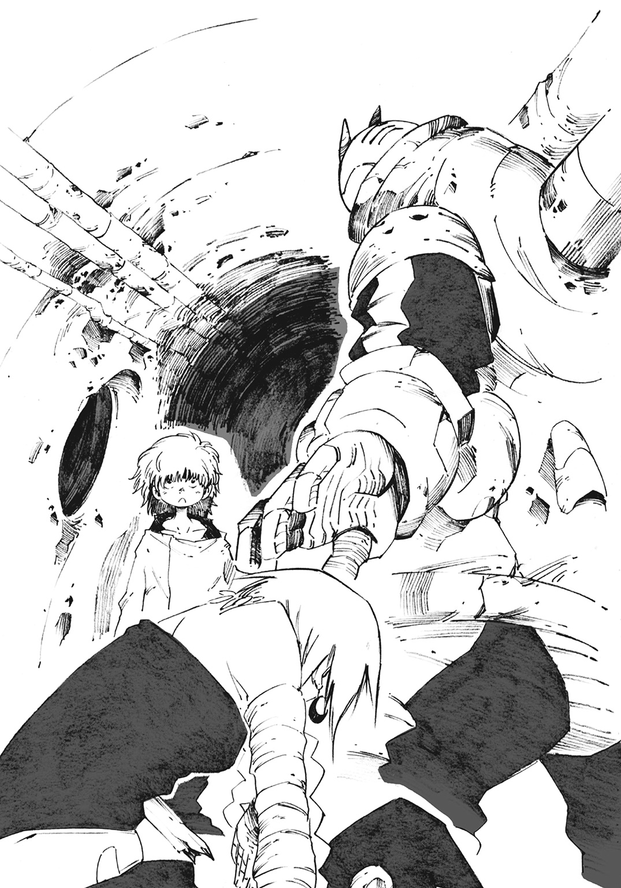
少し開けた空間だ。薄暗い視界の隅では鼠が走り、汚水の臭いは相変わらず酷い。ここが下水道であることには変わりないが、部屋としての体裁を整えられる程度のスペースがあった。硬い床にはツギハギだらけの布が敷かれており、それがおそらく少年のベッドだろうとスチーマーは予測する。
「こんな汚い場所だけど、大丈夫かな？」
ロウスの少年が申し訳なさそうに尋ねる。
「いや、本当に有難いよ」
スチーマーは布の上へと慎重にジャッカルを寝かせる。
少年は隅に置いてある木箱から包帯と消毒液を取り出す。ジャッカルの腹に刺さった木片を見ると、一瞬だけ表情が強張り、動きが止まる。だがすぐに慣れた手つきで手当てを始める。
「慣れてるんだね」
手当ての様子をスチーマーが横から覗き込む。
「食べ物の次には大切なことだよ。衛兵の八つ当たりで殺されかけたこともあるし......他のロウスもそれで死んだ人が多いから」
ジャッカルの手当てをしながら、少年は静かな口調で喋る。少年に親はいない。物心ついた時からたった独りで生きてきたのだと語った。
「――これで、ひとまずは大丈夫かな。安静にしてなきゃいけないけど」
木片を抜き、縫合して止血する。少年はその場しのぎの手当てを終え、一息つく。
「ありがとう。ボクだけじゃどうしようもなかったから」
スチーマーの声音には安堵が混じっている。彼は横たわって気を失っているジャッカルの髪を撫でた。
少年は俯き、頭を搔く。
「いや、僕もこんな所に人を連れてきたことはなくて......誰かと会えて話せてよかったというか......もう、ジャックはいないし......」
「ジャック？」
「えっと、ここで飼っていた犬で......ちょっと前までいたんだけど、今はいない。ミョールの衛生整備でね......。狂犬病予防のために野良犬は皆、兵士に殺されたんだ」
少年は口惜しそうに唇を嚙み締める。ロウスという階級故、周囲の人間から虐げられてきた少年は、飼っていた犬の温もりすら奪われたのだ。
「ごめん、つまらない話だったね」
一時の沈黙を経て少年は立ち上がり、足早に去っていく。
「ちょっと腹の足しになりそうなものを探してくる」
少年の姿が見えなくなり、それを見計らったようにジャッカルが呟いた。
「ふん、マセガキが」
スチーマーが驚き、背をのけ反らせる。
「うわっ！ ってなんだ......起きてたんだね。というか助けられておいて、その反応はすごく可愛くないと思うよ？」
「......感謝はしてるさ」
ジャッカルはゆっくりと上体を起こす。スチーマーが彼女に安静を求めて手を出すが、はねのけられる。
「畜生......痛いし、苦しいし、ここは臭いし。エーメットの奴、やってくれたな......」
ジャッカルが立ち上がろうとして、しかし仰向けに倒れる。
「うぎゃ」
情けない声をあげたまま、起き上がれないでいる。スチーマーは頭を押さえて、
「何やってんのさ、ジャッカルは寝てなきゃいけないんだよ」
ジャッカルは額に流れる汗を拭って頭を振る。長い三つ編みが乱れ揺れる。
「......それでどうするってんだ。今すぐアイツの所に行く」
煌々と光る黄金の瞳。ジャッカルの戦意はまったく衰えていない。
「いざとなったら、エーメットさんはボクが何とかしてみるよ。戦うことだって......。だから動かないでよ」
スチーマーはジャッカルを心配して、懇願ともとれる口調で頼み込む。
しかしジャッカルがそれで大人しく引き下がるはずもない。それどころか目を見開き、怒りの混じった言葉を吐く。
「片腕をもぎ取られたデカブツに何ができる。寝言は寝て言いやがれ......！」
スチーマーはよろめいた。たじろぎながらも、
「そんな、じゃあボクは何のためにここに、ジャッカルの傍にいるんだよ」
「知るか、もうお前は戦いに出なくていい。雑魚は下水道にこもってろ」
ジャッカルの声は荒い。言葉にはいつになく鋭い棘がある。
「それは......酷い言いようだね。ボクは君を守りたいだけなのに」
スチーマーは彼女に気圧されて、声音はどんどん弱くなっていく。
「いいか、雑魚の分際で『戦う』なんて馬鹿なことはもう言うな」
「う......」
ジャッカルはスチーマーに指を差して言い切ると、呻きながら蹲った。彼女はそれきり何も言わず、泥のように眠りだす。罵声を浴びせるだけ浴びせて体力が尽きたのだ。
スチーマーは身動きすらできず、立ち尽くす。ジャッカルの罵声がいつまでも耳に残っている。強靭なはずの肉体の中で、いつまでも反響して鳴り響く。怒りはない。あるのは無力感だけ。
数分後。戻ってきたロウスの少年は、彼らの気まずい雰囲気を感じ取ったらしい。
少し遠慮がちに話しかける。
「これ......。口に合うかわからないけど、保存食だからたぶん食べられるはずだよ」
少年が差し出してくれたのは果物と羊肉の瓶詰め。古びてはいるが、大切に溜めていた物だとわかる。
「あ、ありがとう」
スチーマーは受け取り、頭を下げる。
ロウスにとっては、自分の食べ物を用意することすら困難なはずだ。貴重な食料を今日会ったばかりのスチーマー達にあっさりと寄越してくれる。そしてスチーマーの姿に対しても一切の言及をしていない。気遣われているな、と感じ、その有難さが身に染みる。
「こんなことを言ったら図々しいかもしれない。でもボクは君にもう一つ頼みごとがあるんだ......いいかな？」
ロウスの少年は首を傾げる。
「どうしたの？ 僕にできることなら何でもするよ？」
スチーマーは歩き、少年の横を通り過ぎる。
「ジャッカルを見ていてくれないかな。ボクはちょっと地上で用事があるから」
少年はスチーマーとジャッカルが何者なのか知らない。異様な姿恰好で、右腕を失って平然としているスチーマーを見て、彼らが普通ではないこともわかっているはずだ。
彼が赴こうとしている場所もまた、普通であるわけがない。
スチーマーの安全を考えるのなら、止めてやるべきなのだろう。だが今、少年に頼んでいるスチーマーの声音は真摯さと覚悟で満ちている。彼の行動を阻むことなど、少年にはできなかった。
「......わかった。いってらっしゃい」
「ありがとう」
スチーマーは下水道の奥へと兜を向ける。
ジャッカルを狙うエーメットと決着をつけるつもりだった。戦うな、と言ったジャッカルの言いつけを破ることになるだろう。
「ジャッカルが起きたらどう想うかな。ひょっとしたら怒るかな......怒られるよね、うん」
呟き、たぶんそのとおりになると確信する。
「あとで謝ればいいよね」
スチーマーとジャッカルは互いに満身創痍。しかしジャッカルのために動ける存在は自分しかいない、という自負と誇りが彼を突き動かした。
地上へと続く鉄の蓋を開け、スチーマーは地下下水道から這い出た。
「ここは......」
周囲を眺めて、見覚えのある場所だと理解する。
ミョールの中央市場へと続く大通り。ジャッカルとともに歩いた場所だ。
既に深夜。大通りに昼間ほどの活気はなく、静まり返っている。遠く、噴水のせせらぎだけが微かに響く。軒を連ねていた露店はもうどこにも見えず、所々に立つ街灯だけがある。石炭ガスによる強い光はスチーマー一人を照らしていた。
「ボクが通れるくらいの蓋を探してたら当然、広い場所に出ることになるよね」
一人頷き、蓋を閉める。
「さて......」
スチーマーは暗闇に紛れて、そそくさと大通りを立ち去る。足取りに迷いはない。行き先をあらかじめ決めてから動いているからだ。
目的はエーメットを倒すこと。しかし相手は〈五色の魔女〉、容易なことではない。倒すとはいかないまでも、ジャッカルが狙われないよう撃退することが最低条件だ。
しかし、スチーマーはこのミョールという都市をほとんど知らない。慣れない場所で〈五色の魔女〉を相手にするには不安要素がありすぎる。
だからスチーマーは確実とはいえないまでも、行ってみる価値のある場所へと向かう。都市に入って一日も経ってない今、彼はその場所しか知らなかった。
冷たい風を切って夜を駆ける。スチーマーは馬車や石炭車などよりもずっと速い。並び立つガス灯が高速で流れ去ってゆく。
軌道は直線的。立ちはだかる家屋を回り込む必要もない。屋根上を走っているからだ。彼の体重のせいで建物が軋むが、気にしている場合ではない。屋根から屋根へと跳躍。俊敏な機動で都市の空を渡る。
下手に地上を歩いて、衛兵に見咎められたら面倒だった。特に〈五色の魔女〉には見つかるわけにはいかない。エーメット、コロナ、ラプラス。いずれにしても危険な相手だとスチーマーは考えていた。
「――あれ？」
ふと彼は眼下の小道に気になるものを見つけた。無視してもよかったが、足を止めて屋根から降りる。
灯りのない寂しい通り、狭い通路だ。スチーマーの身体では、やや窮屈を感じてしまう。湿り気のある大気が滞留している。空気の流れも淀んでいる。
スチーマーが足を踏み進める度に、硬質な音が響く。じゃりじゃり、と細かなガラス片をすり潰す音だ。足元を見てみれば、やはり大量のガラス片。よくよく見てみれば無数の酒瓶も転がっている。所々には吐瀉物が見当たり、隅には新聞紙が山となって捨て置かれている。
「うーん、酷いところだね」
大通りの整然とした美しさとは、正反対の場所だった。
スチーマーは足早になって、路地を進む。途中、倒れている男を見つけた。死んでいるかとも思ったが、ただの酔っ払いだ。いびきをかいて、赤い顔を夜空に向けている。
スチーマーは男を脇に除けてあげると、路地を更に進む。
彼が気に留めた存在はもっと先にある。
通路の先は薄明かりが点々としていた。首都の中央から隠れるようにして、小さな区画が広がっていた。夜更けだというのに、人通りもそこそこにある。しかし誰も彼も堅気ではない様子だった。目や顔つきが違う。翳りのある顔を隠しもせずに歩いている。
この区画は不穏だ。スチーマーは直感のままに進んだ。
「あっ」
とうとう目的のものを見つけ、スチーマーは息を吞む。そしてすぐに建物の陰に隠れる。
スチーマーは子供を見つけたのだ。十三、十四歳くらいだろうか。瘦せた小鹿を思わせる女の子だ。擦り切れた服を着ており、とても身なりがいいとは言えない。何よりも二の腕に見える聖痕が、下水道で助けてもらった少年とひどく似ていた。それだけで、彼はあらゆる不吉さを感じてしまう。
少女は羽振りのよさそうな男に手を引かれている。とても親子には見えない。
先刻、屋根上を走っていたスチーマーは少女の視線に気づいたのだ。地上にいる少女と目が合ってしまった。言葉を交わさなくとも、通じるものがあった。少女は湿った瞳でスチーマーを見ていた。今も手を引かれて歩きながら、スチーマーの隠れているほうを窺っている。
やはり、とスチーマーは頷く。事情は知らないが、少女は助けを求めていた。
ロウスの少年、コロナ、と続いてこれで三人目。どうやら自分は子供によく見つかる運命らしい、とスチーマーは思う。
スチーマーの目の前の光景は、暗く歪んだ真実を孕んでいる。少女のためを思うのならば、引かれる手を断ってやる必要があるだろう。隻腕の身とはいえ、彼には容易いことだ。
スチーマーは動こうとして、
「......」
しかし動き出せない。それどころか巨軀は来た道を戻ろうと振り返る。
スチーマーがここで動けば騒ぎが起こる。騒ぎは人を呼び、衛兵を呼び、魔女を呼びかねない。それだけはできなかった。時間の猶予もない。
ジャッカルのために、彼は一刻も早く魔女を打倒するだけの力を手に入れなければならない。名前を知らず、言葉すら交わしたことのない少女を助ける暇と余裕はない。
スチーマーには優先すべき人がいた。いくら大きくても、彼の掌には限りがある。
仕方がない。仕方がない。仕方がない――。スチーマーは自らを縛りつけるよう、内心で呟く。こんなことなら、わざわざ降り立って見に来るべきではなかったのだ。ロウスの少年から感謝されて、思いあがっていたというのもある。彼は自らの無知に憤り、後悔する。
「ジャッカルを、助けないと」
自らの言葉を嚙み締めながら、彼は再び夜を駆ける。
スチーマーは闇夜に建つ教会へと辿り着く。
「すいません！ 誰かいませんか！」
木製の扉を強く叩く。月の位置から考えて、時刻は十二時を回ったあたり。神父が就寝していたとしても、なんらおかしくはない時間帯だ。だが迷惑だとは知りつつも神父が起きてくるまで扉を叩くつもりだった。
「はい、今開けますよ」
しかし思いの外、扉はあっさりと開く。
「えっ」
予想外の結果だ。スチーマー自身が意外に思う。
扉を開けた先、祭服で立つロキ・フランシス神父は相変わらずだ。好青年らしく清々しい風貌で微笑んでいる。深夜の寂れた教会にいるせいで、逆に不気味な印象すらある。
「確かスチーマーさんでしたね。こんばんは」
「こ、こんばんは」
神父は深く礼をすると、教会内に入るよう促す。
「あの......」
スチーマーは一瞬だけ迷ってから、自らが来た道を見る。思い出すのは怪しげな小区画と助けを求めていた少女。
「あっちのほうに、明るくなっている区画があって」
神父は顎に手を添えて、ふむふむと頷く。
「ああ、ご覧になったのですか」
「一体何の場所なんです？」
「奴隷市場ですね。娼館とかもありますが、基本的には人を買ったり売ったり、そんな場所です」
「......そうですか」
「買いたい奴隷でもいましたか？ 私も幾らか嚙ませてもらっている市場なので、相談にのりますよ？」
神父は優しげな笑みを浮かべる。本人としては気を利かせているつもりなのだろう。
「別に、いりませんよ」
スチーマーは苦々しげに呻く。神父は彼の様子を観察しながら尋ねる。
「そんな話を聞きに、ここに来たんですか？」
スチーマーは俯きそうになっていた顔を上げる。先刻の記憶を振り払うかのように、腕を強く振る。
「違いますよ......！」
神父は満足そうに頷くと、スラリと長い手で彼を招く。
「そうでしょうね。それでは、どうぞ中へ」
「まるで、ボクが来ることを知っていたみたいですね」
教会に入ると、スチーマーは率直な疑問を神父にぶつけた。
神父は当然とばかりに首肯する。
「貴方が回転式機関砲を街中で撃ち鳴らしたという話は聞きました。正気の沙汰とは思えない事件です。そして喫茶店で起きた爆発......。内容はわかりません。結末も知りません。ですが相当の荒事だっただろうとは推測できます」
「なんで神父さんが、そんなことを知ってるの？」
神父は苦笑する。
「兵器を売りつけるような神父ですよ？ いろいろと情報筋はあるんです」
神父は一瞬、間を開けて、
「それに、今日は商売相手を多く亡くしてしまいました。寝るに寝られませんよ」
「商売相手？」
神父はもったいぶるようにして、ポケットから取り出したものを振ってみせる。それは、
「赤い布......」
ロキ神父はいたって普段どおりの表情。微笑みのまま、さして痛手にもなっていない様子で語る。
「〈赤布〉の方達にも商品を多く流していたんですが、残念ながら亡くなった方が多いようです。これからも注文が貰えるかどうか心配ですね」
スチーマーは神父の立ち位置がわからず、戸惑う。
「神父さんは国にも〈赤布〉にも......ボク達にも武器を流して、一体何者なんですか？」
「何者でもありません。困っている人がいれば助ける。それだけですよ。対価として金銭を貰えれば私は満足です」
神父のやり方にスチーマーが口を出す筋合いはない。しかしそれでもひどく歪すぎて、
「神父さんのやり方。困っている人を助けたら、また困っている人が生まれちゃうよ？」
「ならば、また新しい困っている人を助けましょう」
「それじゃ、何も終わらないじゃないか」
「そうです。ですが何度も何度も人助けができるなんて、素晴らしいと思いませんか？ お金だって貰えます」
「......ボクにはよくわからないよ」
この神父は胡散臭く、どこまでが本気かわからない。スチーマーはそんな感想を得た。
「私が何者でもいいじゃないですか。善悪の捉え方など主観以外の何物でもありません。別にお金が好きな人間、というふうに形容してもらっても構いませんよ？」
神父は朗らかに言うと、スチーマーのつま先から頭まで観察する。
「そして、貴方も『困っている人』のようだ。〈五色の魔女〉に連なるものならば資金は潤沢。私のできる限りの力をお貸ししますよ。代金は後払いで構いません」
そう言うロキ神父の目は聖職者のものではなく、守銭奴の商売人として、転がり込んできた金塊を見る目つきだった。だからといってスチーマーは神父を嫌悪しない。嫌悪する以前に強欲な人間への理解が及ばないからだ。
スチーマーは自身の目指す道だけを見つめて言葉を紡ぐ。
「ボクは武器が欲しいんです」
回転式機関砲ではまだ足りない。エーメットと彼女の使役するゴーレムを相手取るには、圧倒的な武力手段がいる。
神父は顎をさする。
「武器......ですか。その様子だと昼間に渡した商品以上のモノを所望しておられるようだ」
「どうにかなりませんか？ ボクなら大砲程度は振り回せますよ」
彼は眉を下げ、申し訳なさそうに言う。
「アレ以上の火力となると艦砲クラスの兵器ですね。用意できないこともないですが、時間がかかります」
神父は悩み、天を仰ぐ。彼としても逃がしたくはない案件だったが、人智を超えた力を想定して商売をしているわけではない。
武器を必要としている反乱分子に銃を与え、彼らを抑えたがる貴族とその私兵に更に強い武器を売って、対立を煽る。そんな商売しかしてこなかったが故に難しい問題だった。
「ほらみなさい。言ったでしょう？ 貴方程度の小物で、どうにかなる相手じゃないの」
艶のある、上品な女性の声が教会内に響く。
神父は頭を搔いて、残念そうに肩を竦める。
「何とかして商売にしたかったのですが......貴方の言うとおり、厄介な案件です」
スチーマーは突然割って入った声にたじろぐ。
「えっと、誰ですか？」
ロキ神父は天井を見上げる。
「青の魔女、ラプラス様ですよ」
薄汚れたステンドグラスの縁に人影が映る。いつからそこにいたのか、窓枠のでっぱりに足をかけて立つ人間がいた。
ラプラスの従僕、リーフォンだ。完全に気配を殺して佇んでいた彼は、スチーマーと神父を無表情な顔で見下ろしている。
「さ、リーフォン。降りてちょうだい。似非神父の役目はここで終わり。今度は私がスチーマー君と話す番だから」
リーフォンはラプラスの言葉に頷いて、宙空に跳ぶ。八メートル以上ある高所から、身を捻る動きで落下。地に足を着ける時は音もない。衝撃を上手く逃がし、まるで猫のような完璧な着地で、難なく地上に降り立つ。
「フフ、驚かせちゃったのならごめんなさいね」
彼が抱える瓶の中で、青の液体が蠢く。踊るような液体の動きには、どこか楽しげな雰囲気があった。
スチーマーはラプラスの声を喫茶店で聞いたことがあった。液体が思考を持ち、喋り出す。あの時は気のせいかとも思ったが、違った。
スチーマーは液体である彼女を見て、理解できずとも納得はする。もう〈五色の魔女〉に常識など期待していない。呆れにも近い思考に加え、自身もまた異常な存在であるスチーマーは、液体の魔女をあっさりと受け入れる。
気にするところがあるとすれば、そんなことではない。ラプラスが〈五色の魔女〉の一人であるということだ。彼女が敵であるのならば、限りなくまずい。この状況下でスチーマーは抵抗する術をほとんど持っていないからだ。
「なんで魔女がここに......」
警戒しようとして一歩下がるスチーマー。ラプラスが慌てた口調で呼び止める。
「あ、待って待って。敵とかじゃないから。私は優しいお姉さんポジションだから」
「ちょっと何言ってるかわからないです」
スチーマーは神父をちらっと見て、説明を求める。彼はラプラスが教会にいることを知っていたのだから。
「ジャッカル様同様に、ラプラス様も教会の大事な商売相手なのです」
神父が説明し、ラプラスが言葉を続け補足する。
「私はスチーマー君の味方よ。貴方の要望は、そこの神父の手に余るでしょうし、ね？」
神父が小さく咳き込む。
「『貴方にできることはない。恥をかくだけだから、やめておきなさい』ってせっかく言ってあげたのにね」
ロキ神父は両手を上げて降参といったポーズをとる。
「確かにそのとおりでした。どうかこれ以上は苛めないでください」
神父は近くの長椅子に腰を掛ける。
「それでは、どうぞ。私は何も言わず座っていますので」
「そう、それでいいのよ」
ラプラスは満足げに言う。
「それじゃあスチーマー君、貴方がここに来た理由はなんとなく察してる。ジャッカルが姿を見せない理由も言わなくていいわ」
スチーマーは彼女の言いように違和感を覚える。
「ジャッカルのことが気にならないんですか？ 同じ〈五色の魔女〉なのに？」
「気にならないと言えば噓になるけど、でも今はもっと興味のあるモノがあるの」
スチーマーはラプラスの入った瓶から視線を感じる。眼球という器官がないはずの液体から感じる視線は、熱っぽく絡みついてくるような思念に近い。
「それは貴方よ。スチーマー君」
「ボク......？」
「ええ、だから少しお話をしましょう。ひょっとしたら貴方自身が知らない真実を教えてあげられるかもしれないわ」
スチーマーが咄嗟に強い口調で返す。
「ボクはボクだよ」
言って、自分でも驚く。なぜすぐ言葉を吐いたのかわからない。まるでラプラスの言う『真実』を無意識のうちに怖がっているようだ。
「まぁまぁ、別に貴方の存在を否定しようって話じゃないのよ？」
スチーマーの反応に何らかの手ごたえを感じているのか、ラプラスは心底嬉しげに言葉を続ける。
「貴方は、ジャッカルの生み出した人造人間だと聞いてるわ」
スチーマーは無言のまま首肯する。
「それじゃあ、貴方はどこから来たのかしら？」
「ボクは......捨て子だよ。まだ何も知らない赤ん坊の時に、あの森に捨てられたんだ」
スチーマーとしての意識を手に入れてから、ジャッカルが最初に教えてくれたことだ。
「瀕死の状態で、肉体が保たなかったって。だから脳だけを取り出して、死者の肉体を用意したって......」
「それを貴方自身は少しでも覚えているの？」
スチーマーの心奥から苛立ちがこみ上げてくる。自身の出生など気にしたことがなかったし、心のどこかで気にすることを避けていたからだ。
ずっと無視して触れないでいたナニか。大切に包んでいたナニかを徐々に剝がされていく不快さ。返す言葉は自然と荒くなる。
「覚えているわけがないじゃないか。五年前のことだし、ジャッカルから聞くしかない。ボクは気づいた時からこの身体だよ」
「あら、その話からすると、貴方ってひょっとして五歳児？ ちょっと幼気な感じはしてたけど......リーフォン、どう思う？」
無表情のまま、ずっとラプラスの入った瓶を抱えていたリーフォンは淡々と言う。
「五歳の子供とは思えない言語能力、分析力だと思います」
「ちゃんとした身体を持っていたとしても異常よね。フフフ、天才と言い換えてもいいのだけれど」
「天才なんかじゃ、ないよ」
スチーマーは食い下がる。自分でもわからないナニかを懸命に守っている。
「ジャッカルと一緒に森にこもってた貴方は、他人を比較対象とすることができない。この際だから教えてあげるけど、五歳でその知的レベルは異常なのよ？」
ラプラスの言いようは妖しく、もったいぶっている。秘密を隠し持っていることがはっきりとわかる。それがスチーマーを更に苛立たせる。
「だから、何が言いたいのさ！」
ほとんど怒号と化したスチーマーの声。
「少し、教えてあげましょうか」
ラプラスはあっけらかんとした調子で返す。
「ジャッカルはね、聖痕を知らなかったみたいなの」
突然に別の話題を切り出したラプラス。スチーマーの苛立ちは不完全燃焼のままだ。
「聖痕......。それが、どうしたって......」
スチーマーは思い出す。喫茶店で〈赤布〉を襲撃した時のことだ。あの時、名も知れぬ男は自らを貴族だと証明するために腕の刺青を示してみせた。
ジャッカルは詳しくないようだったが、当然だ。彼女と一緒に森にこもっていたスチーマーだってろくに知らない。
「あら、察しが悪いのね。わからないの？ そんなわけないわよねぇ？」
「それは......」
スチーマーは言葉を返そうとして詰まる。ラプラスの言わんとしていることがわかってしまったからだ。
ラプラスはスチーマーの様子を数秒観察してから、
「フフ、まぁいいわ。あんまり幼い子を虐めるのは趣味じゃないし。このあたりのことはジャッカルにでも直接聞きなさい」
ラプラスはリーフォンに命令する。
「リーフォン、蓋を開けてちょうだい」
「わかりました」
リーフォンは即答して、瓶の蓋に手をかける。スチーマーには彼女が何をしようとしているのかわからない。だから戸惑った様子で問う。
「な、何をするつもり？」
「強い武器が必要なんでしょ？ 私が協力してあげるわ」
「強い武器って......」
「少なくとも、そこの神父よりは上等なものを与えてあげられるわよ」
黙って座っていたロキ神父は苦笑だけ返す。
「武器って言われてもどこに？」
ラプラスは液体で、リーフォンは身軽な軽装。何か特別な物を持っているようには見えない。
「あら、私をただのお姉さん属性の面白液体だとでも思ってるの？ これでも青の称号を持つ魔女よ？」
瓶の蓋が開かれ、青い液体が瓶から這い出る。細長い形状に変わった液体は、鎌首をもたげた蛇のようだった。
「いつまでも大気に触れてはいられないけど、仕方がないわね。私もちょっとおてんばすぎるエーメットを懲らしめてあげなきゃと思ってたから」
液体が突然、跳ねた。
「え、ちょっ――」
液体は有無を言わせない速度でスチーマーに迫る。彼は避けようとするが、遅かった。ラプラスは、彼のなくなった右腕、肩口の断面に触れ、瞬時に染み込む。
「無垢な男の子を犯すなんて久々だから興奮しちゃうわ、フフフ」
ラプラスは嬌声を漏らしながら、スチーマーの体内に侵入する。
「うぁ......ぇぁぁ」
スチーマーは異物が肩から全身に巡っていく悪寒に思わず蹲る。
スチーマーの身体に侵入したラプラスは、液体化した魂。一つの身体に二つの魂が内在したため、拒絶反応が起こったのだ。
（気持ち悪い、気持ち悪い、気持ち悪いッ！）
生まれて初めて感じた嘔吐感。吐き出す口どころか食道も胃もない身体なのに、彼は辛そうにえずく。
「だ、大丈夫なんですか......これ」
座っていた神父も異様な光景に啞然としていた。リーフォンに視線を送れども、彼は眉一つ動かさない。蹲るスチーマーを冷静な表情で見下ろしたままだ。
「私の――〈染色性液状魂魄〉。普通ならこの――程度じゃ済まない――のよ？」
ラプラスの声がスチーマーの身体から発される。ややノイズ交じりだが、彼女は平然とした調子で言葉を続ける。
「普通の人間な――らあっという間に死んじゃう――の。相手の身体を弄くり回し――て乗っ取っちゃうか――ら」
スチーマーは呻きながら、身体の最も深い所でラプラスの囁きを聞く。
「さぁ、外は忘れて、中にある私の言葉だけに耳を傾けて......」
スチーマーの脳内に響くラプラスの声にはノイズがない。彼は返事を返すことすらままならず、ただラプラスの言葉を聞くだけだ。
「貴方の生きている部分は脳髄だけ。それ以外は死で造られた貴方は、自身の魂を感じられる位置に最も近いの。死に近いほど、魂は鮮明さを帯びる。だから貴方には私という魂を頼りにして、自分の魂の扱い方を理解してもらうわ」
「それが......なんになるって......」
ラプラスに貌などない。だがその時、確かに彼女がニタリと笑った気がした。まるで実験のための投薬をモルモットに行う時のような、期待と好奇心に満ちた笑み。
「言ったでしょう。貴方自身を更に強くするための武器を手に入れるのよ」
ラプラスは今度は、スチーマーを見ているリーフォンに向かって呼びかける。
「リーフォン、ちょっ――と手伝って――ちょうだい。彼を案内してあ――げなさい」
「わかりました」
リーフォンは身体を折って、蹲るスチーマーに近づく。
「リ、リーフォンさん......！」
右腕の断面に、リーフォンは指を立てて突っ込んだ。ブチュリ、と柔らかな死肉を突き破る。彼の手が肘あたりまで埋まった。死肉の不快感など気にせず、リーフォンは無表情のまま喋る。
「心配する必要はありません。冷静になって私の鼓動を数え、感じてください。私の鼓動だけに集中して無心を保ってください」
続いてスチーマーの中からラプラスの声が響く。
「よしよし、いい感じね。半日くらいはかかるかもしれないけど、そこは貴方の実力次第ってことで」
程なくして、スチーマーの意識がまどろみに沈む。
深く、深く、とても深い部分に墜ちていく。
「――――あ」
気づけば彼は一面真っ白な空間にいた。
汚れの一切ない純白な正方形の中。中央には小さなテーブルと二つの椅子。いずれの色も無明の闇よりも深い漆黒だ。この空間には陰陽をはっきりと分けたそれらしかなかった。
彼は今、椅子に座っている。
「ここは」
スチーマーは途中で言葉を切って、理解が追いついた。
「ボクの中......」
感覚で得た直感的な理解だ。人が空を空と理解するように。水を水と理解するように。我を我と理解するように――。
「正確には精神界の第一〇八番階層。最深層に存在する聖櫃であり、〝魂〟と呼ばれる場所です」
自分一人だと思っていたスチーマーだったが、思いがけず言葉が返ってきた。
彼の対面の椅子にリーフォンが座っていた。現実とかけ離れた異界にいるというのに、彼は眉ひとつ動かさない。
「リーフォンさん。ええと、これは」
リーフォンは深く頭を下げる。
「ここは貴方の魂そのものです。貴方は自分の魂を知覚して、ここまで落ちる必要があった。私は案内役として疑似的に繫がり、共振しています。本来は他人の魂に踏み入ることなど、無礼極まりない行為ですが、今はお許しください」
「いや、まぁ......構わないけど、でも驚いた。ラプラスさんはともかくとして、リーフォンさんも魔術を使えたんだね」
リーフォンは静かに首を振る。
「いえ、私はあくまでも補助的な役目です。今はラプラス様が貴方の身体の調整と改変をしています」
「ウフフ、そういうこと」
空間の外からくぐもった声が響く。ラプラスだ。
「今は魂という箱の中にスチーマー君の意識を閉じ込めたほうが安全なの。内面に引きこもるってやつ？ 身体を弄ったショックで心が壊れちゃったら意味がないものね。麻酔みたいなものって捉えてもらってもかまわないわ」
「はぁ、そうですか」
物心がついてから、一度も麻酔をしたことがないスチーマーにはピンとこなかったが、とりあえず頷く。
スチーマーはリーフォンと真っ直ぐに相対することで、彼の表情の微妙な変化に気づく。彼から僅かばかり、興味の視線が向けられているのだ。
視線の先、スチーマーは自身の身体を見て驚愕する。
「え、ええっ！」
小さな掌が視線上にあり、小枝のような細い腕は、華奢な身体へと繫がっている。背は低く、椅子に座っている体勢で床に足が着かない。
スチーマーには骨があり、肉があり、皮がある。まるで普通の人間の姿。年齢にして五歳程度の身体になっていた。
リーフォンが感心したように頷く。
「それが貴方の本来の姿、ということですね」
スチーマーは生きた脳髄を死人の肉体で包み、鋼鉄の装甲で覆った人造人間。だがここはスチーマーの魂の中。彼の姿恰好は本来あるべき五歳の幼い少年のものだった。
「これが、ボク......」
違和感のある肉体。それでいて懐かしくもある。
ラプラスの声が再び響く。
「スチーマー君、私はちょっと忙しいから、しばらくそこで雑談でもしてなさい。せっかくの似た者同士だものね」
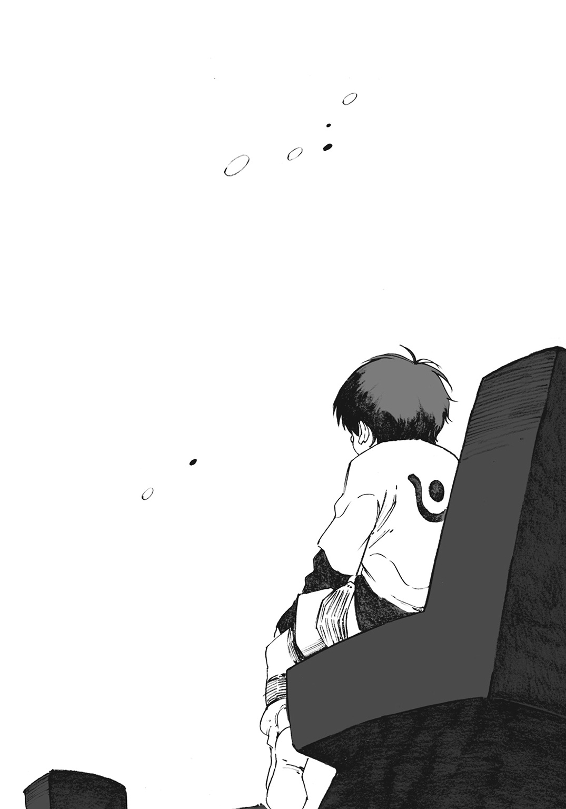
そしてラプラスの声が遠のいてゆく。
「似た者同士......？」
スチーマーが疑問を抱く。それはつまり目の前の青年、リーフォンのことを言っているのだろうか。リーフォンと目を合わせると、
「ラプラス様の仰られたことは、私達の生まれと育ちについてだと思われます」
リーフォンは淡々とした調子で右腕の袖を捲ってみせる。腕には聖痕と呼ばれる刺青が彫られていた。
刺青の形状を見ても、スチーマーには何も判断できない。
「この聖痕の示す意味。つまり、私はロウスです」
ヤルングレイプの国民ならば一目で判断がつく。それはこの国で最も嫌われ、差別を受ける者の証だ。
自らの出自を語るリーフォンは、ほんの少しだけ苦笑しているように見えた。ついさっき下水道でも見た哀しい笑みだ。
「ロウスという身分故に、南の果てで強制労働をさせられていました。過酷な労働で危うく殺されかけて逃亡。生き迷い、死にかけのところをラプラス様に拾われました」
以来、リーフォンの魂の全てはラプラスへの忠義のためにある。彼女の剣となり盾となり、死することすら厭わない従僕になると決めた。
「わかりましたか？ 『似た者同士』という意味」
スチーマーは無言で頷く。
スチーマーとリーフォン。互いに魔女に拾われて命を救われた者同士。彼らは来歴が似ているのだ。
「貴方と私ほど似ている存在は、恐らくこの地上には存在しない。だからこそ私は、単純な興味本位として貴方に問いたい」
「なんですか？」
リーフォンは一息置いて、
「貴方の在り方、です」
スチーマーは肌がひりひりとするのを感じ、腕をさする。自らの魂の中にいるリーフォンの真摯な思惟が伝わってきているのだ。
「私の心に常にラプラス様がいるように、貴方の心にも常にジャッカル様がいるはずです。そのことについて、どう向き合おうとしているのか教えていただきたい」
リーフォンの視線は真剣なもので、
「ボクはリーフォンさんとは、少し違う」
だからこそスチーマーも真摯な言葉で返す。
「ジャッカルの後ろを従い歩くんじゃない。手を引っ張って前を歩くつもりもない。ただジャッカルの横に並び立ちたい」
リーフォンは僅かに目を見開く。
「彼女達は並び立つ者など必要としない。魔女は他人を必要としないほどに強力な存在です」
自然とリーフォンの口調に強みが増す。スチーマーの答えで自分の在り方を否定された気がしたからだろう。心が揺れているのは、同種の存在に対する憤りか寂しさか。
スチーマーが首を振ってきっぱりと否定する。
「ボクはそう思わない。少なくともジャッカルは違う」
少年は親愛の混じった表情で続ける。
「ジャッカルはね、意外と寂しがり屋なんだ。だから絶対に独りにはさせない」
「それでは並び立つ者、とは......」
少年は優しく微笑む。
「簡単なことだよ。あの人には友達が必要なんだ」
リーフォンはしばらく黙っていたが、息を吐くとともに身体の力を抜く。
彼はスチーマーに対して奇妙なシンパシーを感じていたが、錯覚だったようだ。互いは似て非なるもの。方向性が違うのだと悟る。
リーフォンはラプラスの手足となるために肉体を鍛えあげ、精強無比な超人の域に至った。それでも彼は自身と魔女の決して越えられない壁を認め、一線を引いている。
だがスチーマーという少年は違う。魔女に生み出された人造人間でありながら、魔女に歩幅を合わせて、共に歩きたいと言っている。
「なるほど、成り立ちは似ていても、その到達地点が同じとは限らないわけですか」
そして彼は固く握った拳を高く掲げて、一気に振りおろした。
拳は漆黒のテーブルに叩きつけられ、快音が鳴る。
時計塔の頑丈な円卓を一撃のもとに破壊した拳撃だ。しかしテーブルは破砕されるどころか、微動だにしなかった。
「そして、これが貴方の魂の在り方。認めましょう。どんな城塞よりも強固だ。私程度では震わせることすらできない」
もしテーブルが壊れたら、ボクの魂とやらはどうなっていたのだろう、とスチーマーは思ったが、怖くなったのでそれ以上考えるのを止める。
「この椅子も、私が座るべきものではなかった」
リーフォンはそっと立ちあがると、椅子を丁寧に払う。
「貴方の魂にある座席は二つ、貴方自身とおそらく......ジャッカル様のための席」
リーフォンは彼に背を向けると、まるで霞のようにその姿を薄れさせていく。スチーマーとの同調を解き、彼の魂から出るつもりなのだ。
「道は単一ではない。自分で選択して道を歩いているということですね。ならばこそ、私も自分の意思で自分の道を歩いている」
消えゆく彼の表情は見えないが、どこか満足し、納得しているようだった。
スチーマーは見送ることしかできない。リーフォンとは仲よくなれそうだとは思った。しかし決定的な部分で違ってもいる。そこにひと握りの寂しさと尊さを覚え、
「これは......」
リーフォンが消えた途端、空間に異変が起こる。
ドロドロと真っ白な空間が溶けだしている。蠟でできた部屋が火で炙られ、形を崩すかのように。床、壁、天井、全てが白濁になって蕩ける。漆黒のテーブルと椅子にはなにも起きない。
「調整が次の段階に進むから、リーフォンには出ていってもらったの」
部屋の外から、くぐもったラプラスの声。
一体何をするんです、と疑問を放とうとしたスチーマー。だがそれは叶わなかった。
「......ッ！」
叫ぶ暇もない。天井が溶け落ちてきたのだ。純白の大洪水となって、大量の白い液体が噴き出してくる。
ラプラスがスチーマーの魂を変化させているのだ。そこまで考え、その思考もろとも激流に吞み込まれた。
「――」
少年は白濁の海に沈んだ。
巨大な満月が地上を見下ろしている。闇夜を統べる天体は、美しく傲慢な白銀の女王。
都市の中央、月を穿つかのような建物がある。ミョールで最も高い建造物、時計塔だ。
〈五色の魔女〉の会合によって散らかり放題の第十階層。部屋の隅に蹲って眠る少女、コロナがいた。コロナはジュースの入っていたグラスを床に転がして、寝息をたてている。ほどいた赤髪が床に垂れて、無造作に広がっていた。
「朝だヨ～」
無論、朝ではない。
だが噓をついてまで、少女を起こそうとする輩がいる。少女が〈五色の魔女〉の一角だと知っていれば、こんな真似はできないはずだ。気まぐれな獅子の安眠を妨げる真似をする人間はそういない。
「え、なに～」
頰をペチペチと叩かれ、コロナは大きな目をゆっくりと開けた。眠そうに瞼を擦っている。重たい瞼を開けた先に立っているのは白の魔女、エーメットだった。
エーメットは少女の手を取って、無理矢理立たせる。
「ほラ、起きる時間だヨ」
「え、全然朝じゃないよ？ お日様どころかお月様があんなに高いし」
「気にするナ、早寝早起きは良い人生のための基本だかラ」
「早すぎるよぉ」
コロナは不満を露に頰を膨らませる。エーメットは無視して話を続ける。
「セザールから聞いたヨ？ 『犯人探し』に飽きたから時計塔まで戻ってきたってネ。まさか、そのまま時計塔で寝ているとはネ」
コロナは欠伸を一つ、首を傾げて答える。
「『犯人探し』ってなに？」
「え、いヤ......」
さすがのエーメットも頰を搔いて返答に困る。コロナにとって「犯人探し」は飽きたどころか、睡眠を経たことですっかり忘却の彼方らしい。
現状、ジャッカルとラプラスに敵対中の彼女だ。コロナの手を借りられる時に借りておきたかったのだ。
「まぁ、いいサ。忘れているならそれでもネ」
「ねぇねぇ、なんで起こしたの？」
コロナは垂らしていた赤髪をツインテールにまとめあげながら、怒りの眼差しを向ける。
赤の魔女は気まぐれだ。エーメットの返答次第では、殺意を振り撒いて暴れる怪物に変貌しかねない。
だがエーメットは恐れない。慣れた仲だ。いつものようにコロナを扱うだけ。綺麗な顔立ちに含み笑いの表情を浮かべて、
「新しク、楽しいことを教えてあげよウ。この街中を大騒ぎさせるんダ。百万に届く都市の人間達全てを慌てふためかせてみせようじゃないカ？」
コロナは無邪気に笑った。大きな瞳にキラキラと星を浮かべ、
「楽しそう！ なにするの？ 教えてくれるよね？」
「勿論だとモ」
エーメットは大仰に頷いてみせる。ミョールの大下水道に逃げ込んだジャッカルを焙り出すための策だった。
「黒の魔女に贈る鎮魂曲、とでも言っておこうカ。舞台は整っていル、演奏者は君ダ」
最初はそこらの雑草を燃やした。次は煮込んで、乾燥させて、面白可笑しく刻んだりした。それで何も起こらなかったら別の植物、石、金属、動物、人間――。
たいした意味なんてない。ひょっとして、もしかして、私の知らないことが起きるかもしれないと思ったからだ。
好奇心だけで動いてきた。いつも傍らにいるアイツは何の関係もなかったはずだ。
確かにアイツはひどく優秀だったさ。いつも私の知らない方法を編み出して、実践する。私の一歩......否、十歩以上先を走っているような錯覚すら感じた。
忌々しい......。私はべつに、アイツに憧れていたわけじゃない。寂しかったわけでもない。
まぁ、どうでもいい。今の私には関係のない話だ。
私は、どんな人間より強くて長生きじゃないか。こんな瑣末なことは笑い飛ばせばいい。
笑えよ、私。
笑うんだ、私。
ハハハハハハハハッ......！
「......ッ」
ジャッカルは目を開け、跳ね起きた。目の前に立っていたロウスの少年と目が合う。
「え、と......大丈夫？ うなされてたみたいだから」
ジャッカルは俯きながら、前髪をかき上げる。体中が汗に濡れており、包帯の巻かれた腹部はまだひどく痛む。ほんの少し動くだけで、身体がズタズタに千切れてなくなってしまいそうだった。
「ま......ちょっと嫌な夢を見ちまっただけさ」
ジャッカルは傍らに置いてあった大きなトンガリ帽子を手に取って被る。周囲を眺めると、ここにいるべき存在がいないことに気づいた。
「スチーマーは、どうした」
「え、と......」
ロウスの少年はどう答えるべきか逡巡している。ジャッカルはその様子だけで、スチーマーがどうしてここにいないのかを察した。スチーマーは自分の力だけで、この窮地を解決したがっていた。彼は言いつけを破ったのだ。
「あの馬鹿野郎......。私に黙ってエーメットを倒すつもりか......！」
低く重い声音で呟くと、立ちあがる。一歩目を踏みだそうとしてよろめく。だが無理矢理身体を動かして少年に近づく。
スチーマーからジャッカルを見ているよう頼まれた少年だったが、止められない。手負いのはずの彼女には、触れがたい気迫があった。
彼女は服の中から金の延べ棒を取り出し、少年の胸に押しつける。
「助けてもらった礼だ。家程度なら容易く買えるだろうよ」
「こ、これ！」
黄金の重い質感に少年は瞠目する。
「ただし」
ジャッカルは少年の小さな肩を摑むと強く握る。
「勘違いはするな。金があるからといって、ロウスとやらの差別がなくなるわけじゃない。お前の孤独を癒せるわけじゃない。それだけは覚えておくんだな」
少年は金の延べ棒を大切に握り、
「あ、ありが――」
礼を言おうとして、その口にジャッカルの細い指が当てられる。
「これは報酬だ。胸を張って受け取ればそれでいい。わかったな？」
少年は僅かな間を置いてから、凜とした声で返した。
「はい」
「うん、結構」
そしてジャッカルは地下道の奥を眺める。獲物を狙い定めた獣の如く、目を鋭く細める。
「犬はどこだ？」
「い、犬......？」
少年は突然問われた言葉の意味がわからず、戸惑う。
「狂犬病対策で、この街で野犬狩りがあったんだろう。どこで殺された？」
「街外れの処分場だけど......」
冷や汗まみれのジャッカルはニタリと笑った。
「その場所、教えてもらおうか」
ジャッカルは服の中からもう一本、金の延べ棒を取り出す。
「エスコートしてくれるなら、この駄賃をくれてやる。ミョールの街外れなら下水道経由で行けるんだろう？」
少年は頷く。
「むしろ下水道のほうが直線的で近いよ」
ジャッカルは包帯の巻かれた腹をさする。血が滲み、傷は塞がりきっていない。だが彼女は痛みを無視して歩みを進めた。
「それじゃあ行こうか。お前とはそこでお別れだ。しばらく街外れに隠れていろ」
「それは一体どういう意味......？」
ジャッカルの口元が吊り上がる。身体は重傷で震えているが、武者震いのようにも見える。
「よくないことが起きるに決まってるからさ」
ジャッカルの腰、鎖で束ねられた酒瓶はまだまだある。彼女は酒瓶を一つ手に取り、一気に呷る。まだまだ酔いは醒めない。これからだ、と。
第五章 蒼穹を染めあげ、大地を軋ませ
家出から戻ると、ジャッカルは椅子にふんぞり返っていた。彼女は不満気で、ひどく怒っていた。吊り上がった目がボクを睨む。
一人にしたのは、ちょっとマズかったらしい。何度も謝った。だけど、なかなか許してくれない。彼女の機嫌を直すには本当に時間がかかってしまった。謝罪も兼ねて、明日には熊でも獲って燻製のご馳走にしてみよう。
へそを曲げていたジャッカル。彼女がようやく口を開いたかと思うと、質問を投げかけてきた。
「外は、どうだった？」
「あまり楽しくなかったよ」
外の世界について、ボクは率直な感想を言う。
「そりゃそうだろう」
ジャッカルが頷いてから、酒を呷る。
ボクはなぜ、外の世界が面白くなかったのかを考えていた。答えはすぐにわかった。ジャッカルがいないからだ。
「そうだ、今度はジャッカルも一緒に行こうよ」
ジャッカルは盛大にむせ返った。
「はぁ？ 私が？ なんで？」
「二人のほうが楽しいからだよ」
返答に困ったのか、ジャッカルは唇をごにょごにょと動かす。
「......ふぅん、考えておいてやるよ」
ジャッカルはテーブルに肘を突き、窓の外を眺める。窓の先は西の方角だ。
「外、ねぇ」
ボクは地図で知っている。西には大きな首都があるらしい。発展を続ける都市だと聞いている。ジャッカルだって実際に行ってみれば、はしゃぐと思う。
だけど違和感がある。黄金の瞳が、物憂げに西を見つめていたからだ。ずっと遠くを見つめている眼だ。たぶん首都なんかよりも、もっと先。西の果ての海まで届きそうな視線だった。
晴れた空を灼く太陽の到来。雄鳥が朝を告げる鳴き声をあげる。首都ミョールに少しずつ人通りが増える時間帯だ。大工は道具箱を抱え、肉屋は肉を切り、仕立屋は布を縫い始める。
平穏な都市の営みの中、それは突然起きた。
ミョールの地下を蠢く何か。微小な震動が生まれ、都市に歪な響きを奏でる。
街行く人々が首を傾げ、顔を見合わせる。
続けてどこかから声があがる。
悲鳴だ。悲鳴は悲鳴へと伝播し、不穏な空気が都市を侵し始める。
「――」
また悲鳴。
恐怖する市民のうちの数名が、ようやく騒ぎの正体を捉えた。人々の足元、地面を漆黒が這っているのだ。
薄汚れた鼠。一匹や二匹じゃない。
鼠鼠鼠鼠鼠鼠鼠鼠鼠鼠鼠鼠鼠鼠鼠鼠鼠鼠鼠鼠鼠鼠鼠鼠鼠鼠――。
数百、数千、数万、それ以上の鼠が発生したのだ。
人々が驚き、悲鳴とともに逃げる。押し合いへしあい。この非常事態から逃れるために、誰もが我先にと駆け出す。押し倒され、転んだ人間もいたのだろう。踏まれて蹴られて、痛々しい叫びがそこらじゅうから湧き起こる。
「キャハハハ！」
荒れ狂う雑踏の中で、真っ白な女性が一人笑っている。エーメットだ。
「まだダ！ 喜劇のための舞台設定はまだ終わらなイ！」
鼠が街中を駆け抜け、続いて百近い破裂音が響く。下水道の鉄蓋が弾き飛ばされたのだ。下水へと続く穴から蒸気の柱が出現。蒸気は瞬く間に広がり、都市を覆ってしまう。
騒乱の中心点は時計塔だ。
塔の真下でエーメットは悠然と待っていた。しばらくしてから水蒸気による煙幕をかき分けて、彼女の前に立った者がいる。ソレは呆れ気味の声音で呟いた。
「これはまた、随分と派手にやったもんだなぁ」
エーメットは口元に三日月の笑みをつくる。
「いい演出だろウ？ ジャッカル」
白の魔女の前に立つ黄の魔女。彼女はサソリ入りブランデーを口に含み、一息。
「臭い鼠の群れ。臭い下水道の蒸気。胡散臭い魔女。最低としか言いようがない」
「だガ、お前は来てくれタ。もっとモ、下水道にいたのでは蒸し殺されるだけだがネ」
ジャッカルはこのまま逃げる人間ではない。煙を吹かして待っていれば来てくれる。そうエーメットは確信していたのだろう。
ジャッカルは鼻を鳴らして腕を組む。
「それで、これは誰の仕業だ？ ゴーレム使いのお前じゃあないよな？」
エーメットは地面に目を落として、
「コロナだヨ。アイツの魔術なら造作もないことダ。都市中の下水を沸騰させてもらっタ」
〈崩振手甲〉の超振動化によって、下水はあっという間に沸騰。逃げ場を求めた鼠が地上に逃がれ、終いには高熱の水蒸気で下水道は滅茶苦茶に破裂。都市中は大混乱の有様だった。
ジャッカルは周囲を探ってみる。慌てふためく人間達を眺めて、笑い転げているだろうコロナがいるはずだ。今となっては、コロナが敵か味方かもわからない。そのどちらにもなりえる。考えるだけ無駄なので、思考から除外した。
「ホント、あいつはろくでなしだな。やることのスケールが大きくなっただけのガキじゃねぇか」
「だからこそ役に立つと言えル。強力だが性質さえ理解してしまえバ、お前やラプラスよりもずっと御しやすイ」
ジャッカルは顔をしかめる。
「そうだったな。そのせいでお前に一本取られたんだった」
黒の魔女の遺産。それを狙うエーメットにとって、邪魔になる可能性がある者はジャッカルとラプラス。時計塔での言い合いから、ジャッカルが一番の邪魔者だと判断されたのだ。
「邪魔者を真っ先に潰す。実に魔女らしいよ。拍手すら送りたくなる」
重傷を負わされたあげく、エーメットに嵌められたジャッカル。本来の彼女ならば激情に駆られていてもおかしくはない。だが今は随分と冷静な様子だった。
「......その様子だト、私怨だけでここに来たわけじゃあなさそうだネ」
エーメットは白髪を手で梳きながら聞く。仕草の一つ一つが妖しい色気を放つ。彼女は同性であろうとも見惚れるほどに女性的で、魔女的だ。
「私怨だけならコロナのほうが上だ。私の腹に穴を開けやがったんだからな」
「なんダ、嫉妬しちゃうじゃないカ」
エーメットの嫌味を無視して、ジャッカルは右手を翳す。
「だが今となってはそんなこと、どうでもいい」
「つまリ、私には別の要件があるということカ。黒の魔女の遺産についてカ？」
エーメットが白い小石を取り出す、その意味するところは、ゴーレム使いの魔術行使。
「ああ、そんなところだ。お互い白黒つけよう。いや、この場合は白黄つけるだな。なんにせよ、ここでお前をコテンパンにして、巫山戯た執着を砕いてやる」
「ジャッカル、お前がなんでそんなに私の意見に盾突くのカ、わからないヨ？」
「理由を教えてやる義理なんざねーよ」
ジャッカルが冷たく突き放す。
「それもそうカ」
エーメットは笑みを深くするだけ。互いにそれ以上言葉を交わらせることはない。一瞬の静寂と緊張。既に魔女同士の対決が始まったことを意味していた。
エーメットが白い小石を放ろうとする。
彼女の持つ小石は魔力の込められたゴーレムの核だ。魔術、〈巨神の破片〉によってゴーレムが一度造られれば、圧倒的質量を持つ土塊の怪物が顕現。周囲一帯が塵芥になるまで暴れ回るだろう。しかし、
「ッ......」
突然、エーメットの腕が弾かれた。彼女の手指からは鮮血が流れ、握っていたはずの小石がなくなっていた。
ジャッカルの口笛が響く。
「ッハハハ、出されれば手強いとわかってる魔術を、私が使わせるわけねーだろ」
ジャッカルの傍らにその生き物が立つ。エーメットが目を細め、
「犬......？ いヤ、違うナ......」
犬らしき獣の口には白い小石が収まっており、ジャッカルはよくやったと犬の頭を撫でる。犬は気持ちよさそうに尻尾を振っているが、毛はむしられ、肉は所々腐り落ちていた。都市中の野良犬は狂犬病予防のために殺されたはずで――。
「そうだっタ、忘れてタ。操れる死体は人間だけじゃないんだったナ」
エーメットは隠れ潜んでいた屍の犬に不意を突かれたのだ。魔術を発動する前なら、ゴーレムの核はただの小石にすぎない。
死犬は軽くステップを踏む。実に軽やか、しなやか。
ジャッカルは死体の性能に満足する。犬の死体状況はギリギリ許容内。多少の鮮度の劣化については目を瞑る。根本的な身体能力は人より獣のほうが優秀だからだ。
エーメットはしばらく血の流れる手を見ていたが、隙を見て即座にもう一つ小石を投げる。今度は速く、地面に叩きつけるような勢いで、だ。死犬はジャッカルの傍にいる。奪い取る隙はない。
小石は地面を削り、巻き込み、
「――別に、無理してお前から奪い取らなくてもいいんだ」
しかしジャッカルは口元を吊り上げ、笑った。
ゴーレム形成中の小石は周囲の物質を巻き込み、林檎ほどに膨らんでいた。しかし横合いから新たな死犬が飛び出る。
――ゴクリ。
死犬は躊躇なく石を丸吞みにしてしまう。生物ならば間違いなく窒息し、死に絶えるだろう。だからこそ、これは死体にしかできぬ行為。
「悪く思うな？ 先手先手を取らせてもらうことにしただけだ」
ゴーレムの形成は間に合わず、エーメットの魔術は封じられた。
ジャッカルが指を弾く。それを合図に家々の戸、隙間、屋根から無数の影が現れる。
五〇匹以上もの死犬。人間達の勝手な政策で駆逐された哀れな獣が、エーメットを取り囲む。腐臭を吐き、地獄から木霊してきたような唸りをあげる。
「へエ......」
地獄の猟犬に取り囲まれながらも、エーメットは感心していた。
「見事、と言いたいところだけド。どうしてこのコ達は襲ってこなイ？」
ジャッカルが指示すれば、すぐにでも猟犬は襲いかかるはずだ。まずは喉笛を嚙み千切り、四肢をへし折り、内臓をほじくり返す。エーメットの細い身体など、あっという間に細切れの肉に変えられてしまうだろう。
「一つだけ、聞きたい」
「なにかナ？」
エーメットが裂けた指先を舐め回す。赤い舌が、紅い血と絡み合う。傷口の上を舌が滑る様子は、ひどく扇情的だ。
「スチーマーとは会ったか？」
「ああ、お前の人造人間だったカ？ 知らないネ」
エーメットの返答は素っ気ない。噓ではないのだろう。エーメットとスチーマーは戦うどころか会ってすらいないということ。その事実にジャッカルは安堵。疲れたように息を吐く。
彼女はエーメットを睨むと、
「それじゃあ、お前にもう用はない。死ね」
ジャッカルは躊躇わない。猟犬にエーメットを喰い殺すよう命令しようとして、
「――起きロ」
エーメットが小さく呟いた。同時に大地が揺れる。
「キャハッ、私がこの程度で終わるとでモ？」
遠く、蒸気機関車が通る駅舎のほうから土煙の柱が生まれる。地響きは連続し、轟音が近づいてくる。
「あぁ？」
ジャッカルが顔をしかめる。
「仮にも私が同格と認めている〈五色の魔女〉を相手にしているんだゾ？ 見くびるなどありえなイ。準備くらいはするサ」
ソレは街を削り、通過した跡には巨大な轍以外何も残さない。恐らく道や建物など無視して、ただ愚直に真っ直ぐ進んでいるのだ。障害物は容赦なく粉砕する。轟音を撒き散らして、ソレは凄まじい速度でエーメットのもとへと駆けた。
「感謝しろよジャッカル？ 私のとっておきダ」
もしもエーメットが予め〈五色の魔女〉の権威と金にものを言わせ、奥の手を用意していたとしたら？
貨物列車で運ばせた代物がある。昨日、わざわざ決まっていた列車の走車予定時刻に割り込んでまで、だ。駅のダイヤグラムが乱れたことなど、彼女にとってはどうでもいい話だ。偶然、スチーマーとコロナが駅で見ていたトラブルはまさにソレだったが、ジャッカルは知る由もなかった。
エーメットは大きく手を広げて厄災を出迎える。
「さぁ、ジャッカル。終劇といこうじゃないカ！」
近くにあった民家を吹き飛ばしてソレが現れる。勢いのままに弾き飛ばされた残骸。木片と石片が土に紛れて四方八方に突き刺さる。
五〇頭の死犬は死して尚、僅かに抱く本能的な恐怖に抗えず、吠えだして後退する。
「これはまた、ファンタジーだな......」
ジャッカルとて圧倒され、目を見開く。
「驚いたカ？ これでも一週間の徹夜で造ったんダ。寝不足でしかたがなイ」
「......別に、寝ていてもいいんだぞ？」
「それはありがたイ。お前の断末魔を子守唄にするとしよウ」
エーメットの背後に現れ、そびえ立つ大岩。
異様なゴーレムだ。
全容は背に翼を生やした巨大な蜥蜴。体長は三〇メートルを下らない。全てを踏み砕かんとするほどに太く強靭な後脚。刃のような爪を五つ備えた前脚。尖った頭蓋と口内に敷き詰まった凶悪な牙。猛々しくも精緻な芸術の域に達した彫刻。幻想の如き造形であり、伝説上にしか存在しない規格外の怪物――。
岩石の巨竜、ドラゴンだ。
巨軀が身動きする度に岩の鱗がガラガラと鳴る。そして顎を何度も打ち鳴らす。ドラゴンは絶え間なく凶悪な音色を響かせていた。
「全て壊す。何もかも壊す」そう高らかに宣言しているかのようだ。
エーメットは大仰に両手を広げたまま笑む。
「本物のドラゴンのように炎は吐けないシ、飛べもしなイ。魔力が宿る血液も持たなイ。だがしかシ！ それを差し引いてモ、全てを壊滅してみせるだけの竜であると断言しよウ！」
岩の竜は鎌首をもたげて、ジャッカルを見つめる。その眼窩に眼球はなく、吸い込まれそうなほどに深い深淵があるだけだ。
「魔女を殺す竜。なかなかいい構図だろウ？」
エーメットの怜悧な視線がジャッカルに注がれる。
「ハッ、岩で造っただけの贋作風情が偉そうにするな」
ジャッカルは竜を見上げ、不動のままに毒づいた。しかし彼女は動かないのではない。動けないのだ。腹部に負った傷は重傷で、体力もほとんど回復していない。走るどころか、立ち上がることもできない。
エーメットは指先から滴る血液で唇をなぞり、紅を描く。妖艶な魔女が嗤う。
「じゃあ、贋作に負けるお前は一体何者なんだろうネ？」
ドラゴンが姿勢を低くするのも一瞬。後脚をたわませて、大地を蹴った。
「ォォォオオオオオオオオオオオオ！」
竜が都市を震わせるほどに、獅子吼する。聞く者の骨を軋ませ、心臓を粉々に打ち砕くかのようだった。
圧威を湛える怪物に、ジャッカルは動じない。
「声までそれらしいんだな」
ジャッカルとドラゴンの距離は三〇メートル。一瞬にして詰められる距離だ。ドラゴンがジャッカルの細い身体にわずかでも触れれば、即座に肉塊へと変わる。
「舐めるなッ」
ジャッカルは黄色の布が巻かれた右手を振る。死犬に命令を送ったのだ。
逃げ腰だった死犬だが、主の命令を受けてドラゴンへと突っ走る。しかし巨大な岩石と小さな肉塊。単純な質量エネルギーとして、どちらが優れているのかは語るまでもない。
足止めにもならない。竜に触れるだけで、獣は潰れてカタチをなくす。弾け飛ぶ内臓と血液。路上に点々と赤黒い染みが描かれていく。
ドラゴンが前脚を右払いに薙げば腐肉が飛び、左払いに薙げば腐臭が舞う。死犬を潰し、引き裂き、前進する。
「キャハハハハ！ 今すぐこの犬どもみたいにしてやるヨ！」
エーメットが狂喜の叫びをあげ、ドラゴンも主の意志に呼応。加速する。
ジャッカルとの距離は五メートル弱まで縮んだ。岩の巨竜は目と鼻の先。巨大な影がジャッカルを完全に覆い、彼女は無惨に千切れ飛ぶ自身の死体を幻視する。
だが死の恐怖など、たかだか想像からくる産物に過ぎない。ジャッカルは不吉な予感を祓うかのように、右腕を振った。見えない糸を摘まみあげるような指の動き。
「不細工な蜥蜴が、私の前に立つんじゃない」
突然、ドラゴンの巨体は左に傾いた。体勢を崩したのだ。
エーメットはドラゴンの後左脚に絡まる赤黒いモノを視認した。
「あれハ、肉......？」
「そうだ、死体は形を選ばない」
ドラゴンに衝突して弾かれ、砕かれ、潰された無数の死犬の残骸。その肉と骨が絡まり、複数本の紐状に変化。更にそれを束ねて死肉の綱を造りあげ、ドラゴンの脚を絡めとったのだ。
岩の巨竜は強力だが、絡め手を使えば行動を妨げることが可能だ。
「そらっ、土でも味わってろ」
ジャッカルはドラゴンを引っかけて転ばした。
「ォオオオオオ......！」
ドラゴンには十分に速度が乗っている。体勢を整える余裕もなくジャッカルの左を通過。石畳を抉りながら滑り、そのまま民家に突っ込んだ。破砕音とともに民家が崩れ落ちる。
「死体を潰してどうにかなると思ったら、言語道断だ」
ジャッカルが指先を振って、綱状と化した肉を操る。彼女の運指に合わせて綱は裂け、練られ、収束。形を造り変えていく。
その様は指揮棒を手に全ての死を操る死揮者。
「仕切り直しといこう」
三〇匹の死犬が綱へと変わり、綱は新たな形を編みあげる。
三角錐に似た肉塊から伸びる十本の触手。深海に潜む魔物にも似た生物、巨大な烏賊へと変化した。
同時、この世ならざる咆哮が大気を震わせる。
ドラゴンだ。転んだ程度で斃れるはずがなく、すぐに立ちあがる。振り返った頭部、口には家屋の柱が挟まっていた。クッキーを小気味よく砕くように、人間の胴ほどもある柱が易々と嚙み千切られる。
今度こそジャッカルを八つ裂きにせんと咆哮した。
「オオオオオオッ！」
ジャッカルとドラゴンの間には、烏賊の形を模した肉塊が立ち塞がる。
「行け」
ジャッカルの命令に従い、烏賊はドラゴンに迷いなく跳びかかる。
ドラゴンは前脚を突き出す。鋼鉄すら薄紙のように引き裂く竜の爪。
「――」
烏賊は爪にあっさりと貫かれた。同時に三本の触手が断たれ、吹き飛ぶ。
だが烏賊は死なない、止まらない。即座に触手を広げると、ドラゴンの体中に張り巡らせ絡みつく。
右前脚前腕、左前脚上腕、右後脚大腿部、左後脚下腿部、鼠径部、頸部――拘束。
いずれも関節部を触手で抑え込みながら締めあげ、放さない。
烏賊は強力な拘束具となって巨竜を締めつけた。岩の鱗に食い込む触手は、竜の身体を捩じ切らんばかりの力だ。
ドラゴンは転ばないよう踏ん張ることで精一杯。烏賊を解くこともできず、静止させられてしまった。しかし、
「この程度なのカ」
エーメットが落胆の声を漏らした。
同時に、ドラゴンの体中から鈍い光が突き出る。纏わりつく烏賊を払いのけようと身を震わせて、鈍い光が烏賊を容易く細切れにして吹き飛ばす。
ドラゴンの体中から突き出た光。それらは歪な形状に尖った金属の破片だった。正体は列車の無惨な残骸。ドラゴンは身体を形成する際に列車の装甲をも巻き込み、鋼の残骸を刃として纏ったのだ。
烏賊は再生しながらドラゴンに跳びつく。だが身体を震わされては、触れることすらままならない。
刻まれる。千切られる。潰される。いかに死なないとはいえ、歯がたたないのでは意味がない。岩の巨竜には精神力や体力といった概念がないのだから。
徐々に烏賊の肉体は削り飛ばされ、再生が追いつかなくなっていく。都市中の人間は逃げ去ってしまって、死体の補充もままならない。勝負がつくのは時間の問題だった。
「ジャッカル、平和すぎるのも考えものだナ？」
「確かに。ここは死者が足りない。私がいられる場所ではなかったな」
ジャッカルが苦笑する。魔女がわざわざ都市に出張ってまで戦うものじゃない、と。〈窯〉という城から王様が一人で出歩いているも同然の話だ。
「つまるところ、この勝負。準備をどれだけしてきたかで勝負が決まる。......お前の、列車まで使った用意周到さは想定外だったよ」
ジャッカルは、エーメットの目を真っ直ぐに見据える。
「お前、皆が集まる前から計画していたな？」
「ご名答ダ」
紅の引かれた唇が三日月に歪む。
「黒の魔女が死んデ、後処理に悩んでいたセザールをけしかけてやっタ。奴に〈五色の魔女〉の会談を開かせたのは私サ」
「ヤルングレイプ国の誇る英雄が、魔女の甘言に耳を貸すとはね」
「あの男にしたって〈五色の魔女〉の持つ〈窯〉を私一人に集約すれバ、コントロールがしやすくなル。そんなふうに考えていたんだろうネ」
「ふん、老いは罪だな」
ジャッカルは、すぐ傍まで来ていたドラゴンを自嘲しながら見上げる。烏賊は無惨にも肉体を飛散させていた。惨憺たる有様。だが急ごしらえにしては、よく善戦したのではないかと評価している。
ジャッカルは敗北したというのに、ひどく冷静だ。心拍数も正常。重傷の身体に響く痛みさえも、どこか遠い。まるで自分の命の有無ですら他人事のように感じられる。
気だるいだけの疲労感がある。膝に手をついて、重い身を支える。ひゅう、と気が抜けるような息を吐いた。彼女の猛々しい金の瞳は色を失い、いつもの活力はない。役目を終え、ここが終着点だと見定めている表情だ。
「ジャッカル、お前......」
愉快げに笑っていたエーメットが訝しむ。
「負けるとわかっていテ、ここに来たのカ......？」
ジャッカルは答えを返さないことで肯定としている。
「ははーン、わかったゾ、何かまだ策があるんだロ？」
「......」
「そうだよナ、あっさりと負けるなんて魔女らしくなイ」
「............」
ようやくジャッカルは口を開いた。
「『魔女らしくない』ね」
表情を変えないまま、言葉を続ける。
「確かにそのとおり。ただ私は、この敗北にそれなりの意義を感じているだけさ」
「敗北ニ、意義ヲ、感じル、だト？」
途端、エーメットの表情が豹変する。声が震え、柳眉を逆立てる。
「取り消セ！ 魔女がそんなことを口走るナ！ 何を悟ったつもりでいルッ！」
我知らず、彼女は怒号していた。
「ふ、ふざけるナ！ 私達五人は百年以上を生き残った最高峰の魔女ダ！ 私は、お前に諦観など求めちゃいなイ。魔女らしくなイッ！」
エーメットは魔女としての在り方に強いこだわりを抱いている。執着と呼んでもいいほどだ。彼女が他の魔女の〈窯〉を奪おうとしたこともまた、魔女は傲慢であるべきだとした魔女観故にだ。
そんなエーメットだが〈五色の魔女〉は認めていた。だからこそ、ジャッカルの貌は魔女がしていい表情ではない。彼女の魔女観に反している。
魔女は常に自由を求めてきた。敗北者を踏みにじり、勝利を奪い取ってきた人間の成れの果て。
ジャッカルは、仮にもエーメット自身が同格と認めた相手だ。ジャッカルのそれは〈五色の魔女〉の発言ではない。魔女という存在そのものを否定する言葉。それだけは絶対に許さないと憤怒する。
「価値観の押しつけとは、めんどくせー奴だな」
ジャッカルは静かに首を振ると、ブランデーを取り出す。これが最後の一本。嚥下し、飲み干す。
ジャッカルに思い残すことはない。スチーマーを遺すことにも躊躇いはない。彼女は、誰よりも彼が優秀で強いことを知っている。いずれは彼女が教えていなかったことも知るかもしれない。その時に彼がどんな想いを得るのか、少し気になるだけ。
――ああ、やっぱり思い残しがあるんじゃないか。
内心で自嘲してしまう。
「お前の勝ちだ、エーメット。それでいいだろ？」
「ッ！」
自分とは違う目線からの物言い。エーメットは言葉にならないほどに激怒する。
小石を一つ取り出し、放る。小石はゴーレムの核として周囲を巻き込みながら成長し、土塊の巨人となる。
ジャッカルの有する死犬は、まだ二〇匹ほど残っている。だがエーメットの放った小石を奪い、ゴーレムの生成を封じに来る気配すらなかった。それはジャッカルにもう抵抗する気がないということ。
魔女として許しがたき姿勢。エーメットの苛立ちが更に増す。これ以上ジャッカルを視界に入れていれば、魔女としての自身の精神すら汚しかねない。
「もウ、消えロ！」
エーメットが悲鳴にも似た叫びをあげ、ゴーレムが襲いかかる。
家一軒ほどもあるゴーレムが右腕を振りかぶり、渾身の一撃を放つ。直撃すれば、痛みを感じる間すらなく消し飛ぶだろう。絶命必至の拳をジャッカルは避ける素振りすら見せず、ただ眺める。
「――らしくないよ、ジャッカル」
迫りくる死は、ジャッカルの鼻先で止まった。
ゴーレムの拳は受け止められていた。鉄の装甲で纏われた掌で、だ。
ジャッカルは、いつの間にか傍に立っていた影を見上げる。
「スチーマー......なのか？」
問うまでもない。ジャッカルの視覚は、それをスチーマーだと確かに見定めている。香を焚いた匂い。煤だらけの巨軀。右腕も相変わらず欠損している。だが纏っている雰囲気はジャッカルが感じたことのないもので、思わず彼の正体を疑ってしまう。
そもそもスチーマーは確かに怪力だったが、ゴーレムの一撃を受け止めるほどの膂力はない。
「ボクこそ聞きたい。君は本当にジャッカルなのかってね」
彼はゴーレムの拳を左手で受け止めたまま、兜をジャッカルへと向ける。
「ボクの知ってるジャッカルは、負けるとわかっている戦いに出ない。ただ殺されるのを待つわけがない」
スチーマーの声には静かな怒りが混ざっていた。
「こんなにもボクを戦いから除け者にして、何を考えているんだい？」
感情のままに、左腕に力を込める。受け止めていたゴーレムの拳が握り潰され、圧壊した。
「■■■■■......！」
ゴーレムは叫びをあげながら引き下がる。大地が揺れ、大気が軋む。だがスチーマーとジャッカルは、互いの顔を見たまま動かない。
「......別に、お前は何も知らなくていい」
ジャッカルは黄色の布が巻かれた右腕を振った。
〈屍王の指先〉。死者を蘇らせ、支配する死揮者の腕。スチーマーは脳髄以外が死者で構成されている。いざとなればスチーマーの身体の支配権を奪うことだってできる。
だからジャッカルは魔術を行使して命令した。
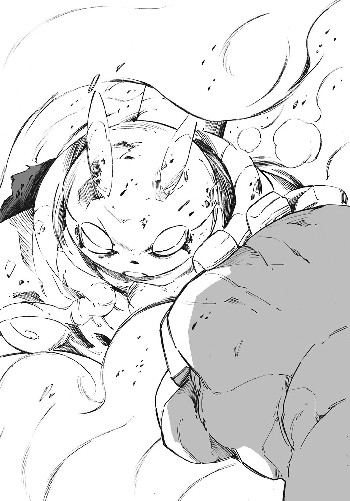
「帰れ」
死者に対して絶対的な命令はしかし、
「ッ！」
ジャッカルの右腕が不可視の力で弾かれるだけに終わった。〈屍王の指先〉による支配がスチーマーに届かず、それどころか拒絶されたのだ。
「馬鹿な......！」
ありえない結果に、ジャッカルは瞠目し驚愕する。
「無理だよ、ジャッカル」
「お前、自分の身体に何をしたッ！」
ジャッカルが眉を立てて怒る。スチーマーは自身の胸に左手をそっと当てると、
「ボクの魂の一部を液体化して死肉に染み込ませたんだ」
液体化した魂は血液のように、体内を巡って循環する。どれだけジャッカルの魔術が強力であろうと、魂はスチーマーのものなのだ。肉体の支配権も合わせて強くなった。ジャッカルの命令を無視できる程度には。
「魂の液体化、だと......！」
魔術を教えてもいないスチーマーに、そんなことができるはずがない。ましてやそれほどの魔術を行使できる存在など一人しかいない。
「......ラプラスか」
ジャッカルは恨めしげに呟く。自身の魂を液体化して瓶に詰め込んだ、あの女ならば可能だろう。
しかしスチーマーが肉体の支配力を強めたとしても、彼が死肉の身体を持っているという事実は変わらない。死を内包している以上、ジャッカルは魔術の力押しで彼を制御できる。
彼女の右手、〈屍王の指先〉は一秒に一〇〇〇以上もの死霊術を行使することが可能だからだ。質ではなく量で押し切れば、スチーマーはジャッカルの命令に従わざるを得ない。しかし今、重傷の彼女にはそれを行うだけの力はない。
「............馬鹿野郎」
ジャッカルは重い足を動かし、一歩を踏む。
「こんな所まで来て......。これじゃあ私が戦っている意味がないだろう」
ジャッカルはスチーマーの腹部に顔を埋めた。
「私が何年生きてきたと思ってる。一五〇年だぞ。たった五年しか生きていないお前にわかるか？ ずっとずっと独りで生きてきたんだ......！」
彼女の細い手がスチーマーの腹を叩く。何度も何度も叩く。
スチーマーの位置からではジャッカルの表情が見えず、トンガリ帽子と揺れる三つ編みだけしか見えない。
「それなのに、お前はなんのつもりだ。変な改造しやがって......そうまでして私から離れて......また私を独りにするつもりか」
スチーマーはジャッカルの魔術に抗うだけの術を手に入れた。一方通行な支配はできなくなったのだ。スチーマーは自らの意志を持ち、考え、動ける。それでは〝ジャッカルの使い魔〟とはとても呼べない。
ジャッカルは魔女だ。孤高であるが故に孤独。人は当然のごとく彼女を置いて移り変わり、時代すらも変わろうとしている。
蒸気機関の発明をはじめとした文明社会の発達は、魔女という存在を置き去りにするだろう。世界から断絶されたかのような錯覚をジャッカルは感じてしまっていた。気づけば彼女の隣にはスチーマーしかいなかったのだ。
失いたくない。
失う前に自身が消えてしまえば、どんなに楽かと思っていた。情けない感慨だと自嘲しながらも、無視できない。
スチーマーを叩くジャッカル。その姿は取り残され、孤独に震えて慟哭する少女のようでもあった。
「ジャッカル、それは違うよ」
少女の拳を受けながら、スチーマーは優しく語りかける。
「ボクは君を置いて前に進むわけではなく、君のあとに付き従うわけでもない。君と並び立つためにここにいるんだ」
そっとジャッカルの背を撫でる。
「ボクは君の友達だよ」
彼に言われるまでもない。無自覚のままに、ジャッカルはとっくに認めていた。スチーマーを一介の使い魔以上の存在だと。
「......それでも、お前は勝てない」
スチーマーではエーメットに勝てない。わかりすぎるほどにわかっていた。だからジャッカルはスチーマーを戦いの場から遠ざけようとしていた。
「いや、ボクは勝つよ」
スチーマーは断言する。ジャッカルは何かを言おうとしたが、しかしスチーマーは彼女を無視して振り返る。
彼の視線の先、エーメットと向き合う。彼女の傍らには、砕かれた拳を再生した人型ゴーレムとドラゴンがいる。
「ようやク、ジャッカルの使い魔がお出ましというわけカ」
エーメットはスチーマー達を鋭い視線で見つめている。彼らの会話が終わるまで悠長に待っていたわけではないのだろう。それどころか虎視眈々と隙を狙っていたはずだ。しかし、とうとう不意を突くことは叶わなかった。今のスチーマーはそれほどに、隙がない。
「使い魔じゃない、友達だ」
「どちらでもいいサ。私はジャッカルを殺せればそれで良いんダ。別にお前は逃げていいヨ」
そう言われても、しかしスチーマーは一歩前に出る。
「逃げると思うのかい？」
「思わないネ。いいじゃないカ、蛮勇は認めよウ」
人型ゴーレムが、スチーマーの行く手を塞ぐため前に出る。
スチーマーは岩石の巨人を見上げながら、背後にいるジャッカルに言った。
「ジャッカル、右腕を直してよ」
スチーマーが勝つと断言した以上、ジャッカルは彼の頼みを聞く他ない。
「......もう、壊すなよ」
ジャッカルは右手を振る。近くにいた二〇匹の死犬は途端に形を崩し、圧縮し、練られ、スチーマーの右腕に吸い込まれていく。
「ありがとう」
瞬時にできあがった腕を見て、機能を確かめる。鉄の装甲はなく、剝き出しの死肉ではある。だが問題はないと判断する。そして今一度、ジャッカルに振り返る。彼女は唇を嚙んで、スチーマーを止めたい衝動を懸命に堪えていた。
「大丈夫だよ。今のボクはとても強いんだから」
彼は軽い調子で言うと、ゴーレムと向き合う。
エーメットは不満げだった表情を改め、クスリと笑う。
「ドラゴンよりも強いのかナ？」
「もちろん」
スチーマーは迷いなく頷くと、両の拳を打ち合わせた。
「さながら姫を竜から守る騎士サマ......といったところカ。いいだろウ。じゃあ、やってみせるがいイ」
「だれが姫だ」
ジャッカルが口を挟むが、エーメットは大仰に首を振る。
「どうやら、お前は使い魔を戦わせたくはなかったようダ。どんな理由かは知らないガ、自分よりも優先する存在がいるなド、魔女としては失格ダ。森に引きこもる姫サマで十分だヨ」
「エーメットさん、それは違うよ」
スチーマーが即座に反論。
「ジャッカルは最高の魔女だ。ボクの力でそれを証明する」
「それじゃア、せいぜい気張るんだナ」
言って、エーメットは指を弾く。
同時に、岩の巨人と巨竜が大地を削り、疾駆した。狙いは黄の魔女が生み出した人造人間ただ一人。
「■■■■■■■■■■■■！」
岩の巨人が巨竜より先行して、スチーマーを襲う。
「見せてみロ、蒸気男。特別な策か力でもあるんだろウ？」
スチーマーは得体の知れない力を持っている、とエーメットは警戒しているのだろう。まずは人型ゴーレムを捨て石とするつもりらしい。
「特別なことなんてない。単純な出力差の問題だよ」
スチーマーの姿がかき消える。否、消えたかのように見えるほどの速度で前に跳ねたのだ。踏みこんだ足場は砕け、彼は二メートルを超える超特大の砲弾へと変わる。
彼は人型のゴーレムの胸部へと突き刺さるように飛び込んだ。正面衝突。二回り以上も大きな相手を、問答無用の力勝負に持ち込んだのだ。
「――！」
ジャッカルの目が恐怖に引きつる。スチーマーの性能をよく知っているからだ。彼は、とにかく強靭で迅い。だがゴーレムが相手となると話は別だ。圧倒的な質量の岩塊がスチーマーを粉微塵に吹き飛ばすだろう。
しかしスチーマーの動きに躊躇はない。
「今のボクは、昨日のボクの一〇〇〇パーセント以上の出力があるんだ」
衝突は一瞬。
装甲に覆われた左腕を突き出し、下からゴーレムの胸部を抉る。速度を維持したまま、岩の巨人を貫通。突き抜けて尚、速度を失わない。空を切って空高く飛翔した。
眼下、都市の全景すら見えそうな高度にまで彼は跳んだ。二人の魔女や、ゴーレムの巨軀がどんどん小さくなっていく。
スチーマーは身体の隅々まで行き渡る力を知覚する。乾ききった肉体が水を得ていくかのような安心感。この身体があれば、なんだってできるという全能感が脳を焦がす。
今までの自分自身がどれほど不自由な存在だったのか痛感し、苦笑すらしてしまう。死肉は生きた肉より質的なパフォーマンスがどうしても落ちるのだ。だが今は違う。魂の液体化によって、身体中にスチーマーの生きている部分が行き届いている。性能は爆発的に向上。その最大出力を容易に引き上げる。
「単に身体を思いどおりに動かせるようにしてもらっただけなんだけどね」
スチーマーの左腕は、想定外の過度な衝撃で装甲が吹き飛んでいた。剝き出しになった拳にはゴーレムの核となっていた白い小石を握り締めており、彼はそれを握り潰す。
小石が砂利へと変わる。地上、胸に大穴を穿たれた人型ゴーレムは核をなくし、崩壊した。
スチーマーが跳びゆく先は時計塔の側壁。それも時計のちょうど真上へと着地した。
身体を傾け、地面に向き合うよう張り着いた。着地の衝撃も凄まじい。スチーマーの膝は時計台にめり込んでいた。時計塔自体も折れそうなほどに軋む。砕け、弾き飛ばされたレンガが雪崩落ちる。
彼は右手で時計台の短針をメリメリと剝ぎ取る。
「ごめんね」
とりあえずの謝罪を呟いて、手に取った短針を投擲。
純正の鉛の針は投げ槍となって、風を切る。
狙いは正確だった。地上で佇む巨竜の左膝を貫き、地面へと縫い止めた。
「ゴオオオオオオオオオオオオオオオオオ！」
ドラゴンの咆哮。血が通わず、神経を持たないゴーレムに痛みはない。致命傷にもならない。だが誇りは傷つけられた。激昂する。許さぬ、降りてこい、殺す、と。
スチーマーは時計の長針も剝ぎ取る。
鉛の長針を手に持ち、先端を眼下の竜に向けて構える。
さながら悪竜を退治し、討滅せんとする騎士と剣のようで、
「君はとても強そうだ。ボクだって全力を出さなきゃいけない」
スチーマーはギシギシと両足をたわませて、死肉による高密度筋肉繊維を縮ませる。収縮はこれより起こる伸張の前兆。駆動に合わせて、体内で大量発生した熱が蒸気になって噴き出す。蒸気は時計塔の頂上部をすっぽりと包む勢いで広がった。
それだけではない。ジャッカルはスチーマーの変化に瞠目した。
「スチーマーの蒸気の......」
――色が変わった。
ラプラスによって液体に加工された魂すらも燃焼させ、蒸気に変えているのだ。
スチーマーを中心に蒸気が変色していく。柔らかな白は、深く静かな青へ――
「これから出す出力は――」
其は青空を焼き焦がす群青の陽炎。灼熱の蒸気を纏ったスチーマーは静かに猛る。
「――さっきの十倍。一〇〇〇〇パーセントだ」
スチーマーが時計台を足場にして、爆発するように跳躍した。
五〇〇〇馬力にもなる高負荷に耐えきれず、彼の両足が爆砕した。足場にされた時計台も粉砕。時計塔そのものが砕け折れた。一瞬、塔は形状を花弁のように変え、すぐに重力に引きずられる。膨大な石礫の暴雨が地上に注いだ。それらは道を、広場を、家を、容赦なく叩き潰すだろう。
しかし、あらゆる残骸よりも真っ先に堕ちる存在がいた。スチーマーだ。
長針を突き出し、蒸気の尾を曳いて迫り堕ちる。スチーマーは不可避の魔弾と化す。
ドラゴンは動けず、飛来する彼を迎え討つしかない。
「ゴオオオオオオオオオオオオオオオ！」
咆哮する岩の巨竜。受け止め、必ず粉砕してみせるとの決意の表れだ。
刹那という表現にも満たないほどの時間。彼我の距離は残り三メートルまで埋まる。
勝利を確信するエーメットは口を吊り上げる。
結末に恐怖するジャッカルは唇を強く嚙む。
激突の寸前、世界が割れそうなほどの衝撃を前に、ドラゴンが真っ先に動いた。
竜は短針によって貫かれた左膝を無理矢理動かす。負荷に耐えきれずに爆砕したが、気にしない。身を捻り、尻尾を動かす。竜の身に劣らない猛々しい尾だ。そして尻尾の先は鈍い光を放っていた。
「砕け散レ！」
エーメットの歓喜の声が響く。
ドラゴンは身体中に金属片を纏っていた。だがそれだけでは一直線に落下してくるスチーマーには対応できない。だから竜型ゴーレムの構成材質の一部である金属片を尾部に収束。尻尾の先に、人間大の球体と禍々しい棘を生成した。
まさに特大の星球凶器。ドラゴン本体の耐久性を下げながらも、破壊力を増強させたのだ。
そして現状、落下とともに突進するスチーマーは避けることができない。
ドラゴンが尻尾を振れば、質量と遠心力をかけ合わせた爆発的な威力が生まれる。人であろうと、化物であろうと、悉く粉砕してみせるだろう。スチーマーとて例外ではない。
ジャッカルは悲鳴をあげようとして、しかし唇を強く嚙む。掌を血が出るまで強く握り締める。スチーマーはもう、彼女の使い魔ではない。彼女に抗うことを可能とし、その上でジャッカルと対等でありたいと語った少年だ。
ジャッカルがすべきは目を瞑って震えることではない。恐怖の悲鳴をあげることでもない。彼女はスチーマーの背を押すように――。
「そのトカゲを叩き潰せ！」
同時に、ドラゴンの尻尾が放たれ弧を描く。尻尾の尖端、禍々しい形状の鉄球が加速する。大気を割り、音の速度をすぐに超える。
スチーマーも呼応して動いた。背部から群青色の蒸気が再噴出。悲鳴にも似た金属の響きをあげて、身を捻る。重力に引かれ続ける空中は身動きが容易ではない。だから蒸気のジェット噴出をしたのだ。作用するエネルギーとしては、大したものではない。せいぜいが落下方向を数十センチ修正する程度。尻尾の直撃は免れない。
だがスチーマーにとっては、それで十分。
轟、と迫る尻尾。その先端の鉄球がスチーマーの頭部に直撃。破砕される兜。飛び散る死肉。乱れる蒸気。
ドラゴンは尻尾を振り切った。しかしスチーマーは依然として鉄の長針を握り締めていた。その身体には依然として力が漲っている。
スチーマーはわざと頭部に攻撃を受けたのだ。彼の脳はそこにはないのだから。
肉を切って骨を断つ。切らせるだけの肉なら、スチーマーには大量にある。
既に互いの距離は三〇センチ。
竜は大口を開けて迎える。ズラリと並ぶ牙を震わせ、最後までスチーマーを殺そうと猛り狂う。
「――！」
高質量の物体同士が衝突した。
激震と轟音。発生した衝撃波は颶風を生み、周囲一帯を薙ぎ払う。砕けた石畳が家屋に突き刺さり、その家屋も根こそぎ剝ぎ取られる。破壊の連鎖が続き、超級のドミノ倒しを演出する。破砕された建造物が残骸へと変わり、怒濤の打音を連鎖させた。
鼓膜を引き裂かんばかりの狂騒曲が奏でられる。
近くにいたジャッカルとエーメットはもろとも吹き飛ばされる。
「ッ......！」
ジャッカルは吹き飛ばされながらも、なんとか地面にしがみつく。姿勢を低くして、爆圧によって叩きつけられる烈風をなんとか凌ぐ。頭上をガス灯の破片が掠め飛んでいった。彼女は辛うじて開いた目で、人造人間と竜の結末を見る。
砂塵が舞い、ドラゴンがいた地点には隕石が落下したようなクレーターが刻まれていた。飛び散った塵芥と白煙で、周囲は灰色に染められている。クレーターの最深部。中央地点にいたであろう岩の巨竜は跡形もなく消し飛んでいた。時計の長針は半ばまで折れて、地面に突き立っている。
長針の傍にはスチーマーが横たわっていた。四肢が衝撃に耐えきれず吹き飛び、残った身体の部位も悲惨な有様だ。
彼はドラゴンにやられたのではなく、自らの強大過ぎる出力のせいで自壊したのだ。
「あは......は......もう、何も、動かせない......や」
スチーマーの残った胴体部から弱々しい声が漏れる。
「この大馬鹿野郎......！」
エーメットのことなど忘れ、慌てて駆け寄ったジャッカルがスチーマーに触れる。熱い。彼の超出力の運動が火傷をするほどの余熱を生んでいた。しかしジャッカルは熱で身を焦がすのを無視して、彼の胴体部をこじ開ける。体内から蒸気が噴き出す。
ジャッカルは煙をかき分けて、蒸気の先にあるものを摑む。
「ッ......あああああ！」
彼女の両手になんとか収まるほどの鉄製の球体。それを胴体部から引き抜いた。
球体にはスチーマーの脳が入っている。彼が持つ唯一の生きた部分。これが死んでしまえば元も子もない。
球体も当然、熱されている。しかしジャッカルは火傷の苦痛を無視して怒号した。
「許された出力の範囲内で戦え！ 蒸し焼きになるぞ！」
鉄球から声が発される。
「ご、ごめん。でも、こうでもしないと勝てないから......」
スチーマーの謝罪に、ジャッカルはぶんぶんと首を振って三つ編みを揺らす。
「駄目だ、許さない。本当に許さないんだからな......」
ジャッカルは鉄球を抱えたまま、その場にしゃがみ込んで動かなかった。
「そんナ......」
エーメットは茫然自失。震える声とともに立ち尽くす。
岩の巨竜はエーメットの作品の中でも最高傑作の一つだった。それを相打ちに近い結果とはいえ、打倒された。
「......ありえなイ」
認められず、歯軋りする。
「ありえないだろウ！」
エーメットは小石を取り出す。ゴーレムの核となる小石を放ろうとして、
「往生際が悪いわね」
含み笑いの混ざった声がエーメットの頭上から響く。同時に彼女の膝が崩れ、顔面から地面に叩きつけられた。白蠟の美貌が土に汚れる。
「だからこその魔女だとは思うけれどね」
「くっ......ラプラスカ！ こうなるまで隠れていたナ！」
土の味を嚙みしめながらエーメットが呻く。うつ伏せに倒れた彼女の背にリーフォンが跨り、彼女の腕を捻って固めていた。
「貴方の強欲で行動的なところは評価するけど、ちょっと視野が狭いのが問題よねぇ」
「液体風情に視野をどうこう言われたくなイ」
「どういたしますか、ラプラス様」
戦いの最中に隙を窺い、見事エーメットの無力化に成功したリーフォンは問う。
ラプラスは悩むように呻く。しかし彼女にとって答えは始めから決まっている。彼女は無意味に選択を渋るだけだった。
「そうね～、どうしましょうか」
選択を下せる側だけが味わえる愉悦に浸りながら、答えを出す。
「うん、反省してもらいましょう」
エーメットの顔、そのすぐ右隣に鈍色の光が突き立つ。
リーフォンが隠し持っていた小剣だ。そしてエーメットの白い長髪が紅に染まる。
「――！」
言葉にならない悲鳴。そして零れ落ちる小さな肉片。
「安心しなさい。片耳を削いだだけよ」
リーフォンがそっと彼女の拘束を解く。エーメットはよろけながらも何とか立ち上がり、右耳を押さえて呻く。
「いい授業料になったでしょう？ 今度はちゃんと考えてから行動してね。私だって貴方を殺したくはないの。貴重だし興味が尽きないし」
ラプラスの言葉には余裕と喜悦が混じっている。
エーメットはリーフォンとラプラスを睨みつける。
「ッハハ......ハハハ......アハハハッ！」
彼女は横顔を鮮血に染め、痛みに震えている。だが気丈に笑ってみせる。
「あら、壊れちゃったの？」
「なに、大丈夫サ。殺されずに生き永らえさせてもらっていル。実に屈辱ダ。身体中を搔き毟りたイ。だが、せり上がる胃液を味わいながらモ、お前には感心しているんダ」
「感心？」
「やはり、魔女は生半可じゃなイ。〈五色の魔女〉ならバ、そうでなくてはならなイ。それでいイ」
ラプラスが呆れ気味の口調で返す。
「魔女は縛られず、自らを絶対として自由を求める。でも貴方は魔女という言葉に捉われすぎじゃないかしら。魔女の在り方に忠実にあろうとして、魔女の理想像に縛られているのよ。自縄自縛のその姿、矛盾しているし滑稽よ？」
「キャハハハッ、何かに捉われなければ生きていけなどしなイ。昔も今もこれからも、ネ」
エーメットは白髪をそよがせ、堂々と去っていく。敗走しているはずの彼女は、ひどく優雅で魔女的だった。
隙章
首都ミョールの中央に構えた大宮殿。その深奥、宰相の執務室でデルフィニウム・セザールが眉根を寄せて、渋面を作っていた。
部屋の外では、衛兵が慌ただしく走り回っている。加えて王の側近である臣下の多くは、ほとんどパニック状態だった。
それも当然のこと、ジャッカルとエーメットが王宮の近くで暴れ回ったからだ。あげくの果てには宮殿の隣に建つ時計塔をへし折る始末。崩壊した時計塔が落ちて宮殿の一部を叩き潰したことは、もう酷い悪夢だと考えたかった。
「不幸中の幸い......時計塔は王の居室と正反対の位置に落ちてきたが」
セザールは呻くように呟き天井を見上げる。宰相である人間の部屋に相応しく、細やかな装飾が彩る天井が夜空の星のように広がる。
セザールは魔女同士の戦いが、どのような経緯を経て決着がついたかを聞いた。
「............ままならんな」
一人呟き、
「そりゃそうだろう」
「ッ！」
セザール以外に人はいないはずの室内。言葉を返してくる者がいることに驚く。
「ここに私がいて不満かい？」
黄の魔女、ジャッカルだ。ニヤけながら執務室の扉の前に立っている。彼女の両手には、スチーマーの脳が入った鉄球がある。
「魔女と同じ部屋にいて、不快じゃない人間がいるものか」
セザールは見慣れない鉄球を訝しんだ視線で見つつ、問う。
「なぜここに来た......？」
どうやって王宮に入り、ここまで来た？ とは聞かない。この慌ただしい状況では侵入は容易く、それでなくとも魔女の行く手を防ぐことのできる存在などどこにもいない。邪魔をしようものなら、その人間は間違いなく不幸な目に遭うだろう。
「なに、『〈五色の魔女〉はこれから西に向かう』そう伝えに来た」
ジャッカルはそれだけ言って背を向ける。部屋から出ていこうとして、
「待て、それだけではないはずだ」
セザールが彼女を呼び止める。
「白の魔女と私の密約を知ったのだろう。なぜ私を殺さない」
エーメットは黒の魔女の死を利用して、他の〈五色の魔女〉の力を手に入れようとした。しかし発案者がエーメットだとしても、〈五色の魔女〉の会合を開き、計画のための舞台を整えたのはセザールだ。
セザールとて、ただ待つだけで利を得られるなどとは思っていない。エーメットが他の魔女を殺したあと、体力を消耗して一人残ったところを殺すもよし。コントロールしやすくなったと考えて彼女に媚びへつらうもよしのつもりだった。
だが結果は違った。万全の準備をしつつ不意打ちをしたというのに、エーメットは敗退した。
セザールは、これから手負いのジャッカルとエーメットをどうするべきか考えていたのだ。とはいえ、ラプラスとコロナはいまだ健在。下手に魔女達に手を出せば、国そのものが滅ぶ。
ジャッカルが首だけを傾けてセザールを笑う。
「エーメットはお前を利用していたつもりだろうが、お前もエーメットを利用していた。どっちもどっちだな」
「おかげで酷い目にあったね」
彼女の抱えている鉄球が苦笑気味に呟く。
「はっ、まったくだ」
ジャッカルは包帯の巻かれた腹を撫でる。
「だが私は怒らない。優しいだろう？ お前達と互いに不干渉という約定を律儀に守ってあげたりする」
ジャッカルの表情に邪悪な笑みが貼りついている。
「だからこれから起こることは仕返しでも何でもなく、単なる悪戯だ」
「何が言いたい」
セザールの問いに、ジャッカルは扉の先を指差す。
「実に賑やかじゃないか。何かのショーでも始まるのかねぇ？」
言われ、セザールの背筋に怖気が走った。あれから二時間。騒ぎの真っ只中だが、いくらなんでも長く騒ぎすぎだった。彼はジャッカルを通り越して扉の先に走る。走って走って、王宮の正門が見える窓に張りつく。
「なっ......！」
目を剝いた。
王宮正門前に立つ数百本の赤い旗。血が滲んだような色の旗がゆらゆらと風に揺れ、深紅の海をつくっている。目が焼かれそうなほどに鮮烈な色の暴力。セザールは啞然として、その正体を呟く。
「赤布......だと」
反乱分子だとセザールが認め、魔女達に一掃させたはずの組織。
なにが起こっているのかはわかる。暴動だ。数百はいる人間達が、差別の撤廃を訴え、王制を崩そうと怒り狂っている。
セザールは数百人の集団の先頭付近に、見知った顔がいることに気づく。
「アドルフ、といったかな、あの男は。赤布の一員だそうだな」
ゆっくりと追いついてきたジャッカルが楽しげに言う。
セザールが振り向き、引きつった表情で睨む。
「あの男は、お前への使者に送ったはずだ。殺したというのは噓か！」
ジャッカルは笑みを変えず、それをもって肯定とした。
「奴に何を吹き込んだ！」
「〈五色の魔女〉について教えてやった」
それはヤルングレイプの暗部。魔女と国の歪んだシステム。不確かで危険な防衛装置を国民が許すはずがない。セザールの赤い顔が青ざめていく。
「き、貴様......」
「そういうわけで、正義感に燃えた男は国に戻って、反乱分子としてお前の前に立ったとさ。めでたしめでたし」
「なぜ......お前にはそこまでする義理はなかったはずだ！」
「たしかに義理なんてない。人の命は等価であり、どいつもこいつも塵のようなものだと私は思ってる」
「それならば......！」
「殺すと思ったか？ 私を誰だと思っている。魔女だぞ？」
魔女は不確定性の悪意だ。彼女達をコントロールできる人間などいない。
「アイツは生かしたほうが面白くなるに決まっているじゃないか」
ジャッカルはアドルフを殺さず、ここまで連れてきた。
「アドルフの身上を聞いた時にピンときた。コイツは本当に小さいが火種になるってね。国が兵を使ってわざわざ捕らえたんだ。奴は赤布でもそれなりの立ち位置なのだろう？」
「だが奴一人では塵も同然だった」
全てをコントロールしようとして、失敗した男は呻いた。実際にアドルフは〈赤布〉では有力な幹部だった。無視できないと判断したから捕らえたのだ。
「そこがお前の間違いだよ、セザール。塵だって集まって火がつけば粉塵爆発くらいは引き起こせる。この暴動はどんどん燃え広がる。現に目の前でこうして、な」
〈五色の魔女〉の存在は上級貴族しか知らない。そして昨今の技術革命によって富を手に入れた一般市民は王制に不自由を感じ、強い不満を持つほどになってきている。
セザールはロウスを差別対象にして、市民のガス抜きを図ったが十分ではなかった。隣国との緊張関係も改善されないまま、体制側にとって不安定な状況が続いていた。
暴動が起きる条件は、十分すぎるほどに揃っている。
セザールは怒りに震え、眩暈すら覚えた。
「暴動の炎はこの国だけでなく、貴様の身すら焼くぞ！ 奴らが〈五色の魔女〉など認めるはずがない！」
ジャッカルは喫茶店を襲撃し、店内で会合を開く〈赤布〉を皆殺しにした。恨まれるには十分な理由がある。
〈五色の魔女〉を認め、利用していたセザールの体制を揺るがし、自らの首を絞めかねない行為をしておきながら、しかしジャッカルは余裕の表情だった。
「そうだろうな。お前がいるからこそ、〈五色の魔女〉のシステムが成り立っていると言ってもいい」
「ならば――」
「セザール、もうヤルングレイプは終わりでいいんじゃないかな？」
ジャッカルはセザールの言葉を途中で切って捨てた。
「お前の国が古い時代の存在でないのかどうか、私に示してみせてほしい。アドルフを殺すもよし、〈赤布〉の集団を鎮圧するもよしだ。だが時代の変化がすぐ傍まで来ているのは確かだ。寂しい気はするが、もう頃合いだとも思う。私はちょっとだけ手心を加えて、それを早めてやっただけだ」
セザールは〈五色の魔女〉を謀ろうとした。だが逆に、無邪気な好奇心を暴力的なまでに叩きつけられてしまった。魔女などに、もとから触れるべきではなかったと痛感して歯軋りする。
「未知の物ばかりを追う魔女らしいセリフだな......！ たとえ連中が革命を起こそうとも、世界が変わろうとも、もうお前の居場所はない！」
「居場所ならあるさ。いや、正確には〝あった〟だな」
ジャッカルは落ち着きを得た静かな声で言うと、鉄球を撫でて微笑む。
「さて、今すぐにでも西に向かわなきゃならないから、ここでさようならだ。次に会う時まで首が繫がっているといいな」
言い残し、ジャッカルは立ち尽くすセザールを置いて去っていく。
セザールの怒号が彼女の背を叩く。
「私は老いれば死ぬ......だが貴様はどうなる？ どう在る？ いつまでもそうやって人間を見下ろして傍観者を気取っているつもりか！」
ジャッカルは振り返らず言う。
「そのとおり、私は魔女だ。今も昔もこれからも、だ」
エピローグ
西の最果て。ヤルングレイプ国が接する大海が広がっている。生命の母とまで言われる海は、しかしどこか寂しい。人間が近づかないどころか海鳥の姿さえ見えない。渺々とした青と、空虚なさざ波の音だけがある。
〈暗黒海峡〉。
ミョールから列車で二日、馬車で三日かかる異端の地だ。ヤルングレイプ国が、海の先からの侵略を恐れて、黒の魔女を配置した要所の一つである。
陽が沈みかけの大海。紅い夕焼けが海を照らし、浜辺を炙る。
「相変わらず寂れた海だな」
ジャッカルは海原を眺めている。両手にはスチーマーの脳を収めた鉄球を抱えていた。
「魔女がいなくても、ここが〈窯〉であることに変わりないわ。まともな感性の人間なら未来永劫近づきたくはないでしょうね」
ジャッカルの背にラプラスが声をかける。
「今更ながらの問いだが、なんでお前までいるんだよ」
ジャッカルが振り返ると、そこには瓶に入ったラプラスを抱えるリーフォン、そして彼に肩車をしてもらっているコロナがいた。
コロナは自分のことを指摘されているのだと数秒してから気づく。顎先に細い指を当て、
「えー、駄目なの？ ジャッカルは私のこと嫌いになったの？」
「ああ、嫌いだね。あと五〇年は嫌いだ。お前のせいで腹に風穴が空いたんだからな」
「ちゃんと穴は塞がったんでしょ？ ならいいじゃない」
「うるせーよクソガキ。お前も穴開きチーズみたいにされてぇか」
自分の腹を指差して眉を立てるジャッカルに、ラプラスが「まあまあ」と言って割って入る。
「いいじゃないの。ミョールを出るまで『セザールが変な気を起こさないように見張っておいて』って私がコロナちゃんに頼んでおいてあげたのよ？」
ジャッカルが渋面を作る。
「たしかに......。このクソガキがいなけりゃ、怒り狂ったセザールが兵隊を寄越してきたかもしれんが」
少なくともジャッカルは、怪我のせいで消耗していたし、スチーマーも肉体を壊してしまった以上、なにもできないに等しい。
「でもそこはセザールだって予想していたでしょうね。手負いの魔女がいようと、兵隊を寄越してこなかったセザールはさすがというか、小心者というか」
リーフォンの肩から降りたコロナが、ラプラスの入った瓶をノックするように叩く。
「ねえねえ、そんなことよりもさー。ここに来るまで守ってあげたんだよ？ だからねー」
「はいはい、コロナちゃんは海に来たかったのよね？ じゃあ、あっちの浜辺で一緒に遊びましょうか」
ただ海を見て遊びたい。護衛の要求に対してコロナの条件はそれだけだった。子供らしい無邪気さで、徹頭徹尾周囲を振り回した少女。最後の望みも実に子供らしい。
「ほら、お兄ちゃんも早くー」
「しょ、少々お待ちを」
リーフォンがコロナに手を引かれて、あたふたと歩き出す。
「ま、そういうことだから。あとはジャッカルとスチーマー君で好きになさい。貴方としては、そのためにこの〈暗黒海峡〉に来たようなものでしょ？」
ジャッカルが口を尖らせて返す。
「なんか上から目線だな。ムカつく」
「あら口の悪い。この空気の読めるお姉さん魔女に感謝しなさいよ」
ジャッカルは片眉を立てて、ラプラスを持つリーフォンに駆け寄る。
「ちょっと貸せ」
ジャッカルはそう言って、ラプラスの入っている瓶をふんだくる。そして、
「ふんっ！ ふんっ！ ふんっ！」
鼻息を荒くして、手に持った瓶を力いっぱい上下に振った。瓶の中のラプラスが高速でシェイクされる。
「あらららら――ああああああああ――ああああ！」
ラプラスの悲鳴。ひとしきりラプラスをシェイクしたあと、ジャッカルはラプラスの入った瓶を投げてリーフォンに返す。
ラプラスはグルグルと渦を作りながら呻いている。液体でも目は回るようだった。
「ちょっと、なにするのよ......酷いんじゃない？」
ラプラスの抗議にジャッカルは鼻を鳴らす。
「うるせぇ、勝手にスチーマーの身体を弄った報いだ」
ジャッカルは彼女達をうっとうしそうに手で払う。
「とっとと海に行っちまえ。なんなら流されてしまっても構わんぞ」
素直じゃないわね、とぼやきながら去っていくラプラス達。ジャッカルはスチーマーを抱えたまま、彼女達とは反対方向に歩む。
さざ波の響く砂浜を、ゆっくり一歩一歩踏み進める。
「ジャッカル、怪我が治りきっていないのに歩いても大丈夫なの？」
彼女に抱えられたスチーマーは吞気な調子で聞く。
「なに、歩くだけなら問題ない。お前の身体があれば、背負ってもらったりできたんだがな」
「身体をなくしちゃったのは申し訳ないけど......ちゃんと直るよね？」
スチーマーが恐る恐る聞くと、ジャッカルは一笑に付す。
「ハハハッ、森に帰れば直るさ。脳ミソが残っている限り、身体の代わりは幾らでも造れる」
「そっか、安心した。いつまでもこの有様は格好悪いもんね。だいたい、ジャッカルにずっと抱えられっぱなしだし......ねぇ？」
「あ、文句あんのかよ」
「そりゃ、ジャッカルがテディベアでも抱えてるのなら可愛いし面白いよ？ でもボク見映えしないし」
仕方ないとはいえ、スチーマーは四六時中ジャッカルに肌身離さず抱えられっぱなしだった。彼女が寝る時にも、ぬいぐるみのように抱き締められて夜を過ごすのは過剰な気がした。
「......友達は大切にするもんだからな」
ジャッカルはそっぽを向いて、小さく誰にも聞こえない声で呟く。
「ん、どうしたの？」
「ふん、どうもしねーよ」
スチーマーの問いに、ジャッカルは鉄球を掌でぺちぺちと叩くだけだ。彼には意味がわからない。わからないからこそ、長々と考えることはしない。さっさと話題を変える。
「そういえば、エーメットさんは大丈夫なのかな」
ジャッカルは小さく噴き出す。皮肉たっぷりの表情を浮かべ、
「ッハ、殺されかけておいて心配とは泣かせるね。アイツなら今頃は北の奥地に帰って拗ねているだろうさ」
「心配じゃないの？」
ジャッカルは迷いなく首を振る。そして断言した。
「〈五色の魔女〉が片耳を削がれた程度でどうにかなるはずもない。誰かがどうにかできるはずもない」
「そんなものなのかなぁ......。エーメットさんの耳を拾ってたのはなんで？」
「そりゃ、捨てておくのももったいないだろう？」
ジャッカルは口端を吊り上げる。
「防腐処理までして保存してやってるんだ。然るべき医療技術が整う時代が来れば、耳を付け直せるだろうさ」
「へぇ、意外と優しいんだね」
スチーマーの評価にジャッカルは胸を張る。
「そうだろう？ あの耳に手足を生やしてエーメットに送りつけてやろうか検討中だ」
「訂正するよ。ジャッカルは悪趣味だ」
言っている間に、彼女達は浜辺のとある地点に着く。ジャッカルが足を止め、目前のソレをじっと見つめながら言う。
「スチーマー、一つ聞こうか」
焼け焦げた大量の木材が散らばっていた。吹きつける海風で朽ち果てつつある建造物の名残。焼死したとされる黒の魔女の家だった。
「この場所に見覚えは？」
「見覚えは、ないよ」
スチーマーは思ったままを率直に言った。
「ここが黒の魔女の家？」
「ああ、そうだ」
ジャッカルが小さく息を吐く。それ以上何も言わない。否、言えない。言葉を続けるのを躊躇っていた。
黒の魔女の死について、彼女はここに来るまでほとんど話さなかった。話すことを避けているようでもあった。
だからスチーマーも、黒の魔女について尋ねなかった。
しかし今は違う。全ての起点が目の前にあるのだ。しかしジャッカルは話そうとして、話し出せずにいる。だから最初の一歩は自分が進もう、とスチーマーは思い、
「ラプラスさんがね、聖痕について教えてくれたんだ。ジャッカルはミョールに来るまで、聖痕の存在すら知らなかったんだってね」
聖痕はヤルングレイプ国が全国民に強いた刺青だ。身分を示し、血筋を示す。だから聖痕は、生まれたばかりの子供から死ぬ寸前の老人、ロウスから王まで持っている。
ジャッカルは何も答えない。だからスチーマーは言葉を続ける。
「ボクだって、人間としての肉体を持っていた時があったんだ。五年前、ジャッカルに東の森で拾われた赤ん坊の頃」
小さな手足を持つ無力な生き物には、聖痕が彫られていたはずで、
「ジャッカルがボクに彫られていた聖痕に気づいても、おかしくなかったんだよ」
だが、ジャッカルは聖痕を知らなかった。
スチーマーは間を置いて、
「ジャッカルが知らないってことは......ボクには聖痕がなかったんだよね？」
ジャッカルは頷くと、自嘲の表情で俯く。
「ハハハ、世俗の流れに疎いことが仇となったな」
「じゃあ、ボクは何者なの？」
ジャッカルは目をゆっくりと瞑る。
「推測にすぎないがな......」
唇を固く引き結ぶと、一息に答えた。
「お前は黒の魔女の子だよ」
スチーマーは驚かず、ただ言葉を受け止める。
聖痕を持たない者など限られている。全てから自由でありたい、縛られたくない。そう願い行動してきた者達だ。
〈五色の魔女〉ならば聖痕を持たない。その息子ならば国から聖痕を彫るよう強制もできない。そもそも黒の魔女に子供がいたなどと、他の〈五色の魔女〉ですら知らなかっただろう。
「最初はね、お前を殺そうかと思った」
ジャッカルが静かに独白する。
「衰弱死寸前のガキが森に転がってるんだ。肉体は既に死にかけ。助かる見込みもなし。どうせなら殺して、死者として利用しようかとも考えた。だがな......」
彼女は額に右手を当てる。
「お前を初めて見た時、チラついたんだ。アイツの顔が......」
五年前、死にかけの赤ん坊の顔を覗き込み、突然脳裏をよぎった黒の魔女の姿。
「びっくりするくらいに似ていたさ。直感でお前が何者なのか確信した。だからなのかな、どういうわけか......お前を殺せなかった」
ジャッカルは黒の魔女を思い浮かべる。その時の彼女は、赤、青、白のどの魔女に対しても浮かべない表情だった。まるで郷愁に想いを馳せるようで、
「ジャッカルにとって黒の魔女ってなに？」
「そうだな......あの女は世間一般の認識で、私の『姉』と呼称される存在だ。血も繫がってる」
「ジャッカルが妹で、姉妹で魔女だったってこと？」
「そうだ」
ジャッカルは苦笑とともに頷く。
「こんな西の果ての海で、何をしていたかなんて知らない。興味もない。だが間違いなくアイツは天才だった。人間として悲劇的なほどに、な」
百年以上前の昔話。ジャッカルにも、姉を追いかけて慕っていた子供時代があった。妹が姉を慕う。どこの家庭にあっても、なんらおかしくない仲睦まじい光景だ。
問題があったとすれば、姉妹は互いに魔女として高い適性を持っていたことだ。
自由を求め、自らの求道に生きるのが魔女だ。目的のためには肉親など取るに足りない存在となる。互いに魔女ならば争い、殺し合うことすら十分にあり得る。
当然のように、姉妹は魔女として別々の道を進んだ。
姉はひたすら前を向いて邁進した。妹は僅かに振り返り、血の繫がりを無自覚ながらも惜しんだというだけの話。
姉妹の想い。その違いがジャッカルの選択を覆した。ほんの僅かだが、姉との繫がりを錯覚してしまった。だから赤ん坊だったスチーマーを死なせずに生かしたのだ。
「今考えてみれば、あの女は私の無自覚な思いすら見透かして、私がスチーマーを殺さずに生かす、という選択を選ぶことを確信していたのかもしれない」
ジャッカルはスチーマーに死肉の身体と鋼鉄の装甲を与えた。彼女の魔術に耐え、人造人間になって尚揺るがない胆力。更には、たった五年で言葉を覚え、思考する知性。ミョールでは、ラプラスによって魂の液体化までされた。強い魔術適性があってこそのことだ。
これらの要素を並べると、奇跡などと安易な言葉では呼べない。彼には黒の魔女の血が通っていると断言すらできる。
「それじゃ、どうしてボクはジャッカルの森に捨て置かれたんだろう。それも死にかけで......」
「それを考えるには、五年後の今を考えてみる必要がある」
ジャッカルは砂浜に胡坐をかいて座る。視線は焼け落ちた小屋に向けられたままだ。彼女は淡々と言葉を紡ぐ。スチーマーには、必死で心を殺しているかのようにも感じられた。
「どうして黒の魔女が死んだか、だ」
「黒の魔女の死因、ラプラス様はもうわかっているのではないのですか？」
浜辺、波が届くかどうかの位置で、ラプラスの入った瓶を抱えたリーフォンが尋ねた。
彼らの前では海水に足首まで浸かって、踊るようにはしゃぐコロナの姿がある。赤髪のツインテールが彼女を追って揺れている。夕陽を背景にした少女は、どこか神秘的ですらあった。
「簡単なことよ。ただ引き算をしただけ」
ラプラスは笑みを含んだ声で言う。
「〈五色の魔女〉を斃すには〈赤布〉程度じゃ力不足。セザールの率いる政府でも殺せない。海の向こうの国が刺客を寄越して殺したのだとすれば、この混乱に乗じて行動を起こすはず。だけどそれもない」
コロナが白く細い足を振り上げて、海水を飛ばす。リーフォンは飛沫に当たりそうになって、僅かに身を反らす。
「あら、貴方だって一緒に海で遊んできていいのよ？」
「いえ、結構です」
「フフフ、相変わらず堅いのね」
リーフォンは無言をもって、ラプラスに続きを促す。
「残る容疑者は〈五色の魔女〉。でもジャッカルは黒の魔女に、その生来故の苦手意識を持っている。コロナちゃんに計画的な犯行はできないし、エーメットは単に彼女の死を利用して私達を襲っただけ」
「それならば......」
「そう、自死よ」
「黒の魔女が自殺したと......？」
リーフォンはラプラスの従僕だ。魔道を歩んでいるわけではない。だから百年以上を生きた魔女が、今更自殺したという話に違和感を覚える。あまりにも呆気ない。
「あくまで推論の範疇。でもミョールに来たことで動機は想像がついたわ」
ラプラスはスチーマーの出自を聞いた。聖痕の存在をジャッカルが知らなかったことも、だ。彼女は既にスチーマーが黒の魔女の息子だと予想がついていた。だからこそ魔女としての思考の末に結論を見出した。
「それは、育児よ」
リーフォンが眉を歪める。ロウスとして生き、物心ついた時から親という存在がなかった彼でも、育児がどういうものかわかる。
「理解できないかしら？ 自殺をもって育児とするその意志が」
青の魔女は言葉を続ける。
「自身の子に望むは成長。自分を超えた存在を生み落とすのが、種としての本能だから当然よね。親が魔女ならば、息子をわざわざ人間の枠に収める必要はない」
リーフォンの目の前には自身を液体に変えた魔女がいる。そんなラプラスと同格である〈五色の魔女〉なら、十分にあり得る話をラプラスは紡ぐ。
「スチーマー君の魔術適性は十二分。黒の魔女は他の魔女の魔術も探っていたけど、それも段取りの一つ。ジャッカルに瀕死のスチーマー君を送りつけ、彼が人ならざる不死の身体へと変わったのは黒の魔女の計画でしょうね」
魔女の計画はそれだけで終わらない。
「スチーマー君は魔道の素質と異形の身体を揃えた。だけど彼の成長のために必要なことは、まだ残っている」
リーフォンは考えるまでもなく答える。
「彼はまだ幼い。必要なのは『経験』ですね」
「そう、あの魔女は予見していたの。セザールとエーメットが自分の死を利用するだろうってね。......もしかしたら私がスチーマー君に興味を持って手を貸すことすらも、既定路線だったのかもしれないわ」
「息子を瀕死に追いやり、ジャッカル様を利用して怪物に変える。最後には自身の死をもってラプラス様の力と経験を与えた。全てが黒の魔女の自作自演、ということですか」
自分の命を天秤にすらかけない魔女の育児は、あまりに歪で非人道的。
「命を育てるのではなく、利用したと言うほうが正しいのかもしれないわね」
腕が千切れ、中身を弄られ、身体全てが吹き飛んでも、駆け続ける鋼鉄の人形。スチーマーを思い浮かべ、
「振り回されたスチーマー君は不憫としか言えないわ。酷な話よね」
ラプラスにしては珍しく、発する言葉に悲哀と同情があった。
「だけど彼らは生きている。死人の掌の上でいつまでも踊り続けるつもりはないでしょう。これから、どうするつもりなのかしらね？」
期待と好奇の想いを込めて、ラプラスは笑った。
「ありがとう」
スチーマーはまず礼を言った。
「な、なんだよ」
ジャッカルが戸惑って頰を搔く。
「全てを話してくれたことに、だよ」
「......なんとも、思わないのか？」
ジャッカルとしては、スチーマーが相当なショックを受けるのではないかと考えていた。だが彼に落胆の色はなかった。自分の母親が魔女だと聞かされたというのに。
スチーマーは小さく笑って返す。
「そりゃ、自分の親が中々の外道だっていうのは、笑いのネタくらいにはなりそうだね」
しかし、と彼は言葉を続ける。
「そんなことは正直どうでもいいんだ。だからこそ今言うべきは、やはり『ありがとう』だよ」
「感謝されるいわれはないぞ」
「隠しごとがなくなって、これでボクとジャッカルの間を隔てるものがなくなった。ジャッカルが話してくれたから、全ての壁を取っ払えたんだ。感謝もするよ」
ジャッカルは頰を緩めそうになる。しかし口を真一文字に引き結んで、自らを律する。
黒の魔女の息子であるスチーマーこそが、黒の遺産と呼ぶにふさわしい。エーメットが知っていれば、当然のようにスチーマーを狙っていただろう。だからジャッカルはスチーマーとエーメットの接触を避けたがった。
「......私がお前をここに連れてきた理由、まだ話していなかったな」
ここから先、放つ言葉の一つ一つに痛みを感じながら、
「黒の魔女の息子として、ここの〈窯〉を継ぐ権利があると考えたからだ」
選択の権利がスチーマーにはある。いつまでもジャッカルと共に歩く必要などないのだ。そして彼が魔道を進むのならば、袂を分かつ必要がある。かつて魔女の姉妹がそうだったように。
「なんなら魔術を身につけるまで助けてやってもいい。だから......」
続く言葉は別れと同義。不確かな感情がジャッカルの胸を締めつける。動悸が上がる。舌が上手く動いてくれない。喉には重たいものが突っかかっているかのようだ。
「ッ！」
なんとか堪え、ジャッカルは言葉を吐きだそうとして、
「――違うよ。ボクはボクだ。黒の魔女とかの繫がりは邪魔でしかない」
スチーマーの言葉が彼女を閉口させた。
「これで」
スチーマーの目指していた地点が眼前のものとなった気がして、彼の声音は少し震えた。
「これで、ようやくジャッカルの横に並び立てる」
ジャッカルはそれでも問い続ける。聞かなくてもいいことを勝手に聞いてしまう。嬉しい、と素直に言える人間はそれだけで幸せ者だ。だがジャッカルは違う。スチーマーの言葉をいまだ真実だと認められない。少女はそれほどまでに長く生きすぎた。独りで在りすぎた。拭っても拭いきれないほどに、心が不安と疑心で曇ってしまっていた。
「いいのか？ 私よりも上にだってなれるかもしれないんだぞ？」
「そんなことは望んじゃいない」
一蹴。
「ボクはいつだって、目の前にあるものを大事にしたいし、なによりもジャッカルの友達だからね」
スチーマーは自ら在るべき場所を定めたのだ。その声は凜として、ジャッカルの心を晴らしていく。
この海で彼に別れを告げ、また永く森に住まう覚悟をしていたジャッカル。少女にとって、少年の言葉は福音に違いなく、
「ふん、もったいない奴だ」
言って、被っている大きなトンガリ帽子を外した。ふわり、と鉄球であるスチーマーに被せて、帽子の上からグシャグシャと乱暴に撫でつける。ジャッカルはスチーマーを抱えたまま立ち上がった。
「あれ、これじゃあジャッカルの顔が見えないんだけど」
「いいんだよ、それで」
陽が完全に沈む。
斜陽の世界に魔女は背を向けた。
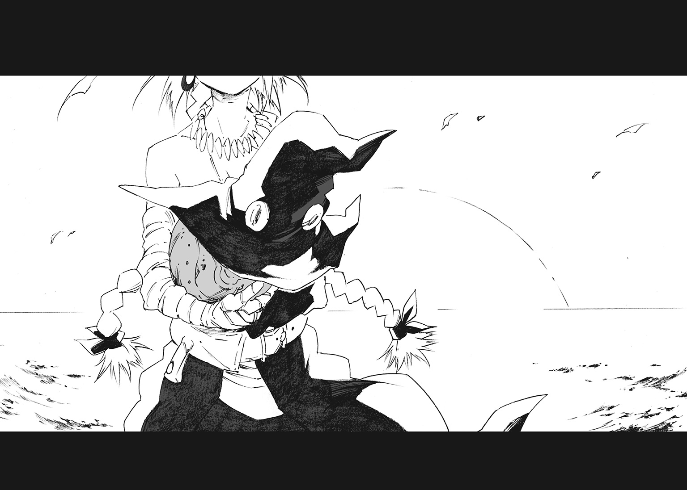
あ と が き
ファンタジーが好きです。
ライトノベルのみならず、ゲーム、漫画、映画と古今東西において数え切れないほどのファンタジー作品があります。超王道的ジャンルです。
剣だ槍だ。杖だ弓だ。魔法や怪物がわんさか出てくる世界に憧れます。まだまだ捨て切れない子供心が刺激されてしまいます。
ところが現実は突然に謎の力が発現したり、古傷が疼いたり、異世界への召還もないので悲しいです。とても悲しいです。
そんな幻想を求める作者の悲しみを背負って、本作が生まれました。噓です。
遅れまして、狗彦と申します。人生初の出版となりました。
雪国の生まれ。氷属性なので炎に弱いです。ついでにインドア趣味が極まり過ぎて腰が痛いです。一刻も早く鋼鉄製の背骨への換装が必要です。
本作、「五色の魔女」は第一回集英社ライトノベル新人賞で特別賞を頂きました。一回目なので、なんだか縁起がいいような気がします。
この作品が選考を一つずつ越えていくごとに、期待と緊張が爆発的に増していきました。今でも思い出せます。
このシーンをこう書いておけばよかった。あのキャラクターをこう動かせばよかった。
いまさら考えても仕方のない後悔だってしてしまいます。投げた球はもうどうにもならない。それがわかっていても、悶々と考えてしまう。
そんなことを考えながらゲームをしてました。集中できないものだから、スコアも最悪です。
とうとう最終選考を経て、受賞の電話を頂いたとき、嬉しいながらも、茫然自失の状態でした。
頭が真っ白ふわふわ。「形容しがたい」という表現が一番しっくりくるのでしょうか。これから物書きとして、この表現を使っていいのかどうか悩むところです。
そんなこんなで喜びを嚙みしめるのに、一カ月はかかったと思います。強烈無比な幸福は受け止める側にも覚悟がいるのだと学んだ次第であります。
さて本作、「五色の魔女」はタイトル通り、魔女を扱った作品です。中世ヨーロッパの世界観で活躍することが多い魔女を、近世風の舞台にまで繰り上げて登場させました。
作中に登場する魔女達は、それぞれ「五つの色」を司っております。なんだか戦隊モノみたいです。戦隊モノならば「赤色」が主役と相場が決まっておりますが、この物語は「黄色」がメインです。大きな使い魔を連れて、頑張ったり頑張らなかったりします。
善悪問わず、好き放題してくれやがる魔女達を楽しんでいただければ幸いです。
最後に謝辞を述べさせていただきます。
素晴らしいイラストを添えていただきましたみっつばー様、今にもグリグリ動き出しそうなキャラクター達を描いてくださって有難うございました。特にスチーマーの大きい身体！ 太い腕！ 耳！ カッコイイし、可愛いです。第二次性徴期を既に終えた私ですが、あれくらい大きくなりたいです。
担当編集様、大変、お世話になりました。推敲の際にはたくさんの御助力もいただきました。数多くある作品の中で、「五色の魔女」を強く推してくださったそうです。感謝以外の言葉が出ません。
未熟な若造を温かく迎えてくださったダッシュエックス編集部様。講評を頂いた新房昭之監督、コメントいただいた山形先生、印刷所様、書店様。そしてこの本を手にとってくれた読者の皆様。この作品に触れ、関わってくださった皆様に最大限の感謝させていただきます。たくさんの方の力が合わさって生まれた作品です。本当に有難うございました。
それでは、私は文字の海に潜ります。マリアナ海溝もびっくりの深さでしょう。
また会える日を願って、頑張りたいと思います。
狗 彦
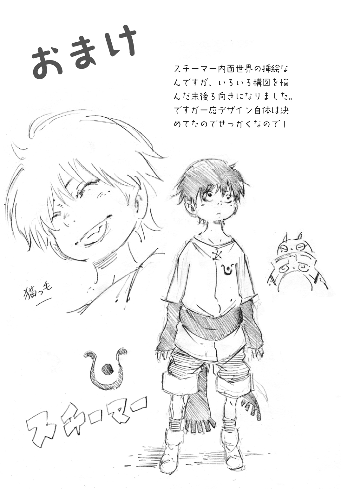
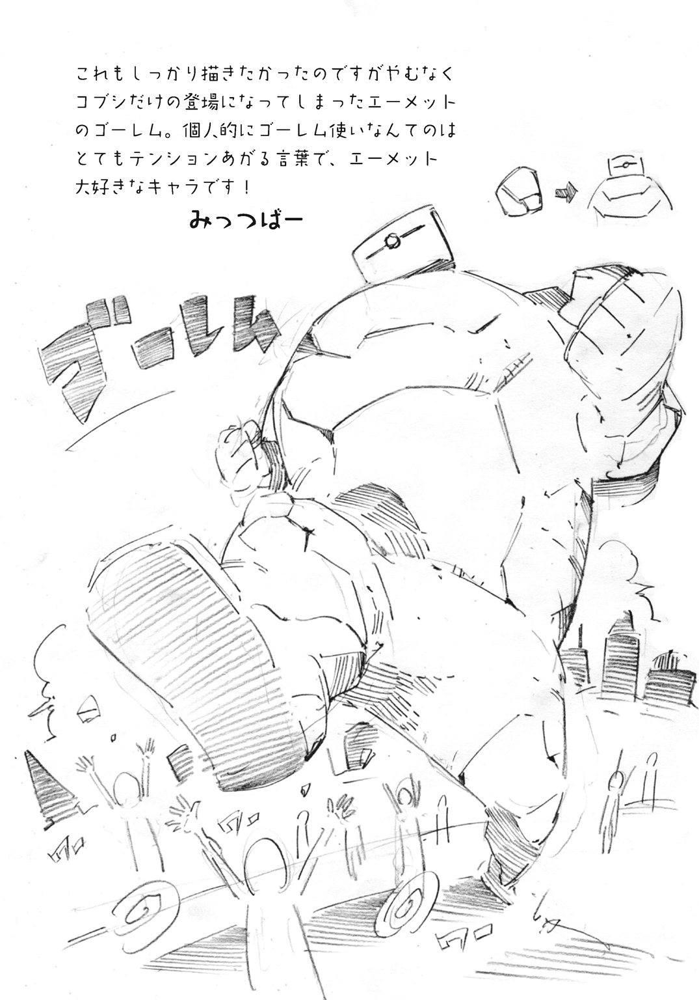
著者紹介
狗彦 いぬひこ
石川県在住。集英社ライトノベル新人賞で特別賞受賞。
好きな色は白と黒。でもオセロは弱い。囲碁もできない。
でも「チェックメイト！」と言ってみたいので、チェスは覚えたい。
illustration
みっつばー
はじめまして。みっつばーと申します。
この度は「五色の魔女」のカバーイラスト、挿絵を担当させていただきました。
もともと大好きだったスチームパンクという世界観に加え、とてもバトル色の強い作品なので自分らしいと自信が持てる絵を入れられたと思います。
それぞれの魔女達のキャラデザ含め楽しんで頂ければ幸いです。
ダッシュエックス文庫DIGITAL
五色の魔女
著者 狗彦
(C) INUHIKO 2015
２０１５年４月30日発行
この電子書籍は、ダッシュエックス文庫「五色の魔女」
２０１５年３月30日発行の第１刷を底本としています。
発行者 鈴木晴彦
発行所 株式会社 集英社
〒１０１－８０５０
東京都千代田区一ツ橋２丁目５番10号
０３－３２３０－６０８０（読者係）
制作所 株式会社デジタルディレクターズ
本作品の全部また一部を無断で複製、転載、改竄、インターネット上に掲載すること、および有償無償に関わらず、本データを第三者に譲渡することを禁じます。なお個人利用の目的であっても、コピーガードを解除しての複製は、法律で禁じられています。